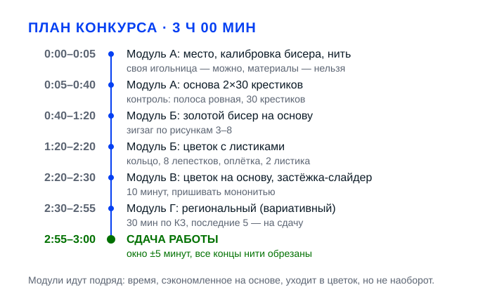
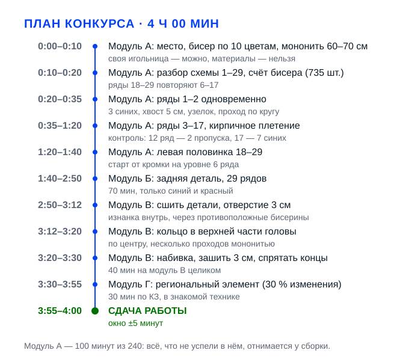
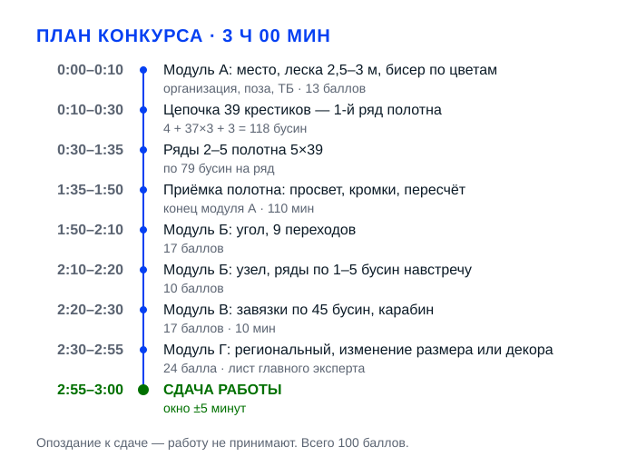

Бисероплетение (Р)
Задания ниже — официальные файлы «Абилимпикс» (источник: abilympics-russia.ru), разложенные по категориям. Решения написаны по тексту задания, регламенту и критериям оценки; в них указано, что именно проверяет эксперт.
Школьник
14–16 лет, базовый уровень заданияВыдержка из официального конкурсного задания: страницы, относящиеся к категории «Школьник» (стр. 4–12 источника).
Пошаговое решение
Разбор по официальному конкурсному заданию для категории «Школьники»: за три часа нужно изготовить браслет с декоративным цветком. Работа идёт четырьмя модулями подряд: модуль А — сорок минут на основу браслета в технике монастырского плетения в одну иглу, размер 2×30 крестиков; модуль Б — сто минут на прикрепление золотого бисера к основе и плетение цветка с листиками в смешанной технике; модуль В — десять минут на соединение основы с цветком и застёжку-слайдер; модуль Г — региональный, тридцать минут, до тридцати процентов изменения задания, формулировку выдают на площадке. Баллы в опубликованном задании не расписаны, поэтому ориентир — результат каждого модуля и то, что эксперт смотрит в первую очередь: ровность плетения, соответствие схеме, аккуратная изнанка и обрезанные концы нити. С собой разрешено взять только игольницу — бисер, иглы, ножницы и застёжку выдают на месте.

Задача 1. Разложить место, откалибровать бисер и подготовить нитьМодуль А · 40 минут на основу вместе с подготовкой
Сначала место, потом плетение. Монастырское плетение в одну иглу прощает многое, но не разнокалиберный бисер и не перекрученную мононить: первые пять крестиков задают ширину всему браслету, и исправить это потом нельзя, не распустив половину. Поэтому в подготовку входят три вещи — свет и посадка, калибровка бисера по размеру и цвету, правильно отрезанная мононить. На площадку можно принести только игольницу; бисер, иглы, ножницы, застёжку и основу выдают на месте, поэтому раскладка начинается с приёмки выданного набора, а не с собственных запасов.
Действие 1.1. Организовать рабочее место
Шаг 1.1.1
Принимаем выданный набор и раскладываем его по зонам: бисер — в ячейки или на ворсистую салфетку по цветам, иглы — в игольницу воткнутыми, а не лежащими, ножницы — справа от рабочей руки лезвиями от себя, мононить — на катушке, чтобы не путалась. Застёжку-слайдер и бусины для цветка кладём отдельно, в стороне: они понадобятся не раньше второго модуля. Свою игольницу ставим так, чтобы в неё можно было воткнуть иглу не глядя, наклоняясь вправо.
Порядок на столе — это не эстетика, а время. Основа 2×30 — сто восемьдесят с лишним бисерин, и каждая потерянная минута на поиск нужного цвета уходит из сорока минут модуля А. Кроме того, эксперт смотрит, как организовано место: рассыпанный по столу бисер и игла, лежащая остриём к краю, читаются как неготовность к работе, а не как творческий беспорядок.
Проверьте себя двумя вопросами: дотягиваетесь ли вы до каждого цвета, не вставая, и видите ли остриё иглы, когда её берёте. Бисер не должен лежать горкой на голом столе — он катается и скатывается на пол; подложите салфетку или крышку от контейнера с бортиком.
Самая частая ошибка — высыпать весь бисер одной кучей «чтобы был под рукой»: через десять минут в куче не разобрать, где белый, где золотой, а золотые бисерины для оплётки придётся выбирать по одной, теряя по минуте на каждую. Вторая — оставить ножницы открытыми на краю стола.
Эксперт обходит рабочие места в первые минуты модуля А и отмечает, разложены ли материалы по цветам и безопасно ли лежит инструмент. Отдельно фиксируется, лежит ли инструмент в пределах салфетки: игла на голом столе — риск потерять её в бисерном ворохе.
Шаг 1.1.2
Садимся так, чтобы локоть рабочей руки лежал на столе, а не висел: тогда кисть работает пальцами, а не всем плечом, и через час плетения рука не дрожит. Лампу ставим слева и чуть впереди, если вы правша, — свет должен падать на бисерину, а не в глаза, и не давать тени от собственной руки на рабочую зону. Расстояние от глаз до плетения — примерно тридцать сантиметров, спина прижата к спинке стула, обе ноги на полу. Контейнер с бисером придвигаем вплотную к салфетке, чтобы не тянуться через весь стол.
Мелкая работа при плохом свете заставляет наклоняться всё ниже, и через двадцать минут начинает болеть шея, а точность падает именно там, где нужна: в подсчёте крестиков и в натяжении нити. Ровная посадка и направленный свет — это не про здоровье в общем смысле, а про то, что темп держится все три часа, а не первые сорок минут.
Проверка простая: положите иглу и посмотрите, нет ли тени от руки на том месте, где вы плетёте. Если тень есть — переставьте лампу. Если приходится наклоняться, чтобы разглядеть отверстие бисерины, — света мало или он стоит не с той стороны.
Ошибка — работать при общем потолочном свете, «пока видно». Вторая — поставить лампу справа правше: рука с иглой закрывает именно ту бисерину, в которую нужно попасть, и плетение начинает идти на ощупь, с промахами и растянутыми крестиками.
Наблюдает за посадкой и освещением в начале модуля: сгорбленная спина и работа «носом в бисер» — типичный признак участника, который потеряет темп к середине конкурса.
Шаг 1.1.3
Берём иглу для бисера — короткую, номер 12, длиной около трёх сантиметров: длинная игла гнётся в пальцах и цепляет соседние бисерины, а короткая служит рычагом, которым удобно проталкивать нить в тесном отверстии. Проверяем ушко на просвет: оно должно быть гладким, без заусенца, иначе мононить будет рваться именно у ушка, и произойдёт это в самом неудобном месте. Иглу втыкаем в игольницу, а не кладём на салфетку — потерянная игла находится на полу, а не на столе.
Обрыв нити у ушка — самая обидная поломка: она случается не от старости нити, а от заусенца, который не видно глазом, и повторяется с новой нитью снова и снова. Замена иглы занимает секунды, а поиск места обрыва в уже сплетённых тридцати крестиках — минуты, которых в модуле А нет.
Проведите ногтем по внутренней кромке ушка: заусенец чувствуется как ступенька. Проденьте мононить и потяните её в обе стороны под небольшим углом — нить должна скользить, а не скрипеть. Если слышен скрип, берите другую иглу.
Работать иглой с погнутым кончиком: она не проходит в отверстие с первого раза, и участник начинает давить, ломая бисерину. Осколок в плетении потом виден как скол на кромке, и убрать его можно только распустив ряд.
Обращает внимание на инструмент при первом же проколе: игла, которую приходится проталкивать с усилием, — прямой путь к сколам бисера и к снижению оценки за аккуратность.
Действие 1.2. Откалибровать бисер по размеру и цвету
Шаг 1.2.1
Калибруем: высыпаем бисер небольшой порцией на салфетку и отбираем бисерины одного диаметра, сравнивая их попарно — прикладываем две бисерины отверстиями друг к другу и смотрим, совпадают ли они по высоте. Те, что заметно толще или тоньше остальных, откладываем в отдельную крышку: они пойдут на серединку цветка или на внутренние ряды, где разница не видна. Для основы берём только ровный бисер — примерно одного размера, без сколов и с одинаковыми отверстиями.
Монастырское плетение держится на том, что бисерины в крестике прилегают друг к другу. Одна толстая бисерина в ряду раздвигает соседние, и полоса начинает идти волной — а из двух рядов по тридцать крестиков волна превращается в заметный изгиб всего браслета. Выпрямить это натяжением нельзя: перетянешь нить — крестики сожмутся и браслет станет короче заявленных размеров.
Проверка — линейкой: выложите вплотную десять откалиброванных бисерин и измерьте ряд. Потом выложите десять любых из общей массы: если разница больше полутора-двух миллиметров, калибровка не закончена. На глаз это не видно, на линейке видно сразу.
Брать бисер прямо из пакета, не глядя: в дешёвых наборах разброс по диаметру доходит до десяти процентов, и к десятому крестику полоса уже «гуляет». Вторая ошибка — отбраковывать только явный брак, оставляя «почти такие же» бисерины, которых в массе большинство.
Эксперт смотрит на кромку готовой основы сбоку, на уровне глаз: волна и «ступеньки» видны именно в профиль, а не сверху. Если волна уже видна, он ищет её причину в конкретной бисерине и просит показать, как участник отбирал материал.
Шаг 1.2.2
Отдельно проверяем золотой бисер: он почти всегда с покрытием, и покрытие ведёт себя по-разному. Протираем несколько бисерин влажной салфеткой и смотрим, не остался ли на белой ткани золотистый след — если остался, этот бисер будет пачкать белую основу цветка и руки, и его лучше пустить только на изнанку или на те места, где он не касается белого. Заодно проверяем, не слиплись ли бисерины от лака: такие разминаем пальцами или отбрасываем, потому что в иглу они не пойдут.
Полинявший золотой бисер — это не косметический дефект: он оставит золотые разводы на белых бисеринах кольца, а оттереть их невозможно, не разобрав цветок. На конкурсе работу смотрят при ярком свете и с лупой на стыках, поэтому следы покрытия читаются как грязь в плетении.
Салфетка после протирания осталась белой — бисер годится. Отдельно проверьте горсть на просвет: однотонный бисер не должен просвечивать пятнами, а золотой — иметь проплешины на кромке отверстия. Заодно отложите в сторону бисерины с матовым налётом — они не блеснут в оплётке и будут выглядеть как пыль на цветке.
Пустить линяющий золотой бисер на лицевую сторону цветка: через час работы белые лепестки приобретут желтоватый оттенок, и это уже не исправить. Вторая ошибка — не проверить слипшиеся бисерины и потом ломать их иглой прямо в плетении.
Смотрит на чистоту цвета белых лепестков и на отсутствие золотых разводов на стыках — это первый признак, что участник проверял материал до работы. Проверяет цвет лепестков на просвет, у окна: разводы от покрытия видны именно так, а не под лампой.
Шаг 1.2.3
Считаем и раскладываем по ячейкам: на основу 2×30 нужно около ста восьмидесяти бисерин основного цвета — первый крестик требует четыре бисерины, каждый следующий три, всего шестьдесят крестиков. Отдельно отсыпаем шестнадцать белых на кольцо цветка, восемь бусин на лепестки, девять золотых на оплётку каждой бусины и запас на зубчики и листики. Запас делаем примерно в четверть: бисерина может скатиться, лопнуть или не пройти в иглу.
Считать заранее нужно не из педантизма: если бисера не хватит на последние пять крестиков основы, замена будет другого оттенка, и стык будет виден на самом видном месте — у застёжки, куда смотрят в первую очередь. Заранее отсыпанный запас снимает этот риск и экономит время на перебирание общей массы в середине работы.
Пересчитайте отсыпанное десятками, раскладывая по десять бисерин в ряд на салфетке: восемнадцать рядов по десять — это основа с запасом. Если считать «на глаз», ошибка обнаружится только на последнем крестике, когда менять уже нечего.
Отсыпать ровно столько, сколько по расчёту, без запаса: одна потерянная бисерина на полу — и последний крестик плести нечем. Вторая ошибка — считать не считая, а «прикидывая», и обнаруживать нехватку в конце модуля А, когда время на пересчёт уже ушло.
Ничего не говорит вслух, но по количеству отсыпанного видно, считал участник или сыпал на глаз; на сдаче нехватка бисера одного оттенка бросается в глаза первой.
Шаг 1.2.4
Отсыпаем отдельную порцию — двадцать-тридцать бисерин основного цвета и десяток золотых — в отдельную крышку и держим её закрытой, чтобы запас не смешался с рабочим бисером. Региональный модуль меняет до тридцати процентов задания, и почти всегда это дополнительный элемент из того же материала; если брать его из общей массы, к концу модуля Б может выясниться, что основа добрана, а на вставку бисера нужного оттенка уже нет.
Региональный модуль идёт последним, и материал к нему никто не выдаст дополнительно: по условиям конкурса свои материалы приносить нельзя, значит, всё, что есть на столе, — это и есть ваш запас. Отложенная горсть снимает риск, что в последние тридцать минут придётся вплетать элемент из бисера другого оттенка, а такая вставка читается как чужеродная деталь.
Запас лежит отдельно, его видно, он не смешан с рабочим бисером. Пересчитайте его десятком после модуля Б: если осталось меньше двадцати бисерин основного цвета, скажите об этом эксперту до начала модуля Г, а не после.
Потратить запас на переделку в модуле Б — и остаться без материала в модуле Г. Вторая ошибка — держать запас в общей куче, где он смешивается с рабочим бисером и перестаёт быть запасом. Третья ошибка — отсыпать запас «на глаз», горстью: его либо не хватит, либо он рассыплется по столу в первые же минуты.
Обращает внимание, есть ли у участника резерв материалов к началу модуля Г: отдельная закрытая крышка с бисером на столе видна сразу. Если запаса нет вовсе, это пока не ошибка — но к модулю Г эксперт придёт с вопросом, из чего делать вставку.
Действие 1.3. Подготовить мононить и расписать время
Шаг 1.3.1
Отрезаем мононить длиной около семидесяти-восьмидесяти сантиметров — так, чтобы её хватало на всю основу и оставался хвост пять-семь сантиметров. Держим мононить натянутой и смотрим на просвет: она должна быть прозрачной и ровной, без белых заломов и утолщений — заломленное место рвётся первым. Продеваем конец в иглу, второй конец оставляем свободным, не завязывая на нём крупный узел: узел всё равно пройдёт сквозь отверстие и будет мешать.
Длина нити — компромисс. Слишком короткая закончится на середине основы, и придётся прятать концы и начинать новую — стык в монастырском плетении виден как утолщение. Слишком длинная путается, трётся о край стола и заламывается, а заломленная мононить рвётся в самый неподходящий момент. Семьдесят-восемьдесят сантиметров — рабочий диапазон для тридцати крестиков в две ширины.
Проверьте: нить проходит через ушко без скрипа, кончик не расщепился, на всей длине нет участков, где мононить мутнеет. Потяните за оба конца умеренно — она должна пружинить, а не тянуться как резинка.
Резать нить «на глаз», а потом сращивать на середине: узел на рабочей нити не проходит в бисерину и застревает, плетение останавливается, и приходится распускать ячейку. Вторая ошибка — взять мононить тоньше, чем нужно: она режет бисерины по кромке отверстия.
Обращает внимание на узелки в плетении и на утолщения в ряду: сращённая нить — самый заметный дефект изнанки. Заодно смотрит, как участник держит катушку: мононить, смотанная в кольцо на пальце, заламывается и рвётся в работе.
Шаг 1.3.2
Расписываем время по модулям на листке или держим в голове, но с цифрами: модуль А — сорок минут на основу, модуль Б — сто минут на золотой бисер и цветок, модуль В — десять минут на сборку и застёжку, модуль Г — тридцать минут на региональное задание. Всего три часа. Ставим себе контрольную точку: к сороковой минуте основа должна быть закончена и закреплена, даже если в ней двадцать восемь крестиков вместо тридцати — лучше короче и ровнее, чем длиннее и скомканно.
Модуль Б в два с половиной раза длиннее модуля А, и это прямое указание, где основная работа: цветок с оплёткой и листиками отнимает больше времени, чем сама основа. Участники, которые задерживаются на основе, потом делают цветок наспех, и именно цветок эксперт рассматривает в первую очередь — он в центре композиции.
К двадцатой минуте модуля А у вас должно быть сплетено не меньше пятнадцати крестиков. Если больше десяти — темп в порядке; если меньше — сокращайте калибровку и переходите к плетению, не дожидаясь идеального отбора бисера.
Ошибка — плести основу «до идеала», переделывая каждый кривой крестик: время уходит, а цветок остаётся недоделанным. Вторая — не следить за часами вообще и узнать о конце модуля А, когда уже начался модуль Б.
Эксперт видит распределение времени по готовности модулей: законченная основа к сороковой минуте и начатый цветок — признак того, что участник планировал работу.
Задача 2. Сплести основу браслета 2×30 крестиковМодуль А · 40 минут · результат модуля — выполненное плетение основы
Основа — это полоса из двух рядов по тридцать крестиков, сплетённая в технике монастырского плетения в одну иглу. Плетение идёт не «по кругу», а по спирали вокруг ячеек: каждая новая бисерина цепляется за предыдущую, и направление следующего крестика зависит от того, куда смотрит нить на выходе — вниз или вверх. Отсюда главное правило модуля: не считать крестики через силу, а держать в голове направление и проверять его после каждой ячейки. Ровная полоса длиной около пятнадцати сантиметров — это и есть результат модуля А.
Действие 2.1. Запустить первый крестик и первый ряд
Шаг 2.1.1
Набираем на иглу четыре бисерины и сдвигаем их к концу нити, оставив хвост пять сантиметров. Завязываем конец нити между первой и второй бисериной — узел ложится в промежуток, а не на бисерину, — и проходим иглой во вторую бисерину по направлению к хвосту. Подтягиваем: четыре бисерины должны встать квадратом, а узел — уйти под бисерину и спрятаться в её отверстии, чтобы его не было видно с лицевой стороны.
Первый крестик — фундамент: от того, как он затянут, зависит, будет ли вся полоса квадратной или её поведёт вкось. Узел, оставленный снаружи, виден на лицевой стороне у застёжки, а это то место, которое эксперт рассматривает первым. Спрятанный узел — это ещё и страховка: если нить где-то перетрётся, плетение не распустится до конца.
Квадрат должен быть ровным, все четыре бисерины — на одной плоскости, нить выходит из второй бисерины, узел не прощупывается ногтем с лицевой стороны. Потяните за хвост — крестик не должен разъезжаться.
Затянуть узел так, что бисерины встают «домиком» и крестик перекашивается. Или, наоборот, оставить его незатянутым — тогда первый крестик будет шире всех остальных, и полоса начнётся с утолщения, которое уже не убрать.
Смотрит на первый крестик под лампой, поворачивая работу: узел на лицевой стороне и перекошенный квадрат — то, что фиксируется сразу, а не в конце. Отдельно проверяет, спрятан ли узел: он просит перевернуть работу и смотрит на изнанку первого крестика.
Шаг 2.1.2
Набираем три бисерины, возвращаемся иглой во вторую бисерину первого крестика и протягиваем нить через пятую и шестую бисерины — те, что мы только что набрали. Движение идёт по часовой стрелке: игла обходит ячейку снаружи, а не ныряет внутрь квадрата. Подтягиваем нить сразу после выхода, но умеренно: крестик должен стать квадратным, а не сжаться в ромб.
Это первый настоящий крестик плетения, и на нём проверяется, понял ли участник схему. Если нить прошла не через пятую и шестую, а как-то иначе, второй крестик окажется повёрнутым на девяносто градусов, и дальше вся полоса пойдёт «винтом» — исправлять придётся с самого начала, потому что распустить середину, не задев соседние ячейки, почти невозможно.
Два крестика лежат в одну линию, между ними нет щели, нить входит и выходит из боковых бисерин симметрично. Посмотрите на просвет: в каждом крестике должно быть видно квадратное отверстие, а не треугольник.
Протянуть нить не через те бисерины: крестик встаёт боком, и это видно только через пять-шесть ячеек, когда полоса уже пошла дугой. Вторая ошибка — тянуть нить изо всех сил, отчего второй крестик меньше первого.
Проверяет первые три-четыре крестика и просит показать направление нити: на этом этапе ошибку ещё можно исправить почти без потерь. Заодно смотрит на просвет между первым и вторым крестиком: щель означает, что нить не подтянута до конца.
Шаг 2.1.3
Продолжаем ряд: каждая следующая ячейка — три бисерины, возврат в предыдущую и выход через две набранные, направление каждый раз уточняем по нити. Плетение идёт по часовой стрелке, пока нить выходит из бисерины вверх; как только она пошла вниз, следующую ячейку плетём против часовой стрелки. Дойдя до конца первого ряда, не разворачиваем работу в руках — держим её одинаково и меняем направление движения иглы.
Правило «нить вниз — против часовой, нить вверх — по часовой» заменяет запоминание схемы на каждом шаге: вместо того чтобы сверяться с рисунком, вы смотрите на выход нити. Это и есть суть монастырского плетения в одну иглу, и тот, кто держит это правило в голове, не сбивается на тридцатом крестике.
После каждого крестика проверяйте одно: полоса остаётся прямой, а не закручивается в спираль. Положите первые десять крестиков на стол — они должны лежать ровно, не поднимаясь винтом. Ещё один признак: расстояние между крестиками одинаковое — если оно «дышит», значит, натяжение гуляет от ячейки к ячейке.
Плести «на автомате», не глядя на направление нити: через двадцать ячеек полоса начинает закручиваться, и распускать приходится до места, где ошибка появилась, — а это половина модуля А. Третья ошибка — разворачивать работу в руках на каждом крестике: так теряется ориентация и направление нити путается.
Смотрит на кривизну полосы, положив её на стол: винт и спираль видны сразу, и это первый признак сбитого направления. Если полоса идёт винтом, он смотрит на первые ячейки: ошибка почти всегда там, а не в месте, где её заметили.
Действие 2.2. Вести второй ряд и держать натяжение
Шаг 2.2.1
Начинаем второй ряд: в начале каждого ряда набираем по три бисерины — это принципиальное отличие от середины, где на ячейку идёт две. Набираем семнадцатую, восемнадцатую и девятнадцатую бисерины и проходим в шестнадцатую, замыкая ячейку. Дальше каждая следующая ячейка второго ряда — две бисерины, и ряд заканчивается тоже двумя, а не тремя. Направление поворота проверяем по нити: если она выходит вниз, первый крестик ряда плетём против часовой стрелки, и наоборот.
Три бисерины в начале ряда нужны потому, что первая ячейка нового ряда замыкается не на предыдущую ячейку этого ряда, а на боковую бисерину первого — одна бисерина уходит на поворот. Если набрать две, ряд начнёт «съезжать» вниз и полоса получится клином: широкой с одного конца и узкой с другого.
К концу второго ряда ширина должна быть ровно два крестика по всей длине. Приложите линейку поперёк через каждые десять сантиметров: ширина не меняется — значит, повороты сделаны правильно. Второй признак — конец ряда: он должен быть ровным, без «ступеньки» вниз или вверх относительно предыдущего.
Набрать две бисерины в начале ряда «как в середине»: первый крестик второго ряда получается меньше остальных, и вся полоса идёт на сужение. Ошибка вылезает не сразу, а к двадцатому крестику, когда переделывать уже поздно.
Считает крестики в ширину на нескольких участках: два, и только два, — иначе модуль не закрыт по результату. Если ширина где-то ушла в один крестик, он просит показать начало этого ряда: там и набрано неверное число бисерин.
Шаг 2.2.2
Держим натяжение: после каждой замкнутой ячейки подтягиваем нить коротким движением кисти, пока крестик не станет квадратным, и сразу отпускаем. Бисерины в ряду должны касаться друг друга, но не вдавливаться одна в другую — проверяется ногтем: если соседние бисерины пружинят, нить недотянута; если полоса встала колом и не гнётся, перетянута. Если полоса пошла волной, ослабьте натяжение на две-три ячейки и выровняйте её, прежде чем продолжать.
Натяжение — единственный параметр, который определяет и длину, и жёсткость браслета. Недотянутая нить даёт рыхлое полотно, в котором видны просветы между бисеринами, и браслет растягивается на руке. Перетянутая — укорачивает полосу на полтора-два сантиметра, и тогда тридцать крестиков не сходятся на запястье.
Полоса гнётся дугой, но не складывается; просветов между бисеринами нет; длина тридцати крестиков — примерно четырнадцать-пятнадцать сантиметров. Измерьте после двадцатого крестика и пересчитайте ожидаемую длину.
Тянуть нить «до упора» на каждом крестике: к концу ряда полоса становится короче и жёстче, а бисерины начинают лопаться по кромке отверстия. Вторая ошибка — не подтягивать вообще, оставляя петли на изнанке.
Смотрит на просветы между бисеринами и на изнанку: петли и «дорожки» из неподтянутой нити — типичный дефект, который видно при наклоне работы к свету.
Шаг 2.2.3
Считаем крестики, а не бисерины, и делаем это по ряду: два крестика в ширину, тридцать в длину — всего шестьдесят ячеек. Чтобы не сбиться, каждые десять крестиков отмечаем себе вслух или кладём бисерину другого цвета на салфетку как счётную метку. Считать нужно в конце каждого десятка, а не в конце работы: пересчитывать тридцать крестиков на глаз — верный способ ошибиться на два.
Длина браслета задана в задании как 2×30 крестиков, и это не рекомендация: короче — не сойдётся на руке, длиннее — повиснет. Ошибка в счёте на пять крестиков — это полтора-два сантиметра, то есть разница между «сидит» и «сползает». Пересчёт по десяткам занимает секунды и снимает весь риск.
Разложите полосу и пересчитайте крестики в каждом ряду, ведя иглой по ячейкам. В ряду должно быть тридцать; если двадцать девять — доплетите один, если тридцать один — оставьте, лишний крестик лучше убрать в застёжку, чем распускать ряд.
Считать бисерины вместо крестиков: в крестике их четыре, но часть общая с соседними, и счёт «по бисеринам» всегда даёт ошибку. Вторая ошибка — считать только один ряд и считать, что второй такой же. Третья ошибка — считать крестики по памяти, не отмечая десятки: сбитый счёт обнаруживается при сдаче модуля.
Пересчитывает ячейки при сдаче модуля, ведя пальцем по ряду: расхождение с заявленными 2×30 видно сразу и стоит участнику зачёта модуля. Сверяет заявленное количество с фактическим, ведя иглой по ячейкам, и отмечает, совпадает ли ширина по всей длине.
Действие 2.3. Закончить основу и закрепить нить
Шаг 2.3.1
Доплетаем до тридцатого крестика и примеряем: оборачиваем полосу вокруг запястья так, чтобы она лежала свободно, без натяга, и смотрим, сколько остаётся до застёжки. Застёжка-слайдер добавляет примерно сантиметр с каждой стороны, поэтому полоса должна быть чуть короче обхвата запястья. Если полоса длиннее — не отрезаем, а оставляем как есть: лишние крестики уйдут под застёжку.
Примерка нужна потому, что длина в крестиках и длина в сантиметрах связаны через размер бисера: при бисере покрупнее тридцать крестиков дадут шестнадцать сантиметров, при мелком — тринадцать. На конкурсе важен именно результат «браслет сидит», а не абстрактное число, поэтому последнюю примерку делают до закрепления нити, а не после.
Полоса оборачивается вокруг запястья и смыкается с запасом в один-полтора сантиметра на застёжку. Проверьте, что при этом она не перекручивается: оба ряда должны смотреть лицевой стороной наружу. Проверьте и то, что полоса не давит: под ней должен свободно проходить палец, иначе на руке она будет врезаться.
Мерить на свою руку «как есть», забыв про застёжку: браслет потом не застёгивается. Вторая ошибка — обрезать лишние крестики ножницами, разрезав нить: полоса распускается на глазах, и восстановить её за оставшееся время не выйдет.
Наблюдает за примеркой: участник, который прикладывает полосу к запястью до закрепления нити, показывает понимание, что изделие должно носиться, а не только лежать на столе.
Шаг 2.3.2
Закрепляем рабочую нить: проходим иглой через три-четыре соседние бисерины в обратном направлении, затем ещё раз через две, делая поворот, и затягиваем. Узел не завязываем крупный — вместо него достаточно двух проходов в разных направлениях, которые заклинивают нить в отверстиях. Обрезаем конец в миллиметре от бисерины, не под корень: слишком короткий кончик выскользнет из отверстия при первой же носке.
Монастырское плетение держится не на узле, а на трении: нить, прошедшая через несколько бисерин в обратном направлении, зажимается в отверстиях и не выходит. Узел в бисерине всё равно виден как бугорок на изнанке, а кончик, обрезанный под корень, выскальзывает и уводит за собой весь ряд — работа распускается от края.
Потяните за обрезанный кончик: он не должен вытягиваться. Проведите пальцем по изнанке — узелков и бугорков нет. Кончик не торчит больше чем на миллиметр. Проверьте и обратную сторону закрепления: с изнанки не должно быть петли, которая цепляется за одежду.
Обрезать нить под корень у самой бисерины: кончик уходит внутрь, ряд ослабляется, и к модулю В это место расходится. Вторая ошибка — завязать два крупных узла подряд, которые потом видны как шишка на изнанке.
Смотрит на изнанку при ярком свете: закреплённая нить не должна читаться ни узлом, ни бугорком, ни торчащим кончиком. Просит потянуть за кончик нити: если он выходит, значит, закрепление сделано в одном направлении и не заклинило нить.
Шаг 2.3.3
Проверяем геометрию: кладём полосу на стол и смотрим вдоль неё одним глазом — линия должна быть прямой, без волны и без «пропеллера», когда один конец лежит, а другой поднят. Проглаживаем пальцами от середины к концам: полоса должна лечь плоско. Если есть участок, где она выгибается, найдите в нём бисерину, которая толще остальных, и замените её: это делается до закрепления нити, а не после.
Волна и пропеллер — следствие двух вещей: разнокалиберного бисера и сбитого натяжения. И то и другое накапливается к середине полосы, поэтому проверять надо не края, а именно середину. Ровная полоса — половина оценки за основу: дальше на неё ляжет золотой зигзаг, и любая кривизна под ним станет заметнее вдвое.
Полоса лежит на столе без зазоров под линейкой, концы на одной высоте, при нажатии пальцем в середину не щёлкает. Ширина по всей длине — два крестика, проверяется линейкой в трёх местах. Проверьте и торцы: они должны быть ровными, без бисерин, выступающих вбок, — именно к торцам крепится застёжка.
Оставить волну, рассчитывая, что цветок в середине её замаскирует: цветок крепится по центру и закрывает сантиметра четыре, а волна идёт по всей длине. Вторая ошибка — выпрямлять полосу, растягивая её руками: крестики деформируются, и браслет становится короче.
Придирчиво смотрит на полосу сбоку, на уровне стола: волна — самый частый повод снизить оценку за модуль А, потому что она видна на готовом изделии. Кладёт полосу на белый лист и смотрит на просвет: перетянутые крестики дают тёмные точки, где нить стянула бисерину.
Шаг 2.3.4
Если мононить заканчивается на середине ряда, не тянем последние сантиметры: выводим иглу на изнанку, проходим через три-четыре бисерины в обратном направлении, закрепляем и обрезаем. Новую нить вводим с изнанки в ту же бисерину, проходим два крестика по ходу плетения и только потом продолжаем набор — стык ложится внутрь полосы, а не на кромку. Если нить рвётся, а не заканчивается, сначала найдите место обрыва: распустите до целой бисерины, иначе новая нить ляжет на повреждённый участок и порвётся снова.
Стык на кромке виден как утолщение и портит ровный край, а внутри полосы его не видно вообще. Новая нить должна пройти через два крестика, чтобы зацепиться за готовое плетение и не вытянуться при первом натяжении: узел в этом месте ставить нельзя, он не пройдёт в бисерину и остановит работу.
Стык не прощупывается с лицевой стороны, кромка в этом месте ровная, без бугорка. Потяните за новую нить до начала плетения — она должна сидеть в плетении, а не выскальзывать из него. Проверьте и натяжение после стыка: первые два крестика на новой нити всегда выходят слабее, их надо подтянуть отдельно.
Сращивать нить узлом: узел не проходит в отверстие бисерины, работа встаёт, и ячейку приходится распускать. Вторая ошибка — начинать новую нить с края полосы: утолщение на кромке останется навсегда и будет видно на готовом браслете.
Ищет стыки, ведя пальцем по кромке: утолщение — признак того, что нить меняли в самом видном месте, а не спрятали внутрь полосы. Если стык найден, он смотрит, насколько ровно легли крестики после него: рыхлое начало новой нити видно как провал в полосе.
Задача 3. Прикрепить золотой бисер на основу браслетаМодуль Б · 100 минут на золотой бисер и цветок
Прикрепление — это не вышивка и не второй слой плетения: золотая бисерина ложится поверх основы и держится на той же мононити, что проходит сквозь крестики. Рисунок идёт зигзагом от кромки к кромке, шаг — ровно один ряд основы: средняя бисерина второго ряда, правая третьего, левая третьего, средняя четвёртого, правая пятого. Порядок точек задан рисунками 3–8 задания, и его нельзя менять местами: зигзаг должен читаться на браслете как ровная ломаная, а не как россыпь.
Действие 3.1. Сделать первые три точки зигзага
Шаг 3.1.1
Выводим иглу на лицевую сторону основы между первой и второй бисеринами верхнего ряда, набираем одну золотую бисерину и уводим иглу на второй ряд, вводя её в среднюю бисерину. Золотая ложится поперёк промежутка, а не вдоль ряда: она должна перекрыть стык двух крестиков. Подтягиваем так, чтобы бисерина прижалась к основе, но не продавила её внутрь — основа в этом месте не должна прогнуться.
Первая золотая задаёт всю геометрию прикрепления: от того, насколько ровно она легла поперёк стыка, зависит, будет ли зигзаг читаться или расплывётся в хаос. Золотой бисер на браслете — акцент, его видно издалека, и любая кривизна здесь заметнее, чем на основном полотне, потому что контрастный цвет подчёркивает каждую неровность.
Золотая бисерина лежит ровно поперёк полосы, её отверстие смотрит вбок, а не вверх. Основа под ней не прогнулась. Промежуток между рядами золотая перекрывает целиком — ни просвета, ни зазора сбоку. Заодно проверьте, что нить не перекрутилась вокруг бисерины: перекрут даёт бугорок, который потом не даст зигзагу лечь ровно.
Протянуть золотую вдоль ряда, а не поперёк: она «утонет» между бисеринами основы и будет выглядеть как случайно попавшая. Вторая ошибка — затянуть нить до прогиба основы: в этом месте появится вмятина, которая останется на готовом браслете.
Смотрит на первую золотую под углом к свету: она должна блестеть всей поверхностью, а не кромкой, — значит, легла плашмя и поперёк. Если первая золотая легла вдоль ряда, он почти наверняка попросит переделать сразу: дальше по этой ошибке пойдёт весь рисунок.
Шаг 3.1.2
Набираем следующую золотую и вводим иглу в среднюю бисерину второго ряда, проходим сквозь неё и набираем ещё одну золотую, выводя иглу в правую бисерину третьего ряда. Получается первый «зуб» зигзага: две золотые на разных уровнях, между ними — один крестик основы по диагонали. Держим нить свободной рукой, чтобы она не провисала под основой: провисшая нить потом цепляется за застёжку и за одежду.
Зигзаг строится не по прямой, а по диагонали через ряд — именно это даёт рисунок, похожий на золотую нитку, прошитую по браслету. Если обе золотые встанут на один уровень, рисунок превратится в две параллельные линии, и это уже не тот узор, который задан схемой: эксперт сверяет направление зигзага с рисунком, а не «общее впечатление».
Две золотые бисерины стоят на разных уровнях, между ними ровно один ряд основы. Проведите по ним пальцем: они не шатаются и не разъезжаются в стороны, но и не врезаются в основу. Заодно посмотрите на изнанку: там должна быть одна короткая перемычка, а не петля через всю полосу.
Ввести иглу не в правую, а в левую бисерину третьего ряда: зигзаг разворачивается в обратную сторону и дальше идёт не туда. Заметить это на третьем шаге легко, на двадцатом — уже нет, и придётся распускать половину прикрепления.
Проверяет направление первого зуба по рисунку 4 и просит участника показать, куда пойдёт следующая золотая, прежде чем тот её наберёт. Сверяет положение иглы в момент выхода из третьего ряда: именно там видно, понял ли участник, куда пойдёт следующая золотая.
Шаг 3.1.3
Третья точка: набираем золотую и выводим иглу в левую бисерину третьего ряда, замыкая первый полный зигзаг через ряд. Дальше ритм повторяется: средняя бисерина четвёртого ряда, правая пятого, левая пятого, средняя шестого. Считать нужно ряды основы, а не золотые бисерины: одна золотая — это половина шага, два ряда — полный шаг. Держите перед глазами рисунок 5–6: там показан переход от второго ряда к третьему, и он же повторяется на каждой паре зубцов.
Ритм «средняя — правая — левая — средняя» и есть та последовательность, которую задание описывает пунктами 1–5: в нём чередуются диагональ вправо и диагональ влево, и получается зигзаг. Сбитый ритм виден не сразу, а через десять сантиметров, когда полосы золота начинают идти вразнобой, и выправить это можно только распустив участок.
Отойдите на полшага и посмотрите на первые пять золотых: они должны образовать симметричную ломаную с одинаковой высотой зубцов. Если один зубец выше остальных — там пропущен ряд. Отдельно проверьте, что золотые не заходят на третий ряд глубже, чем на половину бисерины.
Пропустить ряд при переходе через середину: зубцы получаются разной высоты, и зигзаг начинает «хромать». Вторая ошибка — считать золотые бисерины вместо рядов и терять ориентацию уже на третьем зубе. Третья ошибка — набирать золотую бисерину крупнее остальных: она выпирает из зигзага и ломает линию.
Смотрит на первые пять-шесть золотых с расстояния вытянутой руки: ритм и высота зубцов видны именно так, а вблизи глаз цепляется за отдельные бисерины.
Действие 3.2. Вести зигзаг по всей длине основы
Шаг 3.2.1
Ведём прикрепление вдоль всей полосы, не разворачивая работу: игла идёт то вверх, то вниз через ряд, и рука постепенно находит ритм. Каждые пять-шесть зубцов останавливаемся и проверяем, не сместился ли зигзаг к одной кромке: если он пошёл к краю, следующие две точки делаем с возвратом, а не «как получится». Золотые бисерины берём из отсыпанной кучки, а не из общей массы — так они не смешиваются с основным цветом.
На длине тридцати крестиков ошибка накапливается незаметно: отклонение в полбисерины на каждом шаге даёт к концу сдвиг в несколько миллиметров, и зигзаг уезжает к кромке. Заметить это можно только промежуточным контролем, потому что в процессе рука компенсирует смещение и глаз его не видит.
Зигзаг идёт по центру полосы, вершины зубцов равноудалены от обеих кромок. Проверьте линейкой: расстояние от вершины до края одинаковое через каждые десять сантиметров. Ещё признак: если положить полосу на стол, зигзаг должен идти параллельно кромкам, а не под углом.
Вести зигзаг «по памяти», не сверяясь с кромками: к середине полосы рисунок съезжает в сторону, и это видно на готовом браслете как перекошенный узор. Вторая ошибка — брать золотые из общей кучи и путать их с бисером основы.
Отмечает, держится ли зигзаг центра: смещение к кромке — один из типовых поводов снизить оценку за аккуратность прикрепления. Он также смотрит, не осталось ли на основе участков без прикрепления там, где по схеме должен быть зубец.
Шаг 3.2.2
Держим натяжение золотой нити отдельно от натяжения основы: золотая должна лежать на поверхности, чуть касаясь соседних бисерин, но не врезаясь между ними. После каждой точки подтягиваем коротко и сразу проверяем ширину полосы — она должна оставаться в два крестика. Если полоса начала сужаться, значит, нить стягивает основу, и следующие две-три точки делаем свободнее.
Прикрепление идёт по той же нити, что держит крестики, поэтому любая перетяжка передаётся основе: полоса сужается, браслет укорачивается, а золотые бисерины проваливаются вглубь. Это самая частая причина, по которой готовый браслет оказывается на сантиметр короче расчётного и не застёгивается.
Ширина полосы в местах прикрепления равна ширине в местах без золота. Золотые бисерины выступают над основой примерно на половину своего диаметра, одинаково по всей длине. Отдельно проверьте на просвет: под золотой не должно быть видно просвета между рядами основы.
Тянуть нить после каждой золотой «до щелчка»: основа сжимается, и через десять точек полоса становится уже на треть бисерины. Вторая ошибка — наоборот, оставлять нить свободной, тогда золотые болтаются и цепляются.
Меряет ширину полосы в двух-трёх местах и сравнивает: сужение у прикрепления — системная ошибка натяжения, а не случайность. Если полоса сузилась, он просит показать место, где это началось: там натяжение и было перетянуто.
Шаг 3.2.3
Дойдя до конца полосы, разворачиваемся и ведём зигзаг обратно по второй половине, если так задан рисунок, либо закрепляем нить и переходим к цветку. Разворот делаем через боковую бисерину, а не через крайнюю: крайняя бисерина на торце держит застёжку, и утолщение в ней помешает её поставить. После разворота первые две точки делаем чуть свободнее — на повороте нить ложится по диагонали и тянет сильнее.
Торцы браслета — самое нагруженное место: туда встаёт застёжка, и любое утолщение или петля там мешает зажиму. Разворот через боковую бисерину оставляет торец ровным, а нить уходит внутрь полосы, где её не видно. Это же место эксперт проверяет при сборке — насколько аккуратно сходятся концы.
Торец полосы ровный, без выступающих петель и утолщений, крайние бисерины свободны для застёжки. Потяните за рабочую нить — торец не должен стягиваться гармошкой. Заодно проверьте, что рабочая нить выходит с изнанки, а не тянется по лицу через золотые.
Разворачиваться через крайнюю бисерину: она стягивается, и потом слайдер не надевается или садится криво. Вторая ошибка — оставить на торце длинную петлю нити, которая вылезет наружу при носке. Третья ошибка — делать разворот в самом конце, когда до торца остался один крестик: поворот не помещается, и торец идёт волной.
Осматривает торцы до начала модуля В: если они уже деформированы, застёжка сядет криво, и это будет видно на готовом изделии. Смотрит на торец сбоку: он должен быть ровным, как срез, а не закруглённым.
Действие 3.3. Проверить прикрепление и закрепить нить
Шаг 3.3.1
Откладываем иглу и смотрим на полосу целиком, положив её на белый лист: зигзаг должен читаться как непрерывная ломаная с одинаковыми зубцами, без пропусков и без «двойных» точек. Проверяем обе стороны — перевернув браслет, убеждаемся, что с изнанки нет длинных протяжек золотой нити: в прикреплении нить идёт по лицу, а на изнанку уходят только короткие перемычки между крестиками.
Именно этот контроль отделяет аккуратное прикрепление от «примерно так»: пропущенный ряд и протяжка на изнанке — два дефекта, которые эксперт находит первым делом, потому что они не требуют разглядывания мелочей. Кроме того, длинные протяжки на изнанке быстро цепляются за одежду и вытягиваются, уводя за собой золотую бисерину.
На белом листе зигзаг читается без усилий, зубцы одинаковой высоты, расстояние между ними равное. С изнанки видны только короткие перемычки, не длиннее одного крестика. Проверьте и число зубцов: если их нечётное количество, где-то потерян ряд, и это нужно найти до сборки.
Оставить одну-две длинные протяжки «их же не видно»: они видны при наклоне работы к свету, а при носке именно они вытягиваются первыми. Вторая ошибка — пропущенный ряд в середине: он делит зигзаг на два разных рисунка.
Смотрит на изнанку при наклоне к свету, а не под прямым углом: протяжки видны только на просвет между бисеринами. Он также сравнивает прикрепление с рисунком 7–8: направление зигзага на второй половине должно продолжаться, а не начинаться заново.
Шаг 3.3.2
Закрепляем рабочую нить в толще основы: проходим через три-четыре бисерины в обратном направлении, затем возвращаемся через две, затягиваем и обрезаем в миллиметре. Оставляем длинный хвост только в одном случае — если этой же нитью будем пришивать цветок; тогда хвост в двадцать-двадцать пять сантиметров выводим на изнанку в районе центра, где будет крепление.
Закрепление через несколько бисерин в двух направлениях заклинивает мононить в отверстиях и держит надёжнее узла, который в бисерине всё равно виден. Хвост, оставленный для пришивания цветка, экономит целую операцию в модуле В, где на всё про всё десять минут: искать и заправлять новую нить там просто некогда.
Потяните за обрезанный кончик — он не выходит. С изнанки нет бугорка. Если оставлен хвост для цветка, он выходит ровно в центре полосы, а не сбоку, и не путается с остальным плетением. Заодно убедитесь, что обрезанный кончик не торчит с лицевой стороны: он цепляется за одежду.
Обрезать нить под корень у самой бисерины: закрепление ослабнет, и золотые в этом месте начнут болтаться. Вторая ошибка — оставить хвост для цветка не в центре, а там, где закончилось прикрепление: тянуть нить через пол-браслета придётся вслепую.
Проверяет закрепление, потянув за кончик, и смотрит, где выходит хвост для цветка: это показывает, планировал участник сборку заранее или нет. Отмечает, оставлен ли хвост нужной длины: слишком короткий не дотянется до центра, слишком длинный запутается в плетении.
Задача 4. Сплести цветок с листиками в смешанной техникеМодуль Б · вторая половина модуля, около 60 минут
Цветок — самая заметная часть изделия, и он плетётся в смешанной технике: кольцо из бисера, дуги, крупные бусины в качестве лепестков и золотая оплётка поверх них. Начинается всё с кольца из шестнадцати белых бисерин, на котором держится вся геометрия: восемь бусин первого яруса, восемь дуг, восемь оплетённых бусин с зубчиками. Ошибка в кольце — лишняя или пропущенная бисерина — ломает симметрию, и цветок получается с перекошенным лепестком, который уже не исправить, не разобрав половину.
Действие 4.1. Собрать кольцо и первый ярус лепестков
Шаг 4.1.1
Набираем шестнадцать белых бисерин, сдвигаем к концу нити и замыкаем в кольцо, пройдя иглой через первую бисерину в том же направлении, в котором набирали. Кольцо должно лечь плоско, без перекрута: если одна бисерина повернулась отверстием наружу, кольцо запомнит этот перекос. Проходим кольцо вторым кругом — ещё раз через все шестнадцать бисерин — и только потом подтягиваем.
Второй круг нужен, чтобы кольцо держало форму и не растягивалось, когда на него начнут опираться дуги: на кольцо придёт вес всех восьми лепестков с бусинами и золотой оплёткой. Одинарная нить в кольце растягивается под этим весом, и цветок начинает «складываться» лодочкой. Ровное плоское кольцо — это фундамент симметрии всего цветка.
В кольце ровно шестнадцать бисерин, оно лежит на столе плоским овалом и не горбится. Потяните за оба конца нити в разные стороны — кольцо не должно менять форму больше чем на миллиметр. Заодно проверьте, что все шестнадцать бисерин одного размера: одна толстая выгнет кольцо волной.
Забыть пройти вторым кругом: кольцо выглядит нормально, но при натяжении дуг деформируется, и лепестки встают под разными углами. Вторая ошибка — замкнуть кольцо с перекрутом, когда одна бисерина смотрит вверх, а соседняя вниз.
Считает бисерины в кольце, ведя иглой, — это первое, что он делает, если видит перекошенный лепесток на готовом цветке. Если кольцо перекошено, он почти наверняка предложит переделать его сразу, а не после сборки цветка.
Шаг 4.1.2
Выводим мононить из первой бисерины кольца и набираем один золотой или белый бисер, затем одну бусину и ещё один бисер — получается «бутерброд» бисерина-бусина-бисерина. Возвращаемся иглой через верхнюю бисерину назад, обходя бусину с другой стороны, и выводим иглу в третью бисерину кольца, пропустив вторую. Бусина садится на кольцо как лепесток, а верхняя бисерина работает замком, который держит её на месте.
Замковая бисерина сверху — это то, что не даёт бусине болтаться: без неё бусина разворачивается отверстием к лицевой стороне, и лепесток выглядит дырявым. Пропуск второй бисерины кольца задаёт шаг: восемь бусин на шестнадцать бисерин — ровно через одну, и именно этот шаг потом повторяют дуги и оплётка.
На кольце стоят восемь бусин, все повёрнуты отверстием вбок, верхние бисерины одинаково выступают над бусинами. Расстояние между соседними бусинами одинаковое — проверьте, повернув цветок на ладони. Заодно убедитесь, что верхние бисерины не перекручены: замок должен лежать поперёк бусины, а не вдоль.
Выйти иглой во вторую бисерину вместо третьей: бусины встают вплотную, и на кольце помещается только семь лепестков, а восьмой некуда деть. Вторая ошибка — не поставить замковую бисерину сверху, тогда бусины крутятся вокруг нити.
Проверяет, все ли восемь бусин стоят на своих местах и одинаково ли они развёрнуты: разнобой в повороте виден на готовом цветке как «растрёпанные» лепестки.
Шаг 4.1.3
Проверяем первый ярус до того, как плести дуги: цветок должен лежать плоско, бусины — на одинаковой высоте, кольцо — не стянуто в «звёздочку». Если между бусинами видны просветы разной ширины, значит, шаг сбит, и исправлять это нужно сейчас: распустить один лепесток — минута, распустить ярус с дугами — десять минут из шестидесяти. Проверку делайте на столе, а не на весу: в руке цветок всегда кажется ровным.
Дуги опираются на верхние бисерины замков, поэтому любые перекосы первого яруса передаются второму: перекошенная бусина тянет за собой дугу, дуга — оплётку. На этом этапе дефект ещё локальный, на следующем он станет общим, и цветок придётся переделывать целиком, а времени на модуль Б останется меньше половины.
Восемь бусин на месте, все смотрят в одну сторону, кольцо плоское, высота бусин одинаковая. Положите цветок на стол и нажмите пальцем в центр — он не должен складываться чашей. Проверьте и то, что кольцо не растянулось: его диаметр должен остаться прежним.
Оставить одну бусину с наклоном, рассчитывая, что оплётка её выправит: оплётка фиксирует положение, а не исправляет его. Вторая ошибка — не проверить плоскую посадку кольца и получить цветок-лодочку. Третья ошибка — тянуть нить при каждой бусине сильнее предыдущей: кольцо стягивается в конус, и цветок получается воронкой.
Смотрит на цветок сбоку, на уровне стола: плоскость кольца и высота бусин видны только в профиль, сверху всё выглядит ровно. Обращает внимание на кольцо в профиль: воронка и лодочка видны с первого взгляда.
Действие 4.2. Связать лепестки дугами и оплести бусины золотом
Шаг 4.2.1
Из первой бисерины кольца набираем шесть бисерин, проходим через верхнюю замковую бисерину первой бусины, набираем ещё шесть бисерин и выводим иглу в третью бисерину кольца. Получается дуга, которая обхватывает бусину сверху, как арка. Повторяем на всех восьми лепестках, каждый раз начиная из бисерины кольца, следующей за парой. Дуги удобно плести, поворачивая цветок пальцами, а не перекладывая его на столе: так не сбивается счёт бисерин.
Дуги превращают отдельные бусины в единый венчик: они держат лепестки на одном уровне и задают высоту, на которой потом ляжет золотая оплётка. Шесть бисерин в каждой половине дуги — это расчёт под размер бусины: меньше — дуга натянется и вдавит бусину, больше — повиснет свободной петлёй и будет цепляться.
Все восемь дуг одинаковой высоты, натянуты ровно, не вдавливают бусины. Верхушки дуг образуют правильный круг — посмотрите на цветок сверху, как на мишень. Заодно сравните расстояние от верхушки дуги до центра: оно должно быть одинаковым на всех восьми.
Набрать пять или семь бисерин «похоже на шесть»: дуга либо вдавит бусину, либо провиснет, и венчик перестанет быть круглым. Вторая ошибка — начинать дугу не из бисерины кольца, а из середины предыдущей дуги: смещение копится по кругу.
Считает бисерины в дугах и сравнивает высоту верхушек: разная высота — самый заметный дефект венчика, он виден даже на фото работы. Он просит посчитать бисерины в двух дугах подряд: если числа разные, венчик уже не будет круглым.
Шаг 4.2.2
Выводим мононить через шесть бисерин дуги с правой стороны первой бусины, проходим ещё через две верхние бисерины и набираем одну бусину — она ложится между первым и вторым лепестком как второй ярус. Дальше идём через три верхние бисерины, снова набираем бусину и так проходим все лепестки по кругу, пока венчик не станет двойным. Бусину второго яруса держите отверстием вдоль луча от центра: так она ляжет ровно и не развернётся при затяжке.
Второй ярус нужен для объёма: один ряд бусин читается как плоская ромашка, два — как раскрытый цветок, и именно объём отличает работу, сделанную по заданию, от упрощённой. Бусины второго яруса садятся между бусинами первого, в шахматном порядке, и это чередование держит форму венчика без дополнительного каркаса.
Бусины второго яруса стоят ровно между бусинами первого и чуть выше их. Сверху цветок выглядит как два чередующихся круга, а не как одна бугристая масса. Заодно проверьте, что второй ярус не поднимается выше дуг: он должен лежать в их плоскости.
Положить бусину второго яруса прямо над бусиной первого: цветок теряет объём и начинает горбиться в одну сторону. Вторая ошибка — набирать бусины через две верхние бисерины вместо трёх, тогда второй ярус съезжает к центру.
Смотрит на цветок сверху и сбоку: шахматный порядок ярусов — признак того, что участник шёл по схеме, а не импровизировал. Смотрит на просвет между ярусами: если он неравномерный, значит, шаг через три бисерины где-то сбит.
Шаг 4.2.3
Оплетаем бусину золотом: выводим мононить через три белые верхние бисерины, набираем девять золотых бисерин, обводим ими бусину сверху — по дуге, повторяя её форму — и выводим иглу обратно в те же три белые бисерины. Золотая нить должна лечь поверх бусины с небольшим запасом: девять бисерин на бусину — это ровно столько, чтобы цепочка облегала её, не врезаясь и не болтаясь.
Оплётка — тот самый золотой акцент, который связывает цветок с золотым зигзагом на основе: без него браслет распадается на две несвязанные части. Девять бисерин — расчёт под диаметр бусины: при меньшем числе цепочка натянется и «утопит» бусину, при большем — повиснет и будет цепляться за одежду при носке.
Золотая цепочка лежит поверх бусины дугой, не перекашивается набок, все девять бисерин видны сверху. Проведите пальцем — цепочка не смещается относительно бусины. Заодно проверьте, что концы цепочки уходят под бусину, а не висят сбоку.
Натянуть цепочку так, что она режет бусину и уходит за её край: с лицевой стороны видно проплешину. Вторая ошибка — взять восемь или десять бисерин «на глаз», и оплётка получится разной на разных лепестках.
Сравнивает оплётки на нескольких лепестках: одинаковое число бисерин в цепочке — признак аккуратной работы, разное сразу бросается в глаза при сравнении.
Шаг 4.2.4
Делаем зубчики по кромке оплётки: вводим иглу в первые две золотые бисерины, набираем три золотых, возвращаемся через вторую бисерину и выводим иглу через третью, затягиваем — получается маленькая пика. Затем набираем две бисерины, проходим через вторую верхнюю бисерину и выводим через третью в четвёртую, и так обходим все бусины по кругу, пока кромка не станет зубчатой.
Зубчики — это край цветка: они дают силуэт и одновременно закрывают места, где золотая нить выходит из оплётки. Без них кромка выглядит оборванной, а концы нити видны как точки. Обход по кругу с шагом в две бисерины держит ритм: если сбить шаг, зубчики пойдут вразнобой и кромка станет волнистой.
Зубчики одинакового размера, затянуты ровно, между ними нет голых участков оплётки. Проведите ногтем по кромке: она должна быть ровной, без выступающих петель. Заодно проверьте, что зубчики не перекрывают бусину: она должна оставаться видимой между ними.
Не затянуть зубчик: он повиснет петлёй и при носке зацепится за первую же нитку. Вторая ошибка — пропустить зубчик на одном лепестке: кромка сразу выглядит недоделанной, а цветок — асимметричным. Третья ошибка — выходить иглой не в те бисерины и получить зубчик, повёрнутый внутрь: он исчезает с силуэта.
Проводит пальцем по кромке цветка: петли и незатянутые зубчики чувствуются на ощупь, и эксперт делает это раньше, чем смотрит на цветок. Отмечает ритм зубчиков: одинаковый шаг между ними виден на кромке как ровная пила.
Действие 4.3. Сплести листики и замкнуть цветок
Шаг 4.3.1
Выводим нить из третьей верхней белой бисерины — той, что на кромке кольца между лепестками, — и набираем поочерёдно одну золотую бисерину и одну бусину, три раза: золотая-бусина, золотая-бусина, золотая-бусина. Проходим в первую верхнюю белую бисерину и выводим иглу в третью, замыкая набор в листик с тремя бусинами на золотых перемычках. Подтягиваем так, чтобы бусины встали в ряд, а не веером.
Листик строится на тех же золотых перемычках, что и оплётка, поэтому читается как продолжение цветка, а не как отдельная деталь. Три бусины — это длина, при которой листик не выходит за габарит браслета: браслет шириной два крестика, и лишний сантиметр в стороны ломает композицию.
Бусины листика стоят в одну линию, золотые бисерины между ними видны с лицевой стороны, листик не заваливается набок. Он должен свободно лежать на столе, не поднимаясь концом вверх. Заодно проверьте, что листик не перекрывает соседний лепесток: между ними должен быть виден просвет.
Набрать бусины без золотых перемычек: листик слипается в комок и перестаёт читаться как отдельный элемент. Вторая ошибка — вывести нить не из третьей, а из второй верхней бисерины: листик съезжает к центру цветка и перекрывает соседний лепесток.
Смотрит, откуда выходит листик: он должен начинаться на кромке между лепестками, а не из середины цветка. Смотрит на посадку листика относительно кольца: он должен выходить из кромки, а не из-под бусин.
Шаг 4.3.2
Добавляем дуги листика: набираем семь бисерин и проходим из первой жёлтой бусины во вторую; снова семь бисерин и выводим через седьмую и восьмую бисерины вниз; набираем пять бисерин и проходим в третью жёлтую; ещё семь — и выводим в четвёртую. Дуги идут по кромке листика с двух сторон, и каждая следующая короче или длиннее предыдущей, поэтому считать нужно каждую, а не «примерно столько же».
Дуги превращают ряд бусин в объёмный лист с зубчатой кромкой — это та же логика, что и в венчике, только в миниатюре. Число бисерин в дугах задано схемой, потому что от него зависит, насколько листик выгнется: на один больше — и он закрутится в трубочку, на один меньше — и кромка натянется в струну.
Дуги лежат по обе стороны листика симметрично, кромка ровная, листик чуть выгнут и повторяет форму бусин. Сравните два листика между собой: они должны быть одинаковыми по размеру. Заодно проверьте, что дуги не цепляют соседний лепесток: листик должен лежать свободно.
Плести дуги «одинаковыми» на глаз: семь, семь, пять, семь — это разные числа, и если все делать по семь, листик перекосится. Вторая ошибка — не выводить иглу вниз через седьмую и восьмую бисерины, тогда дуга останется висеть петлёй.
Сравнивает два листика по длине и изгибу: они должны быть парой, а не двумя разными деталями. Сравнивает оба листика, положив цветок на стол: они должны быть зеркальной парой.
Действие 4.4. Поставить серединку и подготовить цветок к сборке
Шаг 4.4.1
Выводим иглу через белые бисерины лепестка в середину цветка, набираем бусину-серединку и уводим иглу через белые бисерины лепестков на противоположную сторону цветка, притягивая серединку к центру. Затем плетём второй листик с противоположной стороны кольца — так, чтобы цветок читался симметрично, — и закрепляем нить, оставив хвост в двадцать-двадцать пять сантиметров для пришивания к основе.
Серединка закрывает место, где сходятся все восемь дуг, — это самая «шумная» точка цветка, и без неё там видна путаница нитей. Проход на противоположную сторону притягивает её к плоскости, иначе бусина висит на нити, как подвеска. Второй листик с другой стороны нужен для равновесия: цветок с одним листиком заваливается набок и на браслете смотрится случайным.
Серединка стоит по центру и не болтается, оба листика расположены симметрично, цветок лежит плоско. Нить закреплена, хвост для пришивания выходит с изнанки и не путается с плетением. Заодно проверьте, что хвост нити выходит с той стороны, где вы будете пришивать: тянуть его через весь цветок нельзя.
Не притянуть серединку: она висит над цветком и цепляется за всё подряд. Вторая ошибка — сделать только один листик, посчитав, что второй необязателен: задание описывает плетение второго листика отдельным пунктом.
Смотрит на цветок как на готовое изделие: симметрия листиков и посадка серединки — то, что видно на браслете с расстояния метра. Оценивает, читается ли цветок как цветок: восемь лепестков, два листика и серединка должны быть видны сразу, без объяснений.
Шаг 4.4.2
Прикладываем цветок к основе и смотрим на габарит: он должен выступать за кромки полосы примерно на треть своего диаметра с каждой стороны, а не свисать половиной. Проверяем и высоту: лепестки не должны заваливаться на основу так, чтобы закрывать золотой зигзаг. Если цветок вышел слишком широким, укорачиваем не количество лепестков, а дуги — по одной бисерине с каждой стороны.
Браслет в два крестика — это около сантиметра шириной, а цветок втрое шире: если он сядет криво или окажется слишком крупным, он закроет зигзаг, ради которого делалось прикрепление, и композиция рассыплется. Соразмерность видна на расстоянии и не требует разглядывания деталей — поэтому её замечают первой.
Цветок выступает за кромки одинаково с двух сторон, золотой зигзаг виден по обе стороны от него. Положите браслет на стол: цветок не должен переворачивать полосу, то есть не быть слишком тяжёлым с одной стороны.
Пришить цветок, который накрывает половину полосы: прикрепление и зигзаг исчезают под ним, и работа выглядит как бусина на ремешке. Вторая ошибка — уменьшать цветок, отрезая лепестки, вместо того чтобы укоротить дуги венчика.
Смотрит на браслет с расстояния вытянутой руки: соразмерность цветка и полосы бросается в глаза первой, ещё до того, как он начнёт разглядывать плетение.
Задача 5. Соединить основу с цветком, поставить застёжку и выполнить модуль ГМодуль В · 10 минут + Модуль Г · 30 минут
Сборка короткая — десять минут на всё, — но именно в ней браслет становится изделием. Цветок пришивается мононитью строго по центру основы, застёжка-слайдер садится на оба торца, и после этого работу уже нельзя поправить, не сняв цветок. Модуль Г — региональный: его формулировку выдают на площадке, в задании зафиксированы только объём (тридцать минут) и то, что он меняет до тридцати процентов конкурсного задания. План на него строится заранее, а конкретика — по месту, и это самое сложное испытание на дисциплину времени.
Действие 5.1. Пришить цветок по центру основы
Шаг 5.1.1
Складываем основу пополам и находим центральный крестик — тот, что ровно посередине между торцами; отмечаем его булавкой или просто запоминаем, между какими рядами он находится. Прикладываем цветок лицевой стороной вверх, совмещая его центр с отметкой, и смотрим на просвет: расстояние от цветка до каждого торца должно быть одинаковым. Если цветок смещён на один крестик, это уже видно — браслет смотрит вбок.
Центр — единственное место, где цветок читается правильно: смещение на крестик нарушает всю композицию, потому что золотой зигзаг идёт от кромки к кромке и цветок должен сесть на его ось. Проверка на просвет убирает главную ошибку сборки — «на глаз» цветок всегда кажется по центру, а по факту уезжает к одному из торцов.
Расстояние от края цветка до левого торца равно расстоянию до правого — с точностью до одного крестика. Ось цветка совпадает с осью полосы: положите линейку вдоль браслета, она должна пройти через серединку цветка.
Прикладывать цветок, не сложив основу пополам: центр, найденный на глаз, почти всегда смещён на крестик-два. Вторая ошибка — пришивать цветок, не проверив, с какой стороны лицо: у полосы есть более и менее аккуратная сторона, и цветок должен закрывать ту, где видны перемычки.
Смотрит на симметрию посадки цветка сразу после примерки: это единственное, что невозможно исправить, не отпарывая. Сверяет расстояние от цветка до торцов линейкой, а не на глаз: смещение на крестик он замечает сразу.
Шаг 5.1.2
Пришиваем цветок мононитью: делаем четыре-шесть стежков через отверстия бисерин кольца цветка в бисерины основы, распределяя их по кругу, а не в одну точку. Иглу вводим с изнанки основы, проходим через бисерину кольца и возвращаемся в соседнюю бисерину основы, стараясь не задеть золотые. Нить не натягиваем: цветок должен лежать на основе, а не вдавливаться в неё, иначе лепестки встанут под углом.
Четыре-шесть стежков по кругу нужны потому, что цветок объёмный: два стежка дают качание вокруг оси, и на руке цветок будет заваливаться набок. Стежки в бисерины основы, а не через нить прикрепления, — залог того, что при носке цветок не потянет за собой зигзаг. Это самая нагруженная точка изделия, и держится она на трёх сантиметрах нити.
Цветок сидит плотно, не качается, но и не вдавлен в основу: под кольцо проходит ноготь. С изнанки видны мелкие стежки, а не длинные протяжки. Потяните цветок в сторону — он должен пружинить, а не отходить.
Пришить в двух точках: цветок держится, но проворачивается вокруг оси, и на браслете лепестки встают косо. Вторая ошибка — затянуть нить так, что кольцо цветка уходит внутрь основы и закрывает золотой зигзаг.
Проверяет крепление, покачав цветок пальцем: качание и проворот — типовой дефект сборки, который виден на готовом изделии при первом же движении руки.
Действие 5.2. Поставить застёжку-слайдер
Шаг 5.2.1
Берём застёжку-слайдер и разводим её на две части, если она разъёмная: один конец полосы вдеваем в один канал, второй — в другой, следя за тем, чтобы ряды не перекрутились. Сдвигаем застёжку на торцы на один-два крестика, проверяем, что оба конца вошли на одинаковую глубину, и только потом зажимаем. Зажим делаем плоскостями инструмента, а не ногтями: ноготь соскальзывает и гнёт бисерину.
Слайдер — это не просто застёжка, а регулятор длины: он держит оба конца и позволяет менять обхват. Если один конец вошёл глубже другого, браслет перекашивается, и цветок съезжает с центра — то есть страдает композиция, за которую всё делалось. Глубина посадки в один-два крестика — это запас, который позволяет подтянуть браслет, не разбирая застёжку.
Оба торца вошли в застёжку на одинаковую глубину, полоса не перекручена: ряды идут параллельно. Застёжка сидит плотно, не болтается на концах, но и не раздавила крайние бисерины. Заодно проверьте, что застёжка не закрыла крайние золотые бисерины: зигзаг должен читаться до самого торца.
Вдеть оба конца в один канал: полоса складывается пополам, и браслет превращается в петлю. Вторая ошибка — зажать застёжку на самом краю, оставив бисерину снаружи: она выскользнет при первом же натяжении.
Смотрит на симметрию посадки застёжки: перекос виден сразу, потому что цветок начинает смотреть в сторону. Смотрит, насколько глубоко вошли торцы: слишком глубоко — и полоса стянется, слишком мелко — и конец выскочит.
Шаг 5.2.2
Проверяем застёжку в работе: двигаем её по полосе вверх и вниз, смотрим, что она идёт с усилием, но без рывков, и останавливается там, где её оставили. Застёгиваем браслет на руке или на подходящем по обхвату предмете: он должен сидеть свободно, не сдавливая запястье, и цветок при этом остаётся сверху. Если слайдер едет слишком легко, поджимаем его ещё раз, если не идёт — снимаем и надеваем заново, не применяя силу.
Слайдер, который ездит сам, — это браслет, который расстёгивается на руке: изделие считается нерабочим, каким бы красивым оно ни было. Застёжка проверяется движением, а не взглядом, потому что дефект зажима не виден, пока не подёргаешь. Посадка на запястье — финальная проверка всей предыдущей работы: если полоса коротка, это выяснится здесь, и времени на исправление уже не будет.
Застёжка держит положение при встряхивании: подвесьте браслет за один конец и встряхните — полоса не должна проскальзывать. Браслет застёгивается и снимается одной рукой, цветок остаётся на внешней стороне.
Проверять застёжку, не застегнув её: дефект зажима проявляется только под нагрузкой. Вторая ошибка — подгонять длину, обрезая крестики с торца: полоса распускается, а застёжка остаётся без опоры. Третья ошибка — зажимать слайдер ножницами: острые кромки мнут металл, и застёжка перестаёт двигаться вовсе.
Просит застегнуть браслет и встряхнуть: держит ли слайдер — вопрос, который решается за пять секунд и решает, рабочее изделие или нет. Смотрит, держит ли застёжка после встряхивания: это единственный честный тест для слайдера.
Действие 5.3. Выполнить модуль Г и сдать работу
Шаг 5.3.1
Получив формулировку модуля Г, читаем её целиком и выписываем на листок одно: что именно нужно добавить. В задании за этим модулем закреплены тридцать минут и изменение до тридцати процентов задания, то есть речь идёт о небольшом дополнении, а не о новой работе с нуля. Сразу прикидываем, какой элемент успеем сделать за двадцать пять минут, оставив пять на проверку, и только потом берём иглу.
Региональный модуль — единственная часть конкурса, содержание которой объявляют на площадке, и именно на нём теряют время те, кто начинает с «подумаю по ходу». Тридцать минут при готовом браслете — это очень мало: любая попытка переделать существующее изделие съедает весь модуль. Поэтому решение принимается за две-три минуты, а не за десять, и решение должно быть таким, чтобы его можно было бросить на середине без ущерба для основной работы.
Через пять минут после начала модуля у вас есть записанная формулировка и выбранный элемент. Через двадцать пять — элемент вплетён. Если к пятнадцатой минуте вы всё ещё выбираете, значит, план неверный, и надо брать самое простое из возможного.
Начать с переделки уже готового: распустить зигзаг или снять цветок, чтобы «вписать» региональный элемент, — и остаться без модуля В. Вторая ошибка — выбрать элемент, который требует материала, которого на площадке нет.
Смотрит, как участник распорядился получасом: спокойная работа по плану или метания с распусканием — видно с первых минут модуля. Оценивает, влез ли участник в тридцать минут: недоделанная вставка хуже, чем простая, но законченная.
Шаг 5.3.2
Вносим элемент, не трогая готовое: если это дополнительный ряд бисера, вплетаем его с краю полосы или у застёжки, если цветовое пятно — добавляем бусины того же размера, что и в цветке, чтобы они читались как часть композиции, а не как заплатка. Работаем той же мононитью и тем же натяжением, что и в основном изделии: другой материал сразу виден на общем фоне. За пять минут до конца модуля останавливаемся, что бы ни было недоделано.
Региональный элемент оценивается в связке с изделием: он должен выглядеть как часть замысла, а не как пришитая сбоку деталь. Натяжение и материал здесь важнее идеи — ровно вплетённый простой ряд читается лучше, чем сложный узор, сделанный наспех и с рыхлыми крестиками. Остановка за пять минут до конца — правило, которое спасает от сдачи работы с торчащей ниткой.
Элемент держится на своём месте, не деформирует полосу, ширина браслета осталась прежней. Цвет и размер бисера совпадают с остальными деталями: на расстоянии вытянутой руки вставка не выделяется материалом.
Вплести элемент «поверх» готовой работы, не закрепив нить: он держится на честном слове и отваливается при первой носке. Вторая ошибка — работать до последней минуты и сдавать изделие с необрезанными концами.
Смотрит, насколько вставка сливается с изделием: другой оттенок или размер бисера в региональном элементе — повод снизить оценку за целостность. Проверяет, не пострадала ли основная работа: распущенные крестики под вставкой видны на изнанке.
Шаг 5.3.3
Сдаём работу: обрезаем все концы мононити — и рабочие, и те, что остались от прикрепления и цветка, — проверяем изделие на просвет и с изнанки, убираем за собой рабочее место: бисер в контейнер, иглу в игольницу, ножницы закрыты. Кладём браслет на стол перед экспертом лицевой стороной вверх, рядом — если требуется — оставляем бирку. Сдача идёт в окне плюс-минус пять минут от конца времени; позже работу не принимают.
Обрезанные концы — это последнее, что смотрит эксперт, и первое, что забывают: торчащая нить на лицевой стороне перечёркивает впечатление от аккуратного плетения. Убранное место входит в оценку организации работы, а сдача в срок — обязательное условие: работа, сданная после окна, не оценивается вообще, независимо от качества. Пять минут запаса нужны на то, чтобы не искать ножницы в последнюю секунду.
На изделии нет торчащих нитей, изнанка чистая, застёжка работает, цветок на месте. Стол свободен от бисера и инструмента. Время сдачи — не позже пяти минут после окончания модуля Г. Заодно проверьте, что застёжка застёгнута, а браслет лежит, не свисая со стола: сдаётся изделие, а не набор деталей.
Доделывать что-то после сигнала: работа уже сдана, и любое движение с иглой после этого воспринимается как нарушение процедуры. Вторая ошибка — сдать изделие с неубранным столом и рассыпанным бисером.
Фиксирует время сдачи и осматривает изделие целиком: чистота изнанки и обрезанные концы — то, с чего начинается оценка готового браслета. Сверяет время сдачи с регламентом: опоздание за пределы окна означает, что работу не принимают.
Студент
учащиеся колледжей и техникумовВыдержка из официального конкурсного задания: страницы, относящиеся к категории «Студент» (стр. 4–5, 12–17 источника).
Пошаговое решение
Решение разобрано по официальному конкурсному заданию регионального чемпионата «Абилимпикс» 2026 для категории «Студенты» по компетенции «Бисероплетение». Задание одно: брелок «Матрёшка» в технике кирпичного плетения, четыре модуля, четыре часа. Модуль А — сто минут на переднюю деталь: двадцать девять рядов, десять цветов. Модуль Б — семьдесят минут на заднюю, по той же схеме, но только синим и красным. Модуль В — сорок минут на сборку: детали складываются изнанкой внутрь и сшиваются через противоположные бисерины, в верхнюю часть головы по центру вставляется кольцо, отверстие три сантиметра для набивки зашивается после неё. Модуль Г — тридцать минут на региональный элемент. На площадку разрешено принести только игольницу, материалы выдают на месте. Больше всего времени теряется на первых двух рядах, которые плетутся одновременно, и на сужении с шестого по семнадцатый ряд.

Задача 1. Разложить место, разобрать схему и посчитать бисерМодуль А · 100 минут · подготовка входит в модуль
Модуль А — самый длинный на конкурсе: сто минут на двадцать девять рядов передней детали, и первые пятнадцать из них уходят не на плетение, а на подготовку. В схеме «Матрёшки» десять цветов, и ошибка в оттенок видна на готовом брелоке сразу, а распустить кирпичное плетение до места ошибки почти невозможно: бисерины держатся за перемычки. Поэтому сначала раскладываем цвета, потом разучиваем схему, и только потом берём иглу. На площадку разрешено принести игольницу и ничего больше: бисер, мононить, иглы и ножницы выдают на месте.
Действие 1.1. Организовать место и подготовить нить
Шаг 1.1.1
Принимаем выданный набор и разбираем бисер по цветам: в передней детали их десять — синий, красный, бежевый, розовый, зелёный, коричневый, жёлтый, малиновый, голубой и персиковый. Раскладываем по ячейкам или на ворсистую салфетку рядками, а не горкой: синий и бежевый идут сотнями, розовый с малиновым — единицами, и если всё лежит вперемешку, на каждый малиновый придётся по минуте поиска. Иглы втыкаем в игольницу, ножницы кладём справа лезвиями от себя, мононить оставляем на катушке.
Порядок на столе — это темп. В передней детали по схеме семьсот тридцать пять бисерин, и цена секунды на поиск нужного оттенка умножается на семьсот. Кроме того, эксперт обходит места в первые минуты модуля и смотрит, готова ли зона к работе: рассыпанный бисер и игла остриём к краю стола читаются как неготовность, а не как творческий беспорядок.
Проверьте себя, не вставая со стула: дотягиваетесь ли вы до каждого из десяти цветов и видите ли остриё иглы, когда тянетесь к игольнице. Бисер не должен лежать на голом столе — он катается и уходит на пол; подложите салфетку с бортиком или крышку контейнера.
Самая частая ошибка — высыпать весь бисер одной кучей «чтобы был под рукой»: к третьему ряду в куче уже не разобрать бежевый и персиковый, а персиковых на всю деталь всего две. Вторая — держать иглу воткнутой в салфетку: она теряется, и её ищут на полу вместо плетения.
Эксперт фиксирует организацию места в первые пять минут модуля А и возвращается к ней на сдаче: разложенный по цветам бисер виден и в готовой работе — по чистым оттенкам и отсутствию «примесей» вроде случайной голубой бисерины в красном ряду.
Шаг 1.1.2
Садимся так, чтобы локоть рабочей руки лежал на столе, а не висел: тогда кисть работает пальцами, и через час плетения рука не дрожит. Лампу ставим слева и чуть впереди, если вы правша: свет должен падать на бисерину, а не в глаза и не давать тени от собственной руки на рабочую зону. Расстояние от глаз до плетения — около тридцати сантиметров, спина прижата к спинке стула, обе ноги на полу, контейнер с бисером придвинут вплотную к салфетке.
Впереди сто минут мелкой работы с бисером номер десять и мононитью, и точность держится ровно столько, сколько держится посадка. При плохом свете участник наклоняется всё ниже, к третьему десятку рядов начинает болеть шея, и промахи появляются именно там, где нужен глаз: в подсчёте бисерин на переходе от широкого ряда к узкому и в проверке оттенка.
Проверка простая: положите иглу и посмотрите, есть ли тень от руки на том месте, где вы плетёте. Если есть — переставьте лампу. Если приходится наклоняться, чтобы разглядеть отверстие бисерины, — света мало или он стоит не с той стороны.
Ошибка — работать при общем потолочном свете «пока видно» и ставить лампу справа правше: рука с иглой закрывает как раз ту бисерину, в которую нужно попасть, и плетение идёт на ощупь, с промахами и растянутыми ячейками.
Наблюдает за посадкой и светом в начале модуля: сгорбленная спина и работа «носом в бисер» — верный признак того, что к середине конкурса участник потеряет темп.
Шаг 1.1.3
Отрезаем мононить длиной шестьдесят-семьдесят сантиметров, как указано в задании, и заправляем в иглу для бисера номер двенадцать — короткую, около трёх сантиметров: длинная гнётся в пальцах и цепляет соседние бисерины. Конец нити оставляем пять сантиметров, второй конец не завязываем: узел всё равно проскочит в отверстие и будет мешать. Мононить держим натянутой и смотрим на просвет — она должна быть прозрачной, без белых заломов; заломленное место рвётся первым.
Длина нити — компромисс, заложенный в самом задании. Слишком короткая кончится на середине детали, и придётся сращивать, а стык в кирпичном плетении виден как утолщение прямо на лицевой стороне. Слишком длинная путается, трётся о край стола и заламывается. Шестьдесят-семьдесят сантиметров — рабочий диапазон примерно на восемь-десять рядов, дальше нить меняют осознанно, а не в панике.
Проверьте: нить проходит через ушко без скрипа, кончик не расщепился, на всей длине нет мутных участков. Потяните за оба конца умеренно — мононить пружинит, а не тянется как резинка. Хвост в пять сантиметров отмерьте линейкой, а не на глаз: он ещё понадобится для узелка и для закрепления.
Ошибка — взять нить «подлиннее, чтобы точно хватило»: она цепляется за всё на столе и заламывается узлом, а узел на мононити не развязывается, а режется. Вторая — оставить хвост два сантиметра: его не хватит ни на узел, ни на то, чтобы спрятать конец под плетение.
Обращает внимание на узелки и утолщения в ряду: сращённая или перекрученная нить — самый заметный дефект изнанки, и его видно даже сквозь бисерины при наклоне к свету.
Действие 1.2. Разобрать схему на ряды и посчитать бисер
Шаг 1.2.1
Читаем схему передней детали по рисунку 5 и первым делом разбираемся с первой строкой: там написано «один-два ряд» и перечислено шестьдесят семь бисерин. Это не один ряд, а два, сплетённых одновременно, — примерно по тридцать три-тридцать четыре бисерины в каждом. Дальше идут ряды с третьего по семнадцатый с готовым числом бисерин, а с восемнадцатого начинается левая половинка, которая повторяет рисунок шестого-семнадцатого рядов один в один: восемнадцатый совпадает с шестым, двадцать девятый — с семнадцатым.
Понимание, что левая половинка — копия готового участка, экономит половину времени на вычитку схемы. Пока вы плетёте ряды с шестого по семнадцатый, вы одновременно репетируете восемнадцатый-двадцать девятый, и на второй половине детали уже не нужно сверяться с рисунком на каждой бисерине — достаточно держать в голове порядок цветов, который вы только что прошли руками.
Проверьте себя так: закройте схему и назовите, сколько бисерин в семнадцатом и двадцать девятом ряду — по семь в обоих, и оба ряда чисто синие. Если это не вспоминается, схема ещё не разобрана, и в плетении вы будете сбиваться на каждом переходе.
Типичная ошибка — начать плести первый ряд из шестидесяти семи бисерин, прочитав строку буквально: полотно сразу выйдет вдвое шире, и исправлять это придётся, распуская всё до основания. Вторая — не заметить повтора и вычитывать вторую половину схемы заново, теряя на этом десять-пятнадцать минут из ста.
Эксперт просит показать на схеме, где заканчивается правая часть и начинается левая половинка: умение читать схему входит в оценку модуля А наравне с самим плетением.
Шаг 1.2.2
Считаем бисер по цветам, а не «на глаз». По схеме на переднюю деталь уходит семьсот тридцать пять бисерин: синих около трёхсот шестидесяти семи, красных полторы сотни, бежевых семьдесят шесть, розовых сорок два, зелёных тридцать шесть, коричневых двадцать пять, жёлтых двадцать три, малиновых и голубых по шесть, персиковых две. Отсыпаем с запасом в четверть: бисерина может скатиться, лопнуть при затяжке или не пройти в иглу, а добирать из общей массы в середине работы — потеря времени.
Задняя деталь проще: там всего два цвета, синий и красный, и около шестисот восьмидесяти пяти бисерин. Это значит, что основной запас синего должен быть один на обе детали, и если синего не хватит, заменить его будет нечем — оттенок из другого пакета в плетении виден полосой. Считать заранее — единственный способ этого избежать.
Пересчитайте отсыпанное десятками, раскладывая по десять бисерин в ряд на салфетке: тридцать семь рядков синего — это триста семьдесят, и это видно глазами, без пересчитывания каждой бисерины. Малиновый и голубой считайте поштучно, их меньше десяти.
Ошибка — отсыпать «сколько есть» и обнаружить нехватку на двадцать седьмом ряду, когда до сдачи передней детали осталось двадцать минут. Вторая — не отделить персиковый от бежевого: они близки, и на кромке лица разница читается как грязное пятно.
Смотрит на чистоту оттенков на лицевой стороне: случайная бисерина не того цвета в бежевом ряду — первый признак, что бисер не разбирали и не считали.
Шаг 1.2.3
Расписываем время по модулям и держим его в голове с цифрами: модуль А — сто минут на переднюю деталь, модуль Б — семьдесят на заднюю, модуль В — сорок на сборку с кольцом и набивкой, модуль Г — тридцать на региональное задание. Всего четыре часа. Ставим себе три контрольные точки: к пятнадцатой минуте сплетены первые два ряда, к шестидесятой закрыт двенадцатый ряд, к сотой — двадцать девятый, даже если кромка получилась не идеальной.
Арифметика здесь жёсткая: сто минут на двадцать девять рядов — это примерно три с половиной минуты на ряд, а первые два ряда, которые плетутся одновременно и задают всю ширину, съедают пятнадцать. Значит, на ряды с третьего по семнадцатый остаётся около сорока пяти минут, и в них нельзя застревать. На задней детали темп вдвое быстрее, потому что там два цвета и уже знакомая рука.
Проверяйте себя по часам, а не по ощущениям: если на тридцатой минуте сплетено меньше шести рядов, сокращайте подготовку и переходите к плетению, не дожидаясь идеального порядка на столе. Если к шестидесятой минуте вы на десятом ряду вместо двенадцатого — плетите быстрее, но не крупнее: ширина ряда задана схемой.
Ошибка — плести «до идеала», переделывая каждый кривой ряд: время уходит, а деталь остаётся недоплетённой, и модуль не закрыт по результату. Вторая — не смотреть на часы вообще и узнать о конце модуля А, когда эксперты уже объявили переход к модулю Б.
Смотрит на готовность модулей по времени: законченная передняя деталь к сотой минуте и начатая задняя — признак того, что участник планировал работу, а не плёл наугад.
Задача 2. Сплести первые два ряда и перейти на кирпичное плетениеМодуль А · первые 15 минут из 100
Первые два ряда — единственное место в детали, где плетение идёт не так, как всё остальное: они выполняются одновременно, от одного кольца из трёх синих бисерин, и только потом полотно разворачивается в ширину. Здесь закладывается ширина всей «Матрёшки» и направление кромки: если первые ряды перекошены, аккуратное плетение выше этого не исправит, а распустить кирпичное полотно до основания — значит потерять полтора часа. Дальше работа идёт однообразно: бисерина цепляется за нить между двумя бисеринами предыдущего ряда, и контролировать нужно только цвет и натяжение.
Действие 2.1. Запустить кольцо и сплести первые два ряда
Шаг 2.1.1
Набираем на иглу три бисерины синего цвета и сдвигаем их к концу нити, оставив хвост пять сантиметров. Проходим иглой в первую набранную бисерину — ту, что ближе к хвосту, — и замыкаем три бисерины в кольцо. Подтягиваем так, чтобы они встали треугольником вплотную друг к другу, а отверстия смотрели в одну сторону: от этого зависит, ляжет ли второй ряд ровно или полезет вбок.
Кольцо из трёх бисерин — это фундамент, и в кирпичном плетении он держит всю деталь. Три бисерины дают ровно две перемычки, за которые можно зацепить первые бисерины второго ряда, — то есть начало получается плоским и симметричным. Если набрать две бисерины, перемычка будет одна, и второй ряд начнёт разворачиваться веером; если четыре — основание окажется шире схемы, и первый ряд придётся пересчитывать.
Кольцо должно быть замкнутым: потяните за хвост и за рабочую нить — бисерины сходятся в треугольник без зазоров, нить не проскальзывает. Хвост в пять сантиметров лежит свободно и не мешает; если он короче трёх — переделайте, иначе его нечем будет закрепить.
Ошибка — пройти иглой не в первую, а во вторую бисерину: кольцо получается перекрученным, и первые бисерины второго ряда ложатся с наклоном, который потом читается как волна по всей нижней кромке. Вторая — затянуть кольцо так, что бисерины встают «домиком», и первый ряд выходит уже ширины второго.
Смотрит на основание детали под лампой, поворачивая работу: перекошенное кольцо и наклон первых бисерин видны сразу, и на этом этапе их ещё можно исправить за минуту.
Шаг 2.1.2
Набираем по схеме следующую бисерину — синюю — и проходим иглой в выступающую бисерину кольца, то есть в ту, которая смотрит наружу и ничем не прикрыта. Затем набираем зелёную и выводим иглу через выступающую синюю, снова подтягиваем. Движение идёт по кругу: игла обходит кольцо снаружи, а не ныряет внутрь треугольника, и каждая новая бисерина ложится в промежуток между двумя соседними.
Так и строится второй ряд при одновременном плетении: бисерины крепятся не к бисерине, а к промежутку, и чередование синяя-зелёная из схемы задаёт первый цветовой ритм детали. Сбиться здесь означает поменять местами весь рисунок низа, а низ «Матрёшки» — самый широкий участок, где ошибка видна лучше всего. Поэтому первые шесть-восемь бисерин второго ряда сверяем с рисунком 2 по одной.
После каждых двух бисерин подтягивайте нить коротким движением кисти и смотрите на просвет: между бисеринами не должно быть щелей, а сами они должны стоять в одну линию, а не лесенкой. Полотно на этом этапе ещё узкое, и любая неровность видна как на ладони.
Ошибка — цеплять бисерину за бисерину, а не за промежуток: полотно получается в два слоя и начинает двоиться по толщине, а при сборке передняя и задняя детали не совпадут по кромке. Вторая — не подтягивать нить и оставлять петли с изнанки, которые потом читаются как дырки между бисеринами.
Проверяет первые шесть бисерин второго ряда и просит показать, за что зацеплена очередная бисерина: понимание принципа «за перемычку» здесь важнее скорости.
Шаг 2.1.3
Подтягиваем плетение, завязываем узелок на хвосте и проводим иглу по бисеринам по кругу, проходя через все три бисерины кольца и первые бисерины второго ряда, — так кольцо укрепляется и перестаёт разъезжаться. Затем продолжаем первые два ряда по схеме: синяя и зелёная чередуются, пока не дойдём до красных и малиновых бисерин ближе к правому краю, а дальше идут розовая, бежевые, голубая и коричневые — это уже лицо.
Узелок и проход по кругу — это страховка. В кирпичном плетении нет непрерывной нити, которая стягивала бы полотно, поэтому основание держится только на замкнутом кольце и на трении нити в бисеринах. Пропущенный проход по кругу даёт на сдаче характерный дефект: нижняя кромка расходится веером, и деталь теряет форму ещё до сборки.
Проверьте кольцо после укрепления: оно не складывается, бисерины стоят в одной плоскости, а узелок спрятан между бисеринами и не прощупывается ногтем с лицевой стороны. Первые шестьдесят семь бисерин должны дать два ровных ряда без утолщений.
Ошибка — завязать крупный узел снаружи: он виден на лицевой стороне у самого низа брелока, а это первое, что берут в руки при осмотре. Вторая — начать третий ряд, не укрепив кольцо: к пятому ряду основание «поедет», и вернуть ему форму можно только распустив всё.
Смотрит на нижнюю кромку и на узел: замкнутое кольцо с укреплением — признак того, что участник работал по рисункам 3 и 4. Отдельно просит показать, где спрятан конец нити, — торчащий хвост на этом этапе ещё убирается за минуту.
Действие 2.2. Перейти на кирпичное плетение и пройти ряды 3–5
Шаг 2.2.1
С третьего ряда начинается собственно кирпичное плетение: набираем бисерину, подводим иглу под нитяную перемычку между двумя бисеринами предыдущего ряда снизу вверх и возвращаемся иглой сверху вниз через отверстие только что набранной бисерины. Подтягиваем — бисерина садится в промежуток, как кирпич в кладку, наполовину перекрывая две нижние. Игла после этого выходит снизу, и следующая бисерина цепляется за следующую перемычку справа.
В этом и смысл техники, названной в задании: бисерина крепится за нить между бисеринами предыдущего ряда, а не за саму бисерину. Отсюда два свойства, на которых держится вся оценка модуля, — полотно получается эластичным и одинаковым с обеих сторон, а ряды можно наращивать в любую сторону, не разворачивая работу. Пока движение иглы не доведено до автоматизма, ряды идут медленно и с перекосами.
Проверьте на первых пяти бисеринах: каждая стоит над промежутком, а не над центром нижней бисерины, ряды идут строго параллельно, и между бисеринами не видно нити. Посмотрите на просвет — нить должна идти по изнанке короткими стежками, а не тянуться через весь ряд.
Ошибка — цеплять бисерину за саму нижнюю бисерину, прокалывая её насквозь: полотно встаёт в два слоя, становится жёстким и теряет рисунок, потому что верхний ряд смещается на полбисерины. Вторая — тянуть нить после каждой бисерины изо всех сил: полотно сжимается и идёт волной.
Смотрит на просвет и на изнанку первых кирпичных бисерин: направление стежков видно сразу. Если игла идёт поверх кромки, а не под перемычку, техника не освоена, и дальше ряды начнут расходиться.
Шаг 2.2.2
Плетём третий ряд целиком: он начинается с красной, розовой и коричневой бисерин, затем идут семь бежевых подряд, две розовые, бежевая, малиновая, розовая, малиновая, а дальше девять пар жёлтая-синяя — это рисунок на платке. Всего в третьем ряду тридцать четыре бисерины, и каждую из них сверяем с рисунком 5, а не по памяти: жёлто-синие пары легко спутать с сине-жёлтыми, и разница в полбисерины ломает симметрию.
Третий ряд — первый, где видно, правильно ли легли первые два: он должен встать над ними ровно, без уступа с одного края. Если с одной стороны ряд короче на бисерину, значит, на кольце была потеряна перемычка, и дальше деталь будет крениться в эту сторону до самого верха. Поймать это на третьем ряду стоит две минуты, на двадцатом — полтора часа.
Пересчитайте бисерины в третьем ряду, ведя иглой по кромке: тридцать четыре, и последняя — синяя. Кромка ряда должна быть ровной линией, а не пилой: если бисерины стоят на разной высоте, где-то перетянута нить.
Ошибка — плести третий ряд, не считая, и получить тридцать две или тридцать шесть бисерин: следующий ряд тогда не сойдётся по рисунку, и придётся вставлять лишние бисерины или пропускать нужные. Вторая — не заметить, что ряд начат не с той бисерины, и сдвинуть весь рисунок платка на одну позицию.
Считает бисерины в третьем ряду и сравнивает кромку с рисунком 5. Расхождение в две бисерины здесь ещё правится почти без потерь, после десятого ряда — уже нет.
Шаг 2.2.3
Проходим четвёртый и пятый ряды. Четвёртый ряд почти весь синий — восемнадцать синих бисерин подряд, затем две малиновые, две бежевые, красная, бежевая, персиковая, пять бежевых, коричневая, розовая и две красные, всего тридцать четыре. Пятый ряд шире: сорок четыре бисерины, и в нём появляются шестнадцать зелёных и двенадцать красных — это самый широкий участок детали, отсюда полотно начнёт сужаться.
Пятый ряд — точка, где деталь набирает ширину, и одновременно место, где чаще всего теряют счёт: сначала идут мелкие цветовые блоки по одной-три бисерины, а потом длинный зелёный участок, который легко продолжить на две бисерины больше. Ошибка здесь стоит дорого: на широком ряду сдвиг виден как смещённый зелёный клин, и исправлять его нужно до того, как сверху лягут следующие ряды.
Разложите сплетённое на столе и посмотрите на силуэт: к пятому ряду деталь должна расширяться плавно, без ступеньки. Пересчитайте бисерины в пятом ряду по кромке — сорок четыре, из них шестнадцать зелёных идут одним блоком.
Ошибка — набрать зелёных «на глаз», потому что их много: блок в шестнадцать бисерин растягивается на восемнадцать, и ряд выходит шире схемы, а следующий за ним не садится по кромке. Вторая — не подтягивать нить на длинном одноцветном участке, отчего зелёный клин провисает.
Оценивает силуэт детали целиком, а не по рядам: плавное расширение к пятому ряду — признак того, что счёт соблюдался с самого начала. Ступенька на этом уровне держится до сдачи и видна на готовом брелоке.
Задача 3. Пройти ряды 6–17 и сузить полотно по схемеМодуль А · середина модуля, около 45 минут
С шестого ряда начинается самая содержательная часть передней детали: полотно сужается с тридцати четырёх бисерин до семи, и на этом участке умещается почти весь рисунок — лицо, платок, узор на сарафане. Работа однообразна по движению и совсем не однообразна по цвету: в ряду соседствуют блоки по одной бисерине, и ошибка видна не сразу, а через два-три ряда. Здесь же появляются первые пропуски — в двенадцатом ряду две позиции не набираются вовсе. Кто проходит этот участок с пересчётом, получает вторую половину почти бесплатно: ряды с восемнадцатого по двадцать девятый повторяют эти.
Действие 3.1. Вести ряды 6–17 по рисунку
Шаг 3.1.1
Плетём шестой и седьмой ряды. Шестой начинается с шестнадцати синих бисерин подряд, затем четыре красные, розовая, четыре бежевые, синяя, голубая, бежевая, три коричневые, розовая и две красные — всего тридцать четыре. Седьмой ряд идёт в обратном порядке цветов: две красные, розовая, две коричневые, бежевая, зелёная, голубая, четыре бежевые, розовая, пять красных и шестнадцать синих.
Синие блоки по шестнадцать бисерин — это сарафан, и они занимают почти половину ряда. Считать их обязательно: если синих окажется пятнадцать или семнадцать, весь цветной блок сдвинется в сторону, и лицо «Матрёшки» перекосится относительно центра. Сдвиг на одну бисерину на ширине тридцати четырёх — это заметное смещение, которое на готовом брелоке читается как брак композиции.
Проверьте седьмой ряд по кромке: с левого края должны стоять две красные, с правого — две синие, а синий блок должен быть ровно под синим блоком шестого ряда. Приложите иглу поперёк и посмотрите, совпадают ли границы цветовых блоков двух рядов.
Ошибка — плести синие блоки «пока не кончится место», не считая: к девятому ряду рисунок уезжает на две-три бисерины, и лицо оказывается не по центру. Вторая — перепутать в седьмом ряду зелёную и голубую: они стоят рядом, и на просвет разница почти не видна, но на лицевой стороне голубая должна быть ближе к центру.
Смотрит на совпадение цветовых границ по вертикали: в кирпичном плетении блоки должны идти столбиками, и любой сдвиг виден как «лесенка» на лицевой стороне.
Шаг 3.1.2
Ведём ряды с восьмого по одиннадцатый, каждый раз пересчитывая бисерины: в восьмом тридцать две, в девятом тридцать две, в десятом тридцать одна, в одиннадцатом двадцать девять. Полотно сужается, и сужение идёт за счёт кромки: ряд начинается не от края предыдущего, а отступая на бисерину-две, и этот отступ задан схемой, а не глазомером. В девятом ряду появляется жёлтая бисерина, в десятом — блок из шести красных и шести розовых, в одиннадцатом — тринадцать красных подряд.
Каждый ряд здесь короче предыдущего на одну-две бисерины, и именно на таких переходах легче всего «доплести» лишнюю: рука привыкла к ширине, и глаз не замечает, что кромка уже сместилась. Лишняя бисерина на кромке ломает силуэт — вместо плавного скоса получается ступенька, а ступеньки на кромке видны на готовом изделии как зазубрины.
Проверяйте ширину после каждого ряда, ведя иглой по кромке и считая бисерины вслух: тридцать две, тридцать две, тридцать одна, двадцать девять. Кромка должна идти плавным скосом с обеих сторон, без резких уступов.
Ошибка — начинать сужение не от той бисерины, от которой требует схема: скос получается односторонним, деталь «заваливается» набок. Вторая — не считать ширину и обнаружить на тринадцатом ряду, что полотно шире схемы на четыре бисерины, когда распускать уже нечего.
Сравнивает силуэт с рисунком 5, прикладывая работу к схеме на уровне глаз. Скос кромки должен повторять контур рисунка, а не идти уступом, и проверяет он это на каждом обходе, а не один раз в конце.
Шаг 3.1.3
Проходим двенадцатый ряд — самый непростой на всём участке: четырнадцать синих, жёлтая, три красные, затем два пропуска, потом семь красных. Пропуск означает, что две позиции в ряду остаются пустыми: мы не набираем бисерины и не цепляемся за две следующие перемычки, а переносим иглу по изнанке к той перемычке, с которой продолжается рисунок, и только там набираем красную. Полотно расходится на две ветви, и между ними остаётся просвет в две бисерины.
Пропуски в схеме стоят не случайно: они формируют переход от широкой части детали к узкой, тот самый уступ, за счёт которого «Матрёшка» получает силуэт. Если пропуск не сделать, тринадцатый ряд из семнадцати бисерин просто некуда будет крепить — он повиснет на широком основании и разъедется. И это единственное место в детали, где нить идёт по изнанке длинным стежком, поэтому затягивать её здесь нужно умеренно.
Проверьте просвет: между ветвями должно остаться ровно две позиции, и через них должна быть видна изнанка, а не натянутая струной нить. Тринадцатый ряд после этого садится на семнадцать бисерин — если получается больше, пропуск сделан не там.
Ошибка — «закрыть» пропуск бисериной того же цвета, решив, что просвет — это дефект схемы: тринадцатый ряд тогда не сойдётся, и сужение пойдёт с перекосом. Вторая — натянуть нить на пропуске так, что ветви стянутся друг к другу и просвет исчезнет.
Ищет просвет в двенадцатом ряду и проверяет его ширину: это единственный элемент детали, который нельзя исправить после сборки, потому что он внутри силуэта.
Действие 3.2. Держать полотно и менять нить без стыка
Шаг 3.2.1
Держим натяжение одинаковым по всей ширине: после каждой бисерины подтягиваем нить коротким движением кисти, пока бисерина не сядет вплотную к соседям, и сразу отпускаем. Проверяется ногтем: если соседние бисерины пружинят под нажатием — нить недотянута, если полотно встало колом и не гнётся — перетянуто. На участке с сужением это особенно важно: узкие ряды из семи-девяти бисерин перетягиваются мгновенно, и кромка начинает заворачиваться внутрь.
Кирпичное полотно держится не на узлах, а на равномерном трении нити в бисеринах. Перетянутый участок стягивает деталь, и при сборке передняя и задняя половины перестают совпадать по длине кромки — а шов идёт именно по кромке, и расхождение в полсантиметра означает, что сшивать придётся с посадкой, то есть с морщинами на лицевой стороне. Недотянутый, наоборот, даёт просветы, через которые видна набивка.
Разложите деталь на столе лицевой стороной вверх и посмотрите вдоль рядов: полотно должно лежать плоско, без «лодочки», когда края подняты, и без «пропеллера». Проведите пальцем поперёк рядов — бисерины не должны расходиться под пальцем.
Ошибка — тянуть нить с одинаковой силой и на широких, и на узких рядах: на семи бисеринах это дает заворот кромки, который потом не отгладить. Вторая — не подтягивать вообще, оставляя на изнанке петли, которые видны через бисерины на просвет.
Смотрит на полотно сбоку, на уровне стола: «лодочка» и завёрнутая кромка видны именно в профиль. Кладёт работу на ладонь и проверяет, ложится ли она плоско и не пружинит ли под пальцами.
Шаг 3.2.2
Когда мононить заканчивается — а при длине шестьдесят-семьдесят сантиметров это случится рядами к десятому-двенадцатому — меняем её без узла: выводим иглу на изнанку, проходим через три-четыре соседние бисерины в обратном направлении, затягиваем и обрезаем в миллиметре от бисерины. Новую нить заправляем, вводим иглу в ту же бисерину с изнанки, проходим два-три стежка по ходу плетения и только потом продолжаем ряд.
Смена нити — самое уязвимое место кирпичного плетения: здесь нет непрерывной основы, и новая нить держится только за счёт того, что прошла через несколько бисерин в разных направлениях. Узел в бисерине всё равно виден бугорком и всё равно развяжется при первой носке брелока, а брелок тянут за кольцо каждый день. Два прохода в разных направлениях заклинивают нить надёжнее любого узла.
Потяните за обрезанный кончик: он не должен вытягиваться из бисерины. Проведите пальцем по изнанке — бугорков и узелков нет. Место стыка не должно выделяться толщиной: посмотрите на просвет, ряд должен остаться ровным.
Ошибка — обрезать нить под корень у самой бисерины: кончик уходит внутрь, ряд ослабляется, и к сборке это место расходится. Вторая — связывать две мононити двойным узлом и оплавлять: мононить не плавится аккуратно, а даёт каплю, которая не проходит в бисерину.
Смотрит на изнанку при ярком свете: закреплённая нить не должна читаться ни узлом, ни бугорком, ни торчащим кончиком — это отдельный пункт оценки аккуратности.
Задача 4. Сплести левую половинку, ряды 18–29, и закрыть детальМодуль А · финал модуля, около 30 минут
С восемнадцатого ряда начинается левая половинка передней детали. Её рисунок повторяет участок с шестого по семнадцатый ряд, сдвинутый на двенадцать рядов: восемнадцатый совпадает с шестым, двадцать четвёртый — с двенадцатым, включая те же два пропуска, а двадцать девятый — с семнадцатым. Схему здесь можно почти не читать: порядок цветов вы только что прошли руками. Но начинается половинка не от семнадцатого ряда, а от отдельной кромки на уровне шестого, и от того, найдёте ли вы эту кромку, зависит, сомкнётся ли деталь в силуэт.
Действие 4.1. Начать половинку от нужной кромки и вести её вверх
Шаг 4.1.1
Находим на рисунке 5 кромку, от которой начинается восемнадцатый ряд: он крепится не к семнадцатому ряду, а к боковой кромке полотна на уровне шестого ряда — там, где заканчивается правая часть и начинается вторая лопасть. Отсчитываем от нижней кромки детали шесть рядов вверх и находим на боковой кромке ту бисерину, с которой схема начинает восемнадцатый ряд: шестнадцать синих, четыре красные, розовая, четыре бежевые и дальше по рисунку шестого ряда.
Геометрия детали такова, что обе лопасти растут вверх от общей нижней части, и восемнадцатый ряд — это начало второй из них. Если начать его от семнадцатого ряда, половинка уедет вверх на двенадцать рядов и деталь не сомкнётся: вместо силуэта получится узкая полоса, пришитая к макушке. Именно поэтому в задании отдельно сказано, что левую половинку начинают с восемнадцатого ряда, а не продолжают семнадцатый.
Проверьте точку старта: первая бисерина восемнадцатого ряда должна крепиться к перемычке между бисеринами шестого ряда, а сам ряд — идти параллельно шестому, а не под углом. Приложите иглу вдоль ряда: он должен быть параллелен нижней кромке.
Ошибка — начать половинку от семнадцатого ряда, «продолжив» плетение: деталь вытягивается вверх и теряет ширину, а исправлять это можно только полным распусканием второй половины. Вторая — начать от кромки, но не с той бисерины, и получить сдвиг всего рисунка на одну позицию.
Просит показать пальцем на схеме, от какой кромки начат восемнадцатый ряд: это ключевая проверка модуля А, и ошибка здесь обнуляет всю вторую половину детали.
Шаг 4.1.2
Ведём ряды с девятнадцатого по двадцать третий, сверяясь с рисунком шестого-одиннадцатого рядов: девятнадцатый повторяет седьмой, двадцатый — восьмой, двадцать первый — девятый, двадцать второй — десятый, двадцать третий — одиннадцатый. Ширина идёт по тем же ступеням: тридцать четыре, тридцать две, тридцать две, тридцать одна, двадцать девять. Отличие только в одном: в двадцатом ряду шесть красных вместо пяти — на одну бисерину больше, и это единственное место, где нельзя доверять памяти.
Повтор рисунка — не подсказка, а ловушка: рука помнит порядок цветов и сама дописывает блоки, а память ошибается как раз на одну-две бисерины. Поэтому двадцатый ряд сверяем с рисунком буквально, бисерина за бисериной, а остальные можно вести по памяти, но с пересчётом ширины на кромке. Так экономится время без потери точности.
Проверьте ширину каждого ряда, ведя иглой по кромке: тридцать четыре, тридцать две, тридцать две, тридцать одна, двадцать девять. Кромка половинки должна быть зеркальной к кромке правой части на том же уровне — приложите линейку поперёк и сравните, на сколько бисерин ряд отступает от края.
Ошибка — вести двадцатый ряд по памяти и поставить пять красных вместо шести: рисунок двадцать первого ряда тогда не сойдётся, и придётся вставлять бисерину в уже закрытый ряд. Вторая — не считать ширину и потерять ступень сужения, отчего половинка выйдет шире правой.
Сравнивает левую и правую половины на одном уровне, прикладывая линейку. Несимметричность в одну-две бисерины здесь ещё правится локально, после сборки — только полной переделкой детали.
Шаг 4.1.3
Проходим двадцать четвёртый ряд с двумя пропусками — он повторяет двенадцатый: четырнадцать синих, жёлтая, три красные, два пропуска, семь красных. Затем двадцать пятый из семнадцати бисерин, двадцать шестой из пятнадцати, двадцать седьмой из тринадцати, двадцать восьмой из девяти и двадцать девятый из семи синих. На двадцать девятом ряду деталь закрыта: дальше плетение не идёт.
Последние пять рядов — самые короткие и самые быстрые, и именно на них чаще всего торопятся. Двадцать девятый ряд из семи синих бисерин — это вершина половинки, её видно на готовом брелоке рядом с кольцом, и любая кривизна там читается как небрежность. Кроме того, короткий ряд легко «переплести»: шесть или восемь бисерин вместо семи ломают симметрию с правой половиной.
Пересчитайте двадцать девятый ряд: семь синих бисерин, все одного оттенка, кромка ровная. Сравните его с семнадцатым рядом правой части — они должны быть одинаковой ширины и на одной высоте. Закрепите нить двумя проходами и обрежьте в миллиметре от бисерины.
Ошибка — оборвать плетение на двадцать восьмом ряду, решив, что разница в одну бисерину не видна: вершина половинки входит в шов и в крепление кольца, и недостача сразу даёт перекос. Вторая — закрепить нить узлом на самом верху, где он будет виден рядом с кольцом.
Смотрит на вершину половинки под лампой: семь ровных бисерин и спрятанный конец нити. Эта зона входит в шов и в крепление кольца, поэтому проверяется до сборки, а не на готовом изделии.
Действие 4.2. Проверить симметрию и закрыть модуль А
Шаг 4.2.1
Раскладываем деталь на столе и проверяем симметрию по контрольным уровням: шестой и восемнадцатый ряды должны быть одинаковой ширины и на одной высоте, двенадцатый и двадцать четвёртый — оба с пропусками в одном и том же месте, семнадцатый и двадцать девятый — по семь синих бисерин. Кладём линейку поперёк детали на каждом уровне и смотрим, совпадают ли кромки.
Симметрия — то, что отличает «Матрёшку» от бесформенного полотна: при сборке обе половины складываются изнанкой внутрь, и если левая часть короче правой на ряд, шов пойдёт по диагонали, а силуэт перекосится. Проверять это до сборки дёшево: сдвинуть ряд можно, распустив два-три, а после сшивания — только разрезав шов и переделав модуль В целиком.
Проверьте ещё и плоскостность: положите деталь на стол и нажмите ладонью — она должна лечь без горба посередине. Если горб есть, значит, где-то на сужении перетянута нить, и при сшивании это место даст морщину.
Ошибка — считать симметрию «на глаз»: полбисерины на ширине тридцати четырёх не видно, а на готовом изделии оно читается как кривой бок. Вторая — выравнивать деталь растягиванием руками, отчего ряды деформируются и кромка идёт волной.
Прикладывает линейку к детали и сверяет уровни: симметрия проверяется измерением, а не взглядом. По тому, как участник держит работу и что измеряет, видно, проверял он её вообще или надеялся на глаз.
Шаг 4.2.2
Закрываем модуль А: подрезаем все торчащие концы мононити, проверяем изнанку на петли и узелки, снимаем с полотна случайные бисерины, если они прилипли, и убираем рабочее место так, чтобы бисер не мешал следующему модулю. Деталь кладём лицевой стороной вверх в лоток или на салфетку и накрываем, чтобы не смахнуть: до сборки ей лежать ещё семьдесят минут, пока плетётся задняя часть.
Модуль А закрывается по результату «сплетена передняя деталь», и результат засчитывается по цельному полотну из двадцати девяти рядов, а не по количеству потраченного времени. Поэтому последние пять минут модуля нужно потратить не на попытки доплести что-то сверху, а на приведение детали в товарный вид: обрезанные концы, чистая изнанка, ровная кромка.
Проверьте: концов нити не видно ни с лица, ни с изнанки; на изнанке нет петель длиной больше одной бисерины; в полотне нет сколотых бисерин. Пересчитайте ряды от нижней кромки до вершины половинки — их должно быть двадцать девять плюс первые два, сплетённые одновременно.
Ошибка — оставить концы нити «на потом» и потерять их из виду: при сборке они полезут в шов и будут торчать между бисеринами. Вторая — отложить деталь неприкрытой и смахнуть её со стола, собирая потом по бисеринам.
Осматривает деталь целиком перед закрытием модуля: ровная кромка, чистые цвета, спрятанные концы — три признака, по которым сразу видно уровень работы.
Задача 5. Сплести заднюю деталь за 70 минутМодуль Б · 70 минут · синий и красный
Задняя деталь плетётся по той же технике, что передняя, и это главный резерв времени на конкурсе: семьдесят минут на двадцать девять рядов, при том что рука уже набита. Отличие одно, но важное — цветовая гамма. Здесь нет лица, платка и узора: только синий и красный, полосами по двадцать с лишним бисерин, и весь рисунок сводится к тому, чтобы полосы шли ровно и совпадали по толщине. Второе отличие в масштабе: нижние ряды уже не тридцать четыре бисерины, а двадцать пять, деталь закладывается заметно уже, и первые ряды нужно считать особенно внимательно, потому что потом эту ширину не изменить.
Действие 5.1. Разобрать схему задней детали и запустить основание
Шаг 5.1.1
Берём рисунок 6 и первым делом сравниваем его с передней деталью: ряды те же, с первого по двадцать девятый, и левая половинка с восемнадцатого тоже повторяет рисунок шестого-семнадцатого. Цветов всего два: синий и красный, и они идут полосами — например, в пятом ряду двадцать три красные бисерины и одиннадцать синих, в шестом наоборот: одиннадцать синих и двадцать три красные. Ширина нижних рядов — двадцать пять бисерин, дальше тридцать четыре.
Понимание, что задняя деталь — это та же схема, только в двух цветах, экономит всё: движения уже отработаны, и остаётся следить за сменой цвета на границе полос. Полосы здесь длинные, по двадцать с лишним бисерин, поэтому счёт идёт десятками, а не по одной, и ошибка в одну бисерину видна как сдвиг границы на стыке полос — а стык полос на задней стороне брелока открыт и хорошо заметен.
Проверьте себя: назовите, сколько синих в третьем и в четвёртом ряду. В третьем сначала идут двадцать четыре красные бисерины и только потом десять синих, в четвёртом — наоборот: десять синих, затем двадцать четыре красные. Если это различие не очевидно, схема не разобрана.
Ошибка — плести заднюю деталь «по памяти о передней»: там десять цветов и другая ширина, и первые же ряды выйдут не той формы. Вторая — не заметить, что полосы в соседних рядах меняются местами, и получить вертикальную границу вместо ступенчатой.
Просит показать, где в схеме задней детали меняется порядок полос: чередование «красные сверху, синие снизу» и наоборот — суть рисунка задней стороны.
Шаг 5.1.2
Запускаем основание так же, как на передней детали: три синие бисерины, кольцо, хвост пять сантиметров, проход в первую бисерину, затем набираем восемнадцать синих и четыре красные — это первые два ряда, двадцать пять бисерин, сплетённые одновременно. Иглу после кольца ведём тем же движением: под перемычку, сверху вниз через набранную бисерину, с подтяжкой после каждой. Подтягиваем, завязываем узелок, проходим иглой по кругу и укрепляем кольцо.
Основание задней детали задаёт её ширину, а ширина задней части должна совпасть с передней по кромке, иначе при сшивании одна половина будет «гулять» относительно другой. При этом двадцать пять бисерин в первых двух рядах — это меньше, чем на передней, и здесь легко ошибиться в другую сторону: недобрать две бисерины и получить деталь уже передней на всю разницу.
Пересчитайте первые два ряда: двадцать пять бисерин, из них двадцать одна синяя и четыре красные. Кольцо замкнуто, узелок спрятан, кромка ровная. Сравните ширину с передней деталью на том же уровне — она должна быть меньше, но пропорционально, а не «на глаз».
Ошибка — набрать в основание столько же, сколько на передней: задняя деталь выйдет шире, и при сшивании её придётся садить с посадкой, отчего на лицевой стороне пойдут морщины. Вторая — не укрепить кольцо проходом по кругу, и основание разъедется к третьему ряду.
Сравнивает ширину основания задней детали с передней. Несоответствие в две бисерины — самая частая причина перекошенной сборки, и заметно оно уже на сложенных деталях, до первого стежка.
Действие 5.2. Пройти ряды 3–17 и уложиться в темп
Шаг 5.2.1
Ведём третий, четвёртый и пятый ряды: двадцать четыре красные и десять синих, потом десять синих и двадцать четыре красные, потом двадцать три красные и одиннадцать синих. Полосы занимают почти весь ряд, и работа идёт быстро: набираем десятками, отметив себе, где кончается блок. Смена цвета происходит на границе, и там же ставим первую бисерину нового цвета, не сдвигая её на позицию вперёд или назад.
Длинные одноцветные блоки — это скорость, но и главный источник ошибок: двадцать четыре красные бисерины подряд легко превращаются в двадцать три или двадцать пять, и тогда граница полос уезжает на бисерину. На задней детали это заметно сильнее, чем на передней: там пёстрый рисунок маскирует сдвиг, а здесь две полосы, и любая ступенька на границе видна как зазубрина.
Проверяйте границу полос после каждого ряда: она должна идти ровной ступенькой со сдвигом на одну бисерину, а не «лестницей» из трёх-четырёх. Пересчитайте бисерины в ряду по кромке: тридцать четыре, тридцать четыре, тридцать четыре.
Ошибка — набирать полосу «до конца ряда», не считая: граница уезжает, и через пять рядов рисунок сдвинут на четыре бисерины, а исправлять это можно только распустив всё до места сдвига. Вторая — менять цвет на бисерину позже, отчего ступенька становится двойной.
Смотрит на границу полос по вертикали: ровная ступенька — признак счёта, «лестница» — признак работы на глаз. Задняя сторона брелока открыта, и граница полос там видна целиком.
Шаг 5.2.2
Проходим ряды с шестого по двенадцатый, где рисунок начинает сужаться: тридцать четыре, тридцать три, тридцать две, тридцать один, двадцать девять, а в двенадцатом — двадцать пять бисерин и два пропуска: двенадцать синих, шесть красных, два пропуска, семь красных. Пропуски стоят там же, где на передней детали, и делаются так же: две позиции не набираем, иглу ведём по изнанке к следующей перемычке.
Пропуски на задней детали должны совпасть с пропусками на передней: при сшивании эти места складываются друг с другом, и если на одной половине просвет есть, а на другой нет, шов пойдёт с перекосом именно там, где кромка самая узкая. Совпадение проверяется по номеру ряда и по позиции от кромки, а не на глаз.
Проверьте двенадцатый ряд: двадцать пять бисерин, просвет ровно в две позиции, и он находится на том же расстоянии от левой кромки, что и на передней детали. Тринадцатый ряд после него — семнадцать бисерин: пять красных и двенадцать синих.
Ошибка — сделать пропуск на одну позицию, потому что «так ровнее»: тринадцатый ряд не сойдётся по ширине, и вся верхняя часть задней детали сместится. Вторая — натянуть нить на пропуске, стянув ветви, и потерять просвет вообще.
Сверяет положение пропусков с передней деталью, накладывая их друг на друга до сшивания. Несовпадение просвета на самой узкой кромке сразу даёт перекос шва.
Шаг 5.2.3
Закрываем правую часть: тринадцатый ряд из семнадцати бисерин, четырнадцатый из пятнадцати, пятнадцатый из тринадцати, шестнадцатый из десяти и семнадцатый из шести синих. Здесь темп максимальный — ряды короткие, цвета всего два, и на весь участок уходит минут десять. Но именно на коротких рядах появляется соблазн не считать: шесть бисерин в семнадцатом ряду против семи на передней детали — это разница, которую надо держать в голове.
Ширина верхних рядов задней детали на одну бисерину меньше, чем у передней: десять и шесть против девяти и семи. Это не опечатка схемы, а следствие того, что задняя часть уже. Если механически перенести числа с передней детали, верх задней части окажется шире, и кольцо при сборке будет сидеть с перекосом, потому что крепится оно как раз в этой зоне.
Пересчитайте семнадцатый ряд: шесть синих бисерин, кромка ровная. Сравните высоту правой части задней детали с правой частью передней: они должны быть одинаковы по числу рядов — семнадцать от нижней кромки.
Ошибка — доплести седьмую бисерину «для симметрии с передней»: верх задней детали расширяется, и при сшивании в этом месте образуется излишек полотна, который пойдёт складкой. Вторая — оборвать правую часть на шестнадцатом ряду, сэкономив минуту и потеряв симметрию силуэта.
Считает ряды от нижней кромки на обеих деталях. Расхождение в один ряд означает, что шов пойдёт по диагонали, и в модуле В это уже не исправить. Задняя сторона у брелока открыта, поэтому любой перекос силуэта читается на ней полностью.
Действие 5.3. Сплести вторую половину и подготовить деталь к сборке
Шаг 5.3.1
С восемнадцатого ряда плетём вторую половину задней детали: она повторяет рисунок шестого-семнадцатого рядов, начинаясь с одиннадцати синих и двадцати трёх красных в восемнадцатом ряду и заканчиваясь шестью синими в двадцать девятом. Движение иглы то же, что на передней детали: под перемычку между бисеринами предыдущего ряда, затем сверху вниз через набранную бисерину. Точка старта — та же, что на передней детали: боковая кромка на уровне шестого ряда, а не вершина семнадцатого.
Вторая половина на задней детали плетётся почти автоматически: два цвета, знакомый порядок полос, отработанное движение иглы. Именно здесь появляется запас времени, который потом уходит на сборку: если правая часть заняла минут тридцать пять, то левая при нормальном темпе укладывается в двадцать пять, и остаётся десять минут на осмотр перед модулем В.
Проверьте старт: восемнадцатый ряд параллелен шестому, первая бисерина прикреплена к перемычке между бисеринами шестого ряда, ширина — тридцать четыре. Дальше считайте полосы: двадцать второй ряд должен дать двенадцать синих и девятнадцать красных.
Ошибка — начать вторую половину от семнадцатого ряда: задняя деталь вытянется вверх и перестанет совпадать с передней, а это уже не исправить ничем, кроме переделки модуля Б. Вторая — потерять счёт полос и получить на двадцать четвёртом ряду пропуски не в том месте.
Сравнивает вторую половину с первой по контрольным рядам: восемнадцатый против шестого, двадцать четвёртый против двенадцатого — совпадение проверяется наложением.
Шаг 5.3.2
Закрываем деталь на двадцать девятом ряду из шести синих бисерин, закрепляем нить двумя проходами через соседние бисерины и обрезаем в миллиметре. Следим за кромкой: она должна идти ровной линией без ступенек, иначе при сшивании детали не совпадут. Затем кладём деталь на ровную поверхность лицевой стороной вниз и прижимаем на несколько минут — под ладонь или под лоток: полотно должно распрямиться, пока не началась сборка.
Задняя деталь уходит внутрь брелока, и её лицевая сторона — та, что будет видна сзади. Поэтому чистота изнанки здесь важнее, чем на передней: именно на задней стороне видно, как закреплены концы и нет ли петель. Прижатие полотна перед сборкой — простой приём, который избавляет от «лодочки», мешающей сложить детали ровно.
Проверьте: оба конца нити спрятаны, изнанка без петель, полотно лежит плоско и не пружинит. Ширина на контрольных уровнях совпадает с передней деталью с точностью до одной бисерины. Просветы в двенадцатом и двадцать четвёртом рядах на месте.
Ошибка — начать сборку, не распрямив заднюю деталь: жёсткое полотно не ляжет по кромке передней, и шов пойдёт с натягом. Вторая — оставить концы нити длиной в сантиметр: при набивке они вылезут наружу через ближайший просвет.
Осматривает заднюю деталь как лицевую: на сдаче брелок поворачивают обеими сторонами, и её чистота оценивается наравне с лицом. Отдельно смотрит на кромку — она должна идти ровно по всему контуру, без ступенек на сужении.
Задача 6. Сшить детали, вставить кольцо и набить брелокМодуль В · 40 минут · сборка и кольцо
Модуль В — сорок минут на то, чтобы две плоские детали превратились в объёмный брелок. Технически это самая простая часть задания и самая безжалостная: всё, что было сделано с натяжением, симметрией и кромкой, проявляется именно здесь. Сложенные изнанкой внутрь половины должны совпасть по кромке бисерина в бисерину, шов идёт через противоположные бисерины, кольцо укрепляется в верхней части головы по центру, а отверстие в три сантиметра оставляют для набивки и зашивают после неё. На сдаче проверяют ровный шов, прочно сидящее кольцо и равномерно набитый силуэт.
Действие 6.1. Сложить и сшить детали, оставив отверстие
Шаг 6.1.1
Кладём переднюю деталь лицевой стороной вниз, заднюю — лицевой стороной вверх и накладываем её сверху так, чтобы изнанки смотрели друг на друга. Уравниваем края: кромки обеих деталей должны совпасть по нижнему ряду, по боковым скосам и по вершинам половинок. Совпадение проверяем, ведя пальцем по кромке от низа к верху, и скрепляем детали в двух-трёх местах короткими стежками мононити, чтобы они не разъехались в процессе шитья.
Именно изнанка внутрь — потому что лицевая сторона каждой детали должна остаться снаружи, а все закрепления нити, узелки и протяжки спрятаться внутри. Если сложить лицом внутрь, брелок вывернется наизнанку, и на лицевой стороне окажутся все стежки, которые вы делали при смене нити. Совпадение кромок критично: расхождение в две бисерины означает, что шов пойдёт с посадкой, и силуэт перекосится.
Проверьте совпадение по трём точкам: нижняя кромка, уровень пропусков в двенадцатом ряду и вершины половинок. Детали лежат ровно, без горба посередине, кромки не выступают одна над другой больше чем на полбисерины.
Ошибка — сложить лицом внутрь: изделие придётся выворачивать через отверстие в три сантиметра, и оно всё равно не вывернется, потому что кирпичное полотно не тянется. Вторая — начать шить, не скрепив детали: к середине шва они разъедутся, и кромка пойдёт волной.
Смотрит на сложенные детали с торца: кромки должны идти параллельно, без уступа. Это первое, что проверяется в модуле В, и переделать это потом нельзя.
Шаг 6.1.2
Шьём мононитью, проходя иглой через противоположные бисерины передней и задней деталей: игла входит в бисерину одной детали, выходит через парную бисерину другой и затягивается так, чтобы бисерины встали вплотную. Идём по кромке стежками через одну-две бисерины, начиная от нижней кромки и поднимаясь по левому скосу к вершине. Затем возвращаемся по правой стороне — так шов получается равномерным и не тянет деталь в одну сторону.
Шов через противоположные бисерины — единственный способ соединить две кирпичные детали так, чтобы шов не был виден: нить проходит внутри бисерин, а не поверх кромки, и на готовом изделии видна только ровная линия стыка. Если шить «через край», поверх кромки ляжет заметный валик из нити, а на чёрной или синей мононити он читается как шов грубым стежком.
Проверьте шов пальцем: он должен быть ровным, без бугров и без просветов, через которые видна набивка. Потяните детали в стороны — шов не должен расходиться и не должен стягивать кромку в складку. Через отверстие для набивки посмотрите на шов с обратной стороны: он должен лечь так же ровно.
Ошибка — шить слишком туго: кромка стягивается, и брелок получается уже и с волной по боку. Вторая — пропускать бисерины через одну, «чтобы быстрее»: в пропуски забьётся наполнитель, и они разойдутся при первой носке.
Смотрит на линию шва с обеих сторон: ровный стык без валика нити — признак того, что игла шла внутри бисерин. Валик поверх кромки читается как грубый стежок.
Шаг 6.1.3
Оставляем незашитым участок примерно три сантиметра — в нижней части брелока, там, где кромка прямая и её легко зашить после набивки. Отмечаем границы отверстия короткими стежками или просто запоминаем, между какими бисеринами остановились: на глаз три сантиметра — это примерно двенадцать-четырнадцать бисерин десятого размера. Зашиваем всё остальное по кругу и закрепляем нить двумя проходами, не обрезая её: этим же концом будем зашивать отверстие.
Отверстие нужно для набивки, и его размер задан в задании не случайно: через три сантиметра проходит комок синтепона, и при этом края отверстия потом сходятся без натяга. Если оставить меньше двух сантиметров, наполнитель придётся проталкивать, и он ляжет неравномерно; если больше пяти — края разойдутся, и зашивать придётся с посадкой, собирая кромку в складку.
Проверьте: отверстие ровно в три сантиметра, его края не осыпаются, остальная кромка зашита полностью. Просуньте палец внутрь — детали должны разойтись, образуя полость, а не слипнуться. Измерьте отверстие линейкой, а не на глаз: три сантиметра — это двенадцать-четырнадцать бисерин десятого размера.
Ошибка — зашить детали полностью, забыв про отверстие: набить брелок становится нечем, и приходится распускать шов, портя кромку. Вторая — оставить отверстие на вершине головы, где потом будет кольцо: зашивать там неудобно, и кольцо закроет неровный шов только частично.
Смотрит на размер отверстия и на то, где оно оставлено. Нижняя часть — правильное решение, вершина головы — ошибка, которая видна на готовом брелоке рядом с кольцом.
Действие 6.2. Вставить и укрепить кольцо
Шаг 6.2.1
Находим место для кольца: верхняя часть головы «Матрёшки», по центру, между вершинами двух половинок. Отсчитываем от вершины три-четыре бисерины вниз и находим бисерину, которая стоит ровно по осевой линии. Кольцо должно выходить из полотна вертикально вверх, а не под углом: для этого его ножку вводим в промежуток между бисеринами, а не в отверстие одной бисерины.
Кольцо — единственная точка, за которую брелок держат и подвешивают, и вся нагрузка идёт через неё. Если оно вставлено в одну бисерину, при первом же рывке бисерина лопается по кромке отверстия, и брелок остаётся без крепления. Промежуток между двумя бисеринами распределяет нагрузку на четыре бисерины и на два ряда вокруг — именно поэтому кольцо укрепляют несколькими проходами мононити, а не одним стежком.
Проверьте положение: кольцо стоит по центру, его плоскость совпадает с плоскостью брелока или перпендикулярна ей — но не под углом в сорок пять градусов. Верхний край кольца выступает над полотном настолько, чтобы карабин проходил свободно.
Ошибка — вставить кольцо в отверстие одной бисерины: при носке бисерина лопается, и на её месте остаётся скол. Вторая — поставить кольцо со сдвигом от центра: брелок висит криво, и это видно сразу, как только его поднимают за кольцо.
Проверяет центр: кольцо должно делить силуэт на две равные половины. При взгляде на изделие это первое, что бросается в глаза, и перекос читается раньше, чем шов.
Шаг 6.2.2
Вкладываем кольцо и укрепляем мононитью: проходим иглой через бисерины вокруг ножки кольца несколько раз — по кругу, захватывая по две-три бисерины с каждой стороны, — и затягиваем каждый проход отдельно. Достаточно четырёх-шести проходов, чтобы кольцо сидело жёстко: оно не должно качаться, но и не должно врезаться в бисерины так, чтобы они треснули.
В задании сказано «укрепляем мононитью, проходя несколько раз», и это ровно то место, где экономия одного прохода стоит всего изделия. Мононить гладкая, узел на ней держится плохо, поэтому держит не узел, а накопленное трение в нескольких бисеринах. Плюс каждый проход стягивает полотно вокруг ножки, и кольцо перестаёт «гулять» в отверстии.
Проверьте на прочность: возьмите брелок за полотно и потяните кольцо вверх с умеренной силой — оно не должно выходить из полотна и не должно разворачиваться. Полотно вокруг ножки не должно морщиться, а само кольцо — проворачиваться вокруг своей оси.
Ошибка — сделать один проход и завязать узел: кольцо держится до первой нагрузки, а потом проворачивается и постепенно расширяет отверстие. Вторая — затянуть так, что бисерины вокруг ножки трескаются: скол на голове «Матрёшки» не спрятать.
Дёргает кольцо на месте, до набивки: пока внутри пусто, видно, держит ли крепление. Усилить его потом можно, но разбирать набитый брелок участник уже не станет.
Шаг 6.2.3
Проверяем кольцо в сборе: подвешиваем брелок на палец и смотрим, как он висит. Полотно должно висеть вертикально, не заваливаясь набок, кольцо — смотреть вверх, а не в сторону. Держим брелок за кольцо и за нижнюю кромку, а не за середину полотна: полотно мягкое и легко деформируется в руке. Если брелок висит криво, значит, кольцо стоит не по центру или ножка вошла под углом; исправлять это нужно до набивки, пока полотно мягкое и бисерины можно подвинуть.
Проверка на весу — единственный способ увидеть перекос крепления: на столе брелок лежит, и ошибка не читается. На сдаче работу берут именно за кольцо, поднимают и поворачивают, поэтому положение кольца относительно силуэта оценивается в первую очередь, а не в последнюю.
Проверьте: в подвешенном состоянии осевая линия силуэта вертикальна, кольцо совпадает с ней, полотно не перекручивается вокруг своей оси. Сдвиньте кольцо пальцем вбок — оно должно вернуться, а не остаться повёрнутым.
Ошибка — оставить перекос «на потом» и надеяться, что набивка его скроет: набивка, наоборот, зафиксирует перекос, и выправить его можно будет только переделав крепление. Вторая — подвесить брелок за кольцо сразу после укрепления, не дождавшись, пока просохнет и уляжется натяжение.
Смотрит на изделие в подвешенном состоянии: вертикаль силуэта и положение кольца оцениваются до всех остальных деталей. Брелок поднимают за кольцо, и висит он так же, как его держат.
Действие 6.3. Набить брелок и закрыть отверстие
Шаг 6.3.1
Набиваем через оставленное отверстие синтепоном или холлофайбером, отрывая небольшие комочки размером с горошину и проталкивая их по одному. Начинаем с верхней части — головы, — постепенно продвигаясь к низу: так наполнитель ложится равномерно, без пустот в углах. Набиваем до состояния, когда полотно упругое, но не натянутое: бисерины не должны расходиться, а ряды — выпячиваться между стежками.
Плотность набивки определяет, как выглядит готовый брелок: недобитый провисает и морщится, перебитый — распирает полотно, и между бисеринами появляются щели, через которые видна белая набивка. Кроме того, перебитый брелок не сжимается в руке, и шов испытывает постоянную нагрузку — а шов здесь единственное, что держит форму.
Проверьте на ощупь: проведите пальцами по лицевой стороне — поверхность должна быть ровной, без бугров и впадин. Сожмите брелок — он пружинит и возвращает форму, а бисерины не расходятся. Через полотно не должна просвечивать набивка.
Ошибка — забить наполнитель одним большим комком: он ляжет в середину, а углы останутся пустыми, и силуэт провиснет. Вторая — набить слишком плотно, отчего полотно разойдётся по шву и через щели полезет белая вата.
Сжимает изделие в руке: упругость без расходящихся бисерин — признак правильной набивки. Провисание и щели с белой ватой — две противоположные ошибки, и обе видны сразу, без лупы.
Шаг 6.3.2
Зашиваем отверстие той же мононитью, которой шили: игла идёт через противоположные бисерины так же, как по остальному шву, стежок за стежком, подтягивая каждый. Стежки кладём плотно, один к одному, чтобы второй проход лёг в те же бисерины. Начинаем с одного края отверстия и идём к другому, придерживая набивку пальцем, чтобы она не вылезла в стык. Дойдя до конца, проходим шов ещё раз в обратном направлении для прочности.
Отверстие в три сантиметра — единственное место, где шов сходится после набивки, и оно самое нагруженное: при сжатии брелока именно эти стежки расходятся первыми. Обратный проход удваивает плотность шва и заодно выравнивает его: второй проход ложится в те же бисерины и стягивает неравномерность первого.
Проверьте: шов на месте отверстия не отличается от остального, кромка ровная, набивка не выглядывает ни в одном просвете. Сожмите брелок в этом месте — шов не должен раздаваться. Посмотрите на него с изнанки через ближайший просвет: стежки должны идти так же плотно, как по остальному контуру.
Ошибка — зашить отверстие редкими стежками «чтобы быстрее»: набивка найдёт щель и вылезет белым комком на лицевую сторону. Вторая — стянуть края отверстия слишком сильно, отчего в этом месте появится вмятина и силуэт потеряет округлость.
Проводит пальцем по зашитому участку: он не должен выделяться ни бугром, ни вмятиной. Шов обязан быть продолжением общего контура, иначе силуэт теряет округлость.
Шаг 6.3.3
Укрепляем и прячем концы: последний стежок проходим через три-четыре соседние бисерины в обратном направлении, затем ещё раз с поворотом на две бисерины, затягиваем и обрезаем в миллиметре от бисерины. Иглу выводим на изнанку, а не на лицевую сторону: след от прокола на лице виден навсегда. Хвост, оставленный в начале работы, тоже подтягиваем и прячем под плетение с изнанки, протаскивая его иглой между бисеринами на два-три сантиметра.
В задании отдельно сказано: концы мононити укрепить и спрятать под плетение. Это не формальность — торчащий кончик мононити жёсткий, он цепляется за одежду и постепенно вытягивается из бисерины, уводя за собой весь стежок. Спрятанный конец, прошедший через несколько бисерин, заклинивается и держится до конца жизни изделия.
Проверьте: концов нити не видно ни с лица, ни с изнанки, ни в просветах. Потяните за каждый обрезанный кончик — он не вытягивается. На ощупь поверхность изделия гладкая, нигде не колется. Осмотрите изделие на просвет: в бисеринах не должно быть видно светлых волосков мононити.
Ошибка — обрезать мононить под корень: кончик уходит внутрь и через месяц носки шов начинает расходиться. Вторая — оставить конец длиной в сантиметр и заправить его внутрь, не закрепив: он вылезет через ближайший просвет при первой же набивке или сжатии.
Осматривает изделие на просвет и на ощупь: спрятанные концы — последний пункт аккуратности, который проверяют перед сдачей, и он же самый частый повод для замечания.
Задача 7. Выполнить региональный модуль и сдать работуМодуль Г · 30 минут · вариативная часть
Последние тридцать минут — региональный вариативный модуль. В конкурсном задании он описан одной строкой: отраслевая специфика или региональные особенности субъекта Российской Федерации, тридцать процентов изменения задания. Это значит, что к готовому брелоку добавляется элемент, которого нет в основной схеме. Дальше — сдача: работа уходит экспертам в окно плюс-минус пять минут, и за это время нужно успеть убрать стол, проверить изделие и коротко объяснить, что и как сделано. На площадку можно принести только игольницу, гаджеты и свои материалы запрещены.
Действие 7.1. Добавить региональный элемент, не ломая основную работу
Шаг 7.1.1
Читаем формулировку модуля Г как разрешение, а не как загадку: тридцать процентов изменения задания — это небольшое дополнение к готовому изделию, а не переделка брелока. Значит, элемент добавляется сверху, сбоку или снизу: подвеска на кольцо, кисточка из бисера, узкая полоска плетения с орнаментом, пришитая по нижней кромке. Придумываем его заранее, пока плетётся задняя деталь, — на раздумья в модуле Г времени нет.
Региональный компонент в Башкортостане читается через орнамент и цвет: геометрические фигуры — ромбы, зигзаги, «кускар» — и красно-бело-чёрная или зелёно-жёлтая гамма. Но переносить орнамент в брелок нужно осторожно: если он спорит с рисунком «Матрёшки», работа теряет целостность, а оценка идёт за изделие целиком, а не за отдельные его части.
Проверьте замысел на бумаге до начала работы: нарисуйте брелок с добавкой и посмотрите, не перевешивает ли она основную форму. Если добавка занимает больше трети силуэта — она слишком большая для тридцати процентов изменения.
Ошибка — придумывать региональный элемент, когда основная работа уже сдана на стол, и лепить его на скорую руку: получается навеска, не связанная с брелоком ни по цвету, ни по масштабу. Вторая — распустить готовую деталь, чтобы вплести орнамент внутрь: времени на это нет, и модуль А обнулится.
Смотрит на связь добавки с основной работой: цвет, масштаб, способ крепления. Элемент должен выглядеть частью изделия, а не заплаткой, пришитой в последние пять минут.
Шаг 7.1.2
Выполняем добавку в технике, которая уже отработана: кирпичным плетением вяжем узкую полоску из семи-девяти бисерин в ширину и десяти-двенадцати рядов в длину, с ромбом посередине, и пришиваем её к нижней кромке брелока мононитью через противоположные бисерины. Или, если времени меньше, делаем подвеску из трёх-четырёх бисерин на коротком отрезке мононити, продетом в кольцо.
Работать в знакомой технике — единственный способ уложиться в тридцать минут и не испортить изделие. Кирпичное плетение вы уже прошли пятьдесят восемь рядов, рука помнит движение, и полоска в двенадцать рядов занимает минут пятнадцать. Любая новая техника, придуманная на площадке, отнимет время у сборки и даст дефекты, которых не будет ни у кого другого.
Проверьте крепление добавки: она держится на двух-трёх стежках и не болтается, при этом её можно отогнуть, не разрывая шва. Цвета добавки повторяют хотя бы один цвет основной детали — иначе она читается как чужеродная.
Ошибка — пришить добавку одним стежком: она повиснет на нити и будет выворачиваться. Вторая — взять для добавки цвета, которых нет в «Матрёшке»: яркая, но чужая полоска перетягивает внимание с основной работы, и эксперт оценивает уже не брелок.
Смотрит, как добавка держится и как она соотносится с основной работой по цвету. Связанность важнее оригинальности идеи: яркая чужая полоска перетягивает внимание с брелока, и оценивают уже не его.
Шаг 7.1.3
Соблюдаем ограничения модуля: на площадке у вас только своя игольница, всё остальное — бисер, мононить, иглы, ножницы, кольцо, наполнитель — выдают организаторы. Гаджеты и собственные материалы проносить нельзя, и это проверяют до старта. Значит, весь замысел регионального элемента должен укладываться в те цвета и тот бисер, которые есть в выданном наборе, а не в те, что вы хотели бы принести из дома.
Ограничение по материалам — не бюрократия, а уравнивание условий: если один участник работает на японском бисере, а другой на том, что выдали, сравнивать работы бессмысленно. Кроме того, попытка пронести материал на площадку — это нарушение, за которое могут снять работу целиком, и никакой красивый орнамент этого не компенсирует.
Проверьте перед стартом: на столе нет ничего, кроме выданного набора и игольницы; телефон сдан или выключен и убран; в карманах нет пакетиков с бисером. Свой замысел сверьте с наличием цветов — если нужного оттенка нет, значит, элемент делается в другой гамме, а не «докупкой» бисера.
Ошибка — пронести свой бисер «на всякий случай»: это фиксируется и стоит дороже, чем весь региональный модуль. Вторая — построить замысел на цвете, которого в наборе нет, и обнаружить это за тридцать минут до сдачи.
Проверяет рабочее место на соответствие ограничениям до старта: лишние предметы на столе задают вопрос ещё до начала работы. Нарушение по материалам разбирается главным экспертом и может стоить всей работы.
Действие 7.2. Подготовить работу к сдаче и сдать её
Шаг 7.2.1
Финальный осмотр: кладём брелок на стол лицевой стороной вверх и смотрим на него при боковом свете, поворачивая. Проверяем кромку по всему контуру — нет ли ступенек и торчащих концов; проверяем кольцо — держится ли; проверяем шов — не разошёлся ли он после набивки; проверяем симметрию — висит ли брелок ровно. Всё, что нашли, исправляем сразу, пока есть время.
Боковой свет — самый строгий эксперт: он вытягивает тени от каждой неровности, и то, что при верхнем свете кажется идеальным, в косом свете читается как волна или бугор. Именно так работу смотрят на столе у экспертов, поэтому и проверять её нужно в тех же условиях, а не при своей лампе.
Проверьте три вещи по отдельности: силуэт (симметричен, без вмятин), поверхность (ровная, без просветов с набивкой), крепление (кольцо не проворачивается). Каждую проверку делайте отдельно, а не «в целом»: в целом всё выглядит хорошо всегда.
Ошибка — осматривать работу при ярком верхнем свете и не заметить волну по кромке, которую эксперт увидит сразу. Вторая — оставить на столе обрезки мононити и бисерины: их сметают вместе с работой, и они прилипают к полотну.
Осматривает работу до сдачи, а не после: участник, который поворачивает изделие к свету и ищет дефекты сам, оценивается выше, чем тот, кто уверен, что всё хорошо.
Шаг 7.2.2
Готовим короткий ответ эксперту: называем технику — кирпичное плетение, объём — двадцать девять рядов в каждой детали, десять цветов в передней и два в задней, пропуски в двенадцатом и двадцать четвёртом рядах сделаны по схеме. Если добавлен региональный элемент, объясняем, что он означает и почему выбран такой орнамент. Говорим коротко, по делу, не оправдываясь за мелкие огрехи.
Эксперт оценивает не только изделие, но и понимание: если участник не может назвать, в какой технике работал и сколько рядов сплёл, возникает вопрос, чья это работа. Точные цифры — двадцать девять рядов, десять цветов, семьсот тридцать пять бисерин — звучат убедительно именно потому, что их не выучить за пять минут, а можно только знать по ходу плетения.
Проверьте себя: можете ли вы за тридцать секунд объяснить, почему в двенадцатом ряду два пропуска. Если нет — перечитайте схему, ответ на этот вопрос задают чаще всего, потому что пропуски выглядят как дефект плетения.
Ошибка — отвечать общими словами «старалась, делала по схеме»: это читается как отсутствие понимания. Вторая — начинать оправдываться за неровный ряд до того, как о нём спросили: вы сами указываете эксперту на дефект, который он мог не заметить.
Задаёт один-два вопроса по технике и по схеме. Ответ показывает, плёл участник сам и понимает ли, что делает: заученная фраза и точная цифра звучат по-разному.
Шаг 7.2.3
Сдаём работу в окно плюс-минус пять минут от объявленного времени: изделие кладём на стол перед экспертами лицевой стороной вверх, кольцом к себе, рядом оставляем только то, что требует задание. Убираем со стола инструмент и бисер, подписываем ведомость, если требуется, и отходим. После сдачи работу не трогаем и не перекладываем — оценка идёт по тому, что лежит на столе.
Окно сдачи — это правило, а не рекомендация: опоздание означает, что работу не принимают, и три с половиной часа плетения не считаются. Пять минут даётся на то, чтобы закончить последний стежок и убрать место, но не на то, чтобы доплести ряд. Планировать нужно так, чтобы к объявленному времени работа уже лежала на столе.
Проверьте перед выходом: изделие на столе, инструмент убран, бисер ссыпан в контейнер, обрезки нити собраны, ведомость подписана. На столе не осталось ничего, что могло бы прилипнуть к работе или быть принято за её часть.
Ошибка — доделывать последний ряд в надежде успеть: время сдачи пройдёт, а работа будет выглядеть недоделанной. Вторая — оставить работу на краю стола, откуда её смахивают при уборке, или унести с собой, решив показать позже.
Фиксирует время сдачи и состояние работы на столе: аккуратно сданное изделие без следов спешки оценивается иначе, чем работа, брошенная в последнюю секунду.
Специалист
работающие профессионалыВыдержка из официального конкурсного задания: страницы, относящиеся к категории «Специалист» (стр. 4–5, 17–20 источника).
Пошаговое решение
Категория «Специалисты» — галстук в технике монастырского плетения, три часа и 100 баллов: полотно 5×39 крестиков (модуль А, 110 минут, 32 балла), угол и узел (модуль Б, 30 минут, 27 баллов), завязки по 45 бусин с застёжкой-карабином (модуль В, 10 минут, 17 баллов) и региональный модуль Г на 24 балла, где изменение касается размера, схемы или декоративного элемента. Плетётся всё одной леской 2,5–3 метра, приёмом «в крестик» или «в петлю», и решает работу не скорость, а плотность и равномерность: на них в сумме приходится 27 баллов. Решение разбито на шесть задач — от организации места и расчёта бисера до сдачи в окно времени. В каждом шаге: что и как делать, почему это стоит баллов, как проверить результат и что именно смотрит эксперт.

Задача 1. Обустроить место, подготовить леску и посчитать рядыМодуль А · организация, поза, техника безопасности · 13 баллов
Галстук — изделие на 434 бусины в полотне и ещё 105 на завязки и узел, и всё это плетётся одной леской длиной 2,5–3 метра. Поэтому первые десять минут решают больше, чем кажется: от того, как разложен бисер, как сидит участник и куда уходят концы лески, зависят 13 баллов модуля А — организация рабочего места, правильная рабочая поза, чистота после работы и два пункта техники безопасности. Эти баллы набираются не в конце, а всё время, пока вы работаете, и снимаются тоже всё время.
Действие 1.1. Обустроить рабочее место и сесть правильно
Шаг 1.1.1
Разбиваем стол на три зоны. Слева — бисер: пересыпаем его из пакетов в низкие лотки с бортиком или на ворсистую салфетку и раскладываем по цветам так, чтобы каждый цвет лежал отдельной кучкой шириной в две ладони. По центру — площадка плетения размером примерно двадцать на тридцать сантиметров, пустая, ничем не занятая. Справа — инструмент: ножницы, игольница с иглами, коробочка для обрезков лески, запасной отрезок. Свой бисер и леску привозить нельзя, материалы выдаёт организатор, поэтому пересчёт и раскладку делаем сразу на месте, а не в процессе.
Организация рабочего места — 3 балла модуля А, и это первый пункт, который эксперт проверяет глазами, ещё до того как вы наберёте первую бусину. Разложенный по цветам бисер — не про красоту: при плетении монастырским полотном рука постоянно тянется к одному и тому же месту, и если бисер насыпан общей кучей, вы каждые тридцать секунд останавливаетесь и выбираете бусины по одной. За два часа это складывается в целый потерянный ряд — 39 крестиков.
Проверьте три вещи: до любого цвета бисерa вы дотягиваетесь не вставая и не перегибаясь через стол; центральная площадка свободна, на ней нет ни лотков, ни ножниц; обрезки лески не лежат на столе, а идут в коробочку. Если для того, чтобы взять бусину, нужно тянуться — переставьте лоток, потом будет поздно.
Самая частая ошибка — высыпать весь бисер одной кучей «чтобы видеть запас»: разбор кучки съедает до четверти времени модуля, а часть бусин всё равно окатывается на пол. Вторая — поставить лотки так, что локоть при плетении задевает бортик и бусины ссыпаются: балл за организацию уже не вернуть, а работать придётся в спешке.
Организацию рабочего места — 3 балла — эксперт смотрит в первые минуты модуля и возвращается к ней в конце: разложен ли бисер по цветам, свободна ли площадка плетения, есть ли место для обрезков.
Шаг 1.1.2
Садимся так, чтобы спина опиралась на спинку, а локти лежали на столе: плечи опущены, голова не наклонена к самому полотну. Лампу ставим слева и чуть впереди (для правши), на расстоянии сорока сантиметров от работы, чтобы свет падал на отверстия бусин, а не в глаза. Полотно держим на весу или на салфетке на уровне груди, а не на коленях. Ноги стоят на полу всей стопой, стул подобран по высоте стола — колени под прямым углом.
Правильная рабочая поза — отдельный критерий на 2 балла, и он не про осанку, а про результат: при наклонённой голове и поднятых плечах кисть через полчаса начинает дрожать, а затяжка крестика требует короткого точного движения двумя пальцами. Кроме того, от высоты работы зависит, видите ли вы просвет в бусине: при плетении на коленях леска уходит в бусину вслепую, и часть крестиков получается перекошенной.
Проверьте себя так: положите руки на стол — предплечья лежат полностью, кисти на уровне локтя или чуть выше. Посмотрите на полотно: оно должно быть в поле зрения без наклона головы, а тень от руки не должна падать на рабочую площадку. Через двадцать минут работы шея и поясница не должны болеть.
Типичная ошибка — сесть «поудобнее», поджав одну ногу и наклонившись над полотном: первые пятнадцать минут так даже быстрее, а к модулю Б кисть сводит, и узел, где нужны пять точных рядов, получается рыхлым. Вторая — работать стоя, «чтобы лучше видеть»: на трёх часах это гарантированный провал темпа.
Позу эксперт фиксирует в начале и в середине модуля, отдельно отмечая, не подносит ли участник полотно к лицу и не горбится ли над столом к моменту сдачи полотна.
Шаг 1.1.3
Разбираемся с леской и инструментом до старта. Леску не берём в зубы и не прижимаем подбородком, даже на секунду: конец уходит в бусину рывком и режет губу. Ножницы держим закрытыми и кладём кольцами к себе, а не в сторону соседа; передаём их ручкой вперёд. Обрезаем леску только над коробочкой и короткими щелчками, а не «откусываем» на весу — обрезок в два сантиметра улетает на полметра и потом находится в чужом полотне. Иглы держим в игольнице, а не воткнутыми в салфетку.
За технику безопасности при работе леской дают 3 балла и ещё 3 — за работу инструментами, то есть 6 из 13 баллов организационной части модуля А. Правила здесь не формальные: леска толщиной в полмиллиметра при рывке прорезает кожу как тонкая струна, а ножницы, лежащие раскрытыми на столе, — это порезанная рука в момент, когда вы тянетесь за бусиной в темноте лотка.
Проверьте перед стартом: ножницы закрыты и лежат кольцами к вам, иглы в игольнице, коробочка для обрезков открыта и стоит рядом с рабочей зоной, свободных концов лески на столе нет. Если леска уже в работе — её концы лежат на салфетке перед вами, а не свисают со стола.
Самое частое нарушение — придержать леску губами, пока перебираете бисер: это видно за три метра и снимает баллы сразу. Второе по частоте — обрезать леску, держа ножницы на весу у лица, потому что так «лучше видно» кончик.
Технику безопасности эксперт смотрит постоянно, а не один раз: как участник держит ножницы, куда смотрит при обрезке, лежит ли леска на столе. Нарушение фиксируется в протоколе сразу, объяснения после сдачи не учитываются.
Действие 1.2. Отмерить леску и пересчитать бисер по схеме
Шаг 1.2.1
Отмеряем леску 2,5–3 метра — такую длину задаёт само конкурсное задание. Отматываем от катушки без натяжения, чтобы леска не пошла «памятью»: если она лежит кольцами, растягиваем отрезок между пальцами и даём ему полежать прямым минуту-две. Концы не завязываем и не оплавляем: узлы потом придётся распускать, а оплавленный кончик не проходит в бисерину. Один конец укладываем на салфетку, второй оставляем в руке.
Длина 2,5–3 метра — единственное место, где задание даёт вилку, и это вилка про удобство, а не про экономию: слишком короткий отрезок заканчивается на четвёртом ряду, и леску приходится наращивать в середине полотна, а узел на видном месте — это минус за равномерность и плотность. Слишком длинный отрезок путается, цепляется за лотки и тянет за собой уже сплетённое.
Проверьте: леска лежит прямо, без колец и завитков; оба конца свободны и не перекрещены; на отрезке нет узлов и заломов. Если леска хранилась в кольце — распрямите её полностью до начала набора, иначе первые крестики будут стянуты в дугу.
Взять леску «на глаз», примерно метр: на 434 бусины полотна её не хватит, и наращивание придётся делать на середине третьего ряда, где стык виден всеми четырьмя бусинами. Вторая ошибка — сразу завязать узелок на конце «чтобы не упустить»: он мешает замыкать первый крестик.
Как участник обращается с леской, эксперт видит по первым крестикам: если полотно идёт дугой, значит, леска не распрямлена или взята слишком коротко. Он смотрит и на то, как участник держит отрезок в руках.
Шаг 1.2.2
Пересчитываем бисер по схеме описания, чтобы не остановиться на середине. На цепочку-первый ряд уходит 118 бусин: четыре в первый крестик, по три в крестики со второго по тридцать восьмой и три в поворотный тридцать девятый. На каждый из четырёх следующих рядов — по 79 бусин: три в первый крестик, по две в средние и две в последний. Итого полотно 5×39 — это 434 бусины, плюс 90 на завязки и 15 на узел.
Арифметика здесь не для отчёта, а для спокойствия: нехватка бисера обнаруживается обычно на четвёртом ряду, когда менять цвет уже нельзя, а бисер со стола организатора выдаётся один раз. Заранее разложенные кучки по цветам позволяют увидеть, что запаса хватает, и не отвлекаться на пересчёт в середине модуля, где каждый сбой темпа бьёт по равномерности.
Разложите бисер на салфетке так, чтобы было видно примерное количество: если кучка на вид меньше, чем нужно на ряд, скажите об этом эксперту до старта. Проверьте, что цвет один и тот же во всех пакетах — партии бисера отличаются оттенком, и это видно на готовом полотне.
Ошибка — начать плести, не посмотрев на количество, и потом «дотянуть» ряд бисером из соседнего пакета другого оттенка: на полотне из 39 крестиков такая вставка читается как полоса. Вторая — держать бисер в пакетах и вытряхивать по горсти: считать становится невозможно.
Эксперт смотрит, разложен ли бисер по цветам и хватает ли его на изделие: недостача, о которой участник не сказал заранее, трактуется не в его пользу.
Задача 2. Сплести полотно основной части — 5 рядов по 39 крестиковМодуль А · полотно · 19 баллов · 110 минут
Сердце задания: прямоугольное полотно 5×39 крестиков монастырским плетением одной леской. Именно здесь набираются 19 баллов модуля А — за прямоугольную форму, соответствие описанию, соблюдение техники плетения, плотность и равномерность, — и именно здесь теряется время, если первые ряды сделаны небрежно. Схема проста и однообразна, и вся сложность в том, чтобы сто девяносто пятый крестик выглядел так же, как первый. Ниже — от первого крестика до приёмки полотна, с расчётом темпа на 110 минут.
Действие 2.1. Замкнуть первый крестик
Шаг 2.1.1
Набираем на леску четыре бусины подряд, не считая их дважды, и замыкаем их в кольцо приёмом «в крестик»: рабочий конец проходим в четвёртую набранную бусину — ту, что набрана последней, — в том же направлении, в котором шёл набор. Получается квадрат из четырёх бусин с двумя свободными концами, выходящими из одной бусины в разные стороны. Выравниваем концы так, чтобы с каждой стороны оставалось примерно половина отрезка.
Первый крестик задаёт всю геометрию полотна: если он замкнут не в четвёртую бусину, а в первую, кольцо получается перекрученным, и первый ряд уходит в сторону — потом его придётся распускать. Соответствие описанию — 4 балла модуля А, и проверка начинается с первого крестика: он должен быть ровным квадратом, а не ромбом и не восьмёркой.
Крестик лежит на салфетке плоским квадратом, все четыре бусины повёрнуты отверстиями в одну сторону, концы выходят из одной бусины и примерно равны по длине. Потяните за оба конца — крестик должен стянуться в плотный квадрат без зазоров между бусинами.
Классическая ошибка — замкнуть кольцо, пройдя в первую бусину, а не в четвёртую: визуально это тоже кольцо, но леска в нём перекрещена, и следующие крестики лягут с перекосом на 45 градусов. Вторая — оставить один конец коротким, сантиметров десять: его не хватит на закрепление.
Эксперт подходит к первым крестикам почти сразу: смотрит, ровный ли квадрат, в какую сторону выходят концы и не перекручена ли леска внутри кольца. Смотрит он на это в первые же минуты модуля.
Шаг 2.1.2
Затягиваем первый крестик двумя руками, короткими движениями в разные стороны, без рывка: сначала подтягиваем кольцо до исчезновения просветов, потом ещё раз проходим по контуру, чтобы все четыре бусины встали плоско. Затяжка делается не за самый кончик лески, а ближе к бусине, иначе леска режет палец. После затяжки проверяем, что крестик не «лодочкой» — не выгнут вверх или вниз.
Плотность плетения — 4 балла, и она закладывается в первом крестике: рыхлое кольцо потом не стянуть, потому что леска уже прошла через бусины и трение держит её. Плоский крестик — условие прямоугольной формы полотна (4 балла, субъективная оценка): полотно, собранное из выгнутых крестиков, лежит волной, и на галстуке это видно с расстояния метра.
Крестик плотный, бусины соприкасаются без зазоров, но леска не натянута струной; нажатие пальцем не продавливает квадрат, а сдвигает его целиком. Положите крестик на стол — все четыре бусины должны касаться поверхности.
Затянуть «до звона»: леска перетягивается, бусины начинают резать друг друга по кромке, а на сгибах полотна появляются просветы. Обратная ошибка — не затянуть вовсе, и тогда весь ряд идёт «гармошкой», а на галстуке полотно будет стоять волной.
Плотность и соблюдение техники плетения — 4 и 3 балла; эксперт проверяет их на ощупь и на просвет, когда работа уже выросла до нескольких рядов. Для этого он подходит к полотну дважды за модуль.
Шаг 2.1.3
Определяемся с приёмом: задание прямо разрешает для основной части плести «в петлю» вместо «в крестик». Если выбрали «в петлю» — набираем четыре бусины, проводим конец обратно через первую бусину и затягиваем петлю, а не кольцо. Приём выбирается один раз и держится до конца полотна: смешивать «петлю» и «крестик» в одном ряду нельзя, у них разная высота крестика, и ряд пойдёт уступом.
Разрешение на «петлю» дано не для упрощения, а потому что у разных исполнителей разная постановка руки: при «петле» леска проходит через бусину дважды, крестик жёстче, но набор медленнее. Смешение приёмов — самый быстрый способ потерять баллы за равномерность (4 балла): разница в высоте крестика около половины бусины накапливается к тридцать девятому и даёт перекос края.
Проверьте: все крестики первого ряда сделаны одним приёмом, леска в каждом крестике проходит одинаково, ряд лежит ровной линией без ступенек. Сравните первый и пятый крестик — они должны быть неотличимы по высоте.
Начать «в крестик», а на третьем крестике перейти на «петлю», потому что так быстрее: перепад высоты виден на просвет и стоит баллов за равномерность. Вторая ошибка — выбрать приём, которым не работали раньше, прямо на конкурсе.
Соответствие описанию и соблюдение техники плетения эксперт сверяет со схемой: важно не только «крестик получился», но и каким приёмом он выполнен и одинаков ли приём во всём полотне.
Действие 2.2. Вытянуть цепочку из 39 крестиков
Шаг 2.2.1
Плетём крестики со второго по тридцать восьмой по одной схеме: на один конец лески набираем две бусины, на второй — одну, затем вторую бусину из двух замыкаем «в крестик» концом лески, на котором одна бусина. Затягиваем и переходим к следующему. Правая рука ведёт набор, левая придерживает предыдущий крестик у самой бусины, чтобы он не провисал. Счёт крестиков ведём вслух, чтобы не сбиться на середине.
Этот ритм повторяется тридцать семь раз, и в нём вся равномерность полотна: два и один, замыкание, затяжка. Если менять порядок — сначала замыкать, потом добирать — крестик получается с перекошенной диагональю, и «соответствие описанию» (4 балла) теряется не на одном крестике, а на всём ряду, потому что перекос копится.
Каждый крестик после затяжки — ровный квадрат, прижатый к предыдущему без зазора; цепочка лежит прямой линией, а не дугой. Возьмите цепочку за оба конца и слегка натяните: она должна тянуться как шнур, а не растягиваться гармошкой.
Набирать две бусины на один конец и забывать про одну на втором: крестик замыкается, но он трёхбусинный, и в полотне появляется дырка. Вторая ошибка — затягивать, держа цепочку за самый конец: усилие уходит в леску, а не в крестик, и он остаётся рыхлым.
Технику плетения эксперт оценивает по ритму работы: смотрит, одинаково ли участник набирает бусины и в каком месте придерживает полотно. Отдельно он отмечает, не перехватывает ли участник полотно за самый край.
Шаг 2.2.2
Держим натяжение одинаковым. После замыкания крестика леску подтягиваем до момента, когда бусины коснулись друг друга, и сразу отпускаем; не дотягиваем «на глаз» и не проверяем каждый крестик на ощупь — это съедает темп. Раз в десять крестиков кладём цепочку на салфетку и смотрим вдоль неё одним глазом: линия должна быть прямой, а крестики одинаковой высоты.
Равномерность плетения основной части — 4 балла, и она проверяется именно так, вдоль полотна: глаз ловит ритм крестиков быстрее, чем линейка. Плотность (4 балла) держится на постоянном натяжении: если первые крестики затянуты туго, а к двадцатому рука устала и пошла слабее, полотно получается клином — узким у начала и широким к концу.
Через каждые десять крестиков проверяйте три вещи: линия прямая, высота крестиков одинаковая, зазоров между бусинами нет. К тридцать восьмому крестику ширина ряда должна быть той же, что у первого. Если ширина ушла, разбирайте ряд сразу, а не тяните дальше.
Плести «как получается» первые двадцать крестиков, а потом спохватиться: перетянутое начало уже не исправить, придётся распускать ряд целиком, а это сорок минут работы. Вторая ошибка — тянуть леску зубами для быстроты: и нарушение техники безопасности, и рваное натяжение.
Плотность и равномерность — по 4 балла; эксперт смотрит полотно на просвет и вдоль, а также сравнивает начало и конец ряда. Расхождение по ширине он измеряет линейкой по краю полотна.
Шаг 2.2.3
Держим темп и счёт. Тридцать семь крестиков цепочки — это примерно двадцать минут, то есть чуть больше тридцати секунд на крестик; на полотно целиком уходит 110 минут модуля. Чтобы не сбиться, отмечаем каждый десятый крестик: кладём рядом бусину другого цвета или просто считаем вслух десятками. Сбились со счёта — считаем крестики по готовой части, а не начинаем ряд заново.
Счёт — самая недооценённая часть работы: полотно 5×39 требует, чтобы в каждом ряду было ровно 39 крестиков. Один лишний или пропущенный крестик сдвигает весь следующий ряд, и на повороте на 90 градусов появляется уступ, который уже не исправить — а это минус за прямоугольную форму полотна (4 балла, субъективная оценка).
К тридцать восьмому крестику у вас должна быть ровно одна цепочка из 39 крестиков, посчитанная дважды: по десяткам и по краю. Сверьте длину: если первые десять занимают столько же места, сколько последние десять, темп ровный.
Плести «на глаз», без отметок, и обнаружить на тридцать девятом крестике, что их сорок: лишний крестик придётся распускать, а на его месте останется растянутая леска. Вторая ошибка — гнать темп и потерять плотность: полотно придёт к повороту рыхлым.
Соблюдение техники плетения и соответствие описанию: эксперт считает крестики в первом ряду и сверяет с числом 39, указанным в задании. Сбитый счёт он относит к нарушению техники плетения.
Действие 2.3. Сделать поворот на 90 градусов
Шаг 2.3.1
Тридцать девятый крестик плетём иначе: на один конец набираем три бусины и замыкаем крестик вторым концом — не двумя бусинами плюс одна, как раньше, а сразу тремя. Именно это и разворачивает плетение на 90 градусов: крестик встаёт поперёк цепочки, и она превращается в первый ряд полотна. Затягиваем аккуратно, придерживая тридцать восьмой крестик, чтобы поворотный не ушёл вбок.
Поворот — точка, где цепочка становится полотном, и от него зависит вся прямоугольность. Если тридцать девятый крестик замкнуть по старой схеме из двух и одной бусины, цепочка просто продолжится, и полотно начнёт расти не поперёк, а вдоль — то есть вместо 5×39 получится 1×78, и это уже не галстук.
Поворотный крестик стоит поперёк линии цепочки, под прямым углом; полотно в этом месте не разворачивается «веером». Проверьте углом салфетки или краем стола: линия цепочки и плоскость нового крестика должны образовать прямой угол.
Сделать поворот, набрав две бусины и одну, «как обычно»: полотно уходит вдоль, и обнаруживается это только через ряд, когда переделывать придётся всё. Вторая ошибка — сильно затянуть поворотный крестик: угол сминается, и первый ряд нового полотна идёт с наклоном.
Соответствие описанию — 4 балла: эксперт проверяет именно тридцать девятый крестик, потому что в задании он описан отдельным абзацем и отличается от остальных.
Шаг 2.3.2
После затяжки смотрим, где встали концы лески. В затянутом положении они располагаются параллельно одному из торцов цепочки — тому, откуда пойдёт следующий ряд. Бусины, которые оказались с этого торца, становятся основанием для плетения второго ряда: именно в них будет проходить леска на каждом крестике. Разворачиваем полотно так, чтобы торец-основание был сверху, а цепочка уходила влево.
Ориентация концов — не мелочь: если перепутать торец, второй ряд начнёт расти не в ту сторону, и полотно получится не прямоугольным, а Г-образным. Ошибка стоит дорого, потому что обнаруживается через десять-пятнадцать крестиков, когда уже сплетено полряда, — а прямоугольная форма полотна оценивается отдельным критерием на 4 балла.
Оба конца лески выходят из поворотного крестика параллельно торцу основания и смотрят в одну сторону; цепочка лежит слева, новый ряд будет идти справа налево. Если концы смотрят в разные стороны — крестик перекручен, разверните его до затяжки.
Начать второй ряд, не проверив, откуда выходят концы: леска уходит в боковую бусину, и ряд растёт вдоль цепочки, а не поперёк. Вторая ошибка — развернуть полотно, но не запомнить, какой торец был основанием, и после перерыва начать с другого.
Эксперт смотрит на поворот в первую очередь: ровный ли угол, параллельны ли концы торцу и с той ли стороны начат второй ряд. Перепутанный торец он трактует как несоответствие описанию.
Действие 2.4. Сплести ряды со второго по пятый
Шаг 2.4.1
Первый крестик нового ряда плетём от внешнего конца лески — того, что расположен ближе к краю полотна: набираем на него три бусины и замыкаем вторым концом «в крестик», затем затягиваем. Крестик встаёт над торцом основания, и его нижняя бусина — это бусина предыдущего ряда, а не новая. Дальше ведём ряд вдоль основания, крестик за крестиком. Крестик придерживаем у основания, пока не затянули оба конца.
Три бусины в первом крестике ряда — потому что четвёртая уже есть: ею служит бусина торца. Если набрать четыре, ряд станет шире основания на одну бусину, и полотно пойдёт трапецией. Ровно по этой же причине важно, какой конец считается внешним: перепутаете — и первый крестик ляжет внутрь полотна, а не над краем.
Первый крестик ряда сидит точно над крайней бусиной основания, не свисая в сторону; его верхний край совпадает по линии с краем предыдущего ряда. Ширина полотна после первого крестика не изменилась. Сверьте край ряда: он должен идти ровно, без уступа.
Набрать четыре бусины «как в первом ряду»: полотно расширяется, и край идёт лесенкой — это видно на готовом галстуке как волнистая кромка. Вторая ошибка — начать ряд не от внешнего конца, а от внутреннего: первый крестик уходит внутрь, и в полотне появляется утолщение.
Правильность плетения полотна прямоугольной формы — 4 балла (субъективная оценка); эксперт смотрит на кромку полотна с расстояния, и лесенка на ней видна сразу.
Шаг 2.4.2
Дальше идём по основанию: один конец лески лежит параллельно торцу цепочки, и его мы продеваем через вторую бусину с торца; второй конец располагается перпендикулярно и на него набираем две бусины. Вторую из этих двух замыкаем «в крестик» первым концом и затягиваем. Повторяем до тридцать восьмого крестика ряда, каждый раз продевая леску в следующую бусину основания.
Это основной ритм всего полотна, и он отличается от цепочки на одно движение: здесь каждый крестик цепляется за готовое основание. Пропустить бусину основания — значит сдвинуть весь ряд на одну позицию, и к концу ряда крестик не сойдётся с краем: полотно получит клин, а равномерность (4 балла) будет потеряна на всём ряду.
После каждого крестика проверяйте две вещи: леска проходит именно через следующую бусину основания, а не через ту же самую, и крестик стоит вертикально над ней. Раз в десять крестиков откладывайте полотно и смотрите вдоль ряда — он должен идти параллельно первому.
Дважды пройти через одну бусину основания: крестик встаёт с наклоном, и в этом месте полотно стягивается. Вторая ошибка — не затягивать крестики второго ряда так же плотно, как первого: полотно получается рыхлым сверху и плотным снизу, и галстук не держит форму.
Соблюдение техники плетения — 3 балла и плотность — 4 балла: эксперт проверяет, одинаково ли натянуты крестики в разных рядах. Он также смотрит, нет ли между рядами просвета на изнанке.
Шаг 2.4.3
Последний, тридцать девятый крестик ряда плетём с поворотом: проходим нижним концом через последнюю бусину-основание, на этот же конец набираем две бусины и замыкаем крестик вторым концом. Так же, как в первом ряду, плетение разворачивается на 90 градусов, и следующий ряд пойдёт в обратную сторону. Затягиваем, придерживая предыдущий крестик, и проверяем, что угол снова прямой.
Без поворота на последнем крестике ряд не замыкается в полотно: он остаётся висеть «хвостом», и следующий ряд начать не от чего. Кроме того, именно эти четыре угла формируют прямоугольник 5×39 — то, за что дают 4 балла по субъективной оценке. Кривой угол на последнем крестике виден на готовом галстуке как скошенный край.
Угол прямой, край полотна ровный по всей длине, крестик последнего крестика ряда стоит вровень с остальными. Полотно лежит на столе прямоугольником, а не параллелограммом. Углы проверяем по краю салфетки, а не на глаз: скошенный угол виден только на просвет.
Замкнуть последний крестик как обычный, без прохода через бусину-основание: угол не формируется, и полотно идёт «лесенкой» вниз. Вторая ошибка — перетянуть поворотный крестик, и тогда угол сминается внутрь.
Соответствие описанию и прямоугольность формы — по 4 балла; эксперт проверяет все четыре угла полотна и сверяет число крестиков в ряду. Каждый угол он осматривает отдельно, начиная с правого верхнего.
Шаг 2.4.4
Третий, четвёртый и пятый ряды плетём точно так же, как второй: первый крестик от внешнего конца тремя бусинами, середина — через вторую бусину торца плюс две новые, последний — с поворотом через последнюю бусину-основание. После каждого ряда разворачиваем полотно торцом-основанием вверх и считаем крестики по краю. На четыре ряда уходит около восьмидесяти минут, то есть примерно по двадцать на ряд.
Полотно заданной высоты — это пять рядов, и в задании сказано именно «таким образом сплести 5 рядов полотна». Четыре ряда вместо пяти — это не «почти то же самое»: изделие не соответствует описанию, и теряются сразу и соответствие (4 балла), и общий вид, который оценивают в модуле Б. Пятый ряд при этом нельзя доплести потом: он плетётся от того же основания.
К концу модуля А у вас прямоугольник 5×39: пять рядов, в каждом тридцать девять крестиков, углы прямые, кромки ровные. Положите полотно на стол — оно должно лежать плоско, без волны и без скручивания по диагонали.
Потерять счёт рядов и сплести шесть: полотно выше, чем нужно, и его придётся распускать сверху, а это самый неудобный участок. Вторая ошибка — плести ряды в разном темпе: последний ряд выходит заметно рыхлее первых.
Высота полотна — пять рядов — проверяется экспертом простым пересчётом; расхождение с описанием фиксируется как несоответствие. Пять рядов он считает по кромке, начиная от угла поворота.
Действие 2.5. Принять полотно и перейти к модулю Б
Шаг 2.5.1
Приёмка полотна занимает пять минут и делается в три движения. Первое: кладём полотно на салфетку и смотрим на просвет — все крестики должны просвечивать одинаково, без тёмных сгустков и светлых дырок. Второе: проводим пальцем вдоль кромок — они должны быть ровными, без ступенек и волнистости. Третье: считаем крестики по краю и ряды, сверяя с 5×39.
Пять критериев модуля А проверяются именно на этом этапе: прямоугольная форма (4 балла), соответствие описанию (4), техника плетения (3), плотность (4) и равномерность (4). Пять минут проверки стоят дешевле, чем обнаружение перекошенного края на этапе угла, когда переделывать придётся весь галстук, а времени останется тридцать минут на модуль Б.
Полотно лежит плоско, кромки прямые, крестики одинаковой высоты, на просвет нет зазоров. Если нашли один рыхлый крестик — протяните через него леску ещё раз и затяните, это допустимо и не заметно; если рыхлый целый участок, лучше признать это сразу.
Пропустить приёмку и сразу начать угол: перекошенная кромка обнаружится на готовом изделии, когда исправлять уже нечего. Вторая ошибка — «поправить» полотно, растянув его руками: леска не тянется, крестики только разойдутся.
Эксперт осматривает полотно до начала модуля Б, если участник приглашает его сам: это не запрещено и читается как контроль качества. Сам он полотно до модуля Б не трогает и замечаний не делает.
Шаг 2.5.2
Убираем концы лески в рабочее положение. Тот конец, который выходит из верхней левой бусины полотна, оставляем свободным — с него начнётся угол. Второй конец не обрезаем под корень: оставляем сантиметров пятнадцать и временно заводим под плетение с изнанки, чтобы не мешал. Полотно кладём лицевой стороной вверх и разворачиваем так, как оно будет висеть на галстуке.
Свободный конец — это точка входа в модуль Б: по описанию «леска выходит из верхней левой бусины», и если конец обрезан или заправлен с изнанки, угол начинать нечем. Обрезать второй конец под корень тоже нельзя: он понадобится для завязки и для закрепления, а наращивание лески в готовом полотне — это узел на видном месте.
Полотно лежит лицевой стороной вверх, свободный конец выходит из верхней левой бусины и смотрит вверх, второй конец заправлен с изнанки и не свисает. Проверьте, что леска не перекручена вокруг кромки.
Обрезать оба конца «чтобы не мешали»: угол начинать нечем, придётся вставлять новую леску в готовое полотно. Вторая ошибка — оставить концы болтаться по столу: они цепляются за лотки и вытягивают крестики из кромки.
Порядок на столе и состояние концов лески эксперт видит при переходе к модулю Б: чистое полотно без свисающих обрезков читается как аккуратная работа.
Задача 3. Сплести угол галстукаМодуль Б · угол · 17 баллов · часть 30 минут
Угол — нижняя точка галстука, и плетётся он не рядами, а одной непрерывной дорожкой из девяти переходов: леска перекидывается через готовые бусины, набирает три, две и снова три, и полотно сужается до одной бусины. Здесь 17 баллов модуля Б: сам угол (5), соответствие описанию (4), плотность (5) и равномерность (3). Схема описана по бусинам — «красные» и «фиолетовые» на рисунках, — и главная работа состоит в том, чтобы не потерять, через какую именно бусину вы проходите, потому что на глаз эти переходы почти неотличимы.
Действие 3.1. Перекинуть леску и выйти на первый переход
Шаг 3.1.1
Кладём полотно лицевой стороной вверх, верхней кромкой к себе. Леска выходит из верхней левой бусины — с неё и начинаем. Правый конец вводим в нижнюю бусину того же крестика, то есть перекидываем леску с верхней бусины на нижнюю по правой стороне крестика, и подтягиваем. Полотно при этом не переворачиваем и не сдвигаем: все дальнейшие переходы считаются от этого положения.
Это первый из девяти переходов, и он задаёт систему отсчёта. Если полотно повернуть или начать с другого крестика, «крестик справа от текущего» окажется другим, и угол уйдёт в сторону от оси — а соответствие описанию стоит 4 балла и проверяется именно по последовательности переходов.
Леска выходит из нижней бусины левого крайнего крестика, полотно лежит ровно, верхняя кромка параллельна краю стола. Потяните леску слегка — она должна идти свободно, не вытягивая соседние крестики. Если леска идёт туго, крестик перекручен — разверните его.
Ввести леску в верхнюю бусину вместо нижней: направление перехода меняется, и все девять шагов придётся делать зеркально, а на схеме угол получится с наклоном. Вторая ошибка — начать с правого края «так удобнее»: угол встанет не по центру.
Эксперт сверяет точку входа со схемой: леска должна выходить из верхней левой бусины, а не из соседней. Если точка входа другая, он сразу понимает, что схема пойдёт зеркально.
Шаг 3.1.2
Проходим леской через три нижние бусины крестика, который стоит справа от текущего, и выводим её в верхнюю бусину этого же крестика — на схеме эти три бусины обозначены красным, а верхняя фиолетовым. Проходим именно по нижнему ряду бусин, одну за другой, не перескакивая: леска должна лечь вдоль кромки, а не поверх плетения. Подтягиваем без рывка, придерживая полотно у края.
Проход через три бусины — это способ перевести леску на следующий крестик, не обрезая её и не наращивая. Если пройти только через две или через одну, леска ляжет по диагонали и стянет кромку: полотно в этом месте сморщится, а плотность (5 баллов) — самый дорогой критерий модуля Б, и сморщенный участок у края виден сразу.
Леска лежит вдоль нижней кромки, три бусины нанизаны подряд, верхняя бусина следующего крестика пройдена насквозь. Кромка полотна не стянута: положите полотно на стол — угол кромки остался прямым. Если кромка пошла волной, проход был не через три бусины.
Пройти через три бусины, но в обратном порядке — от верхней к нижней: направление лески меняется, и следующий набор трёх бусин ляжет в другую сторону. Вторая ошибка — тянуть леску, пока она не «усядется»: кромка собирается в гармошку.
Техника и последовательность переходов: эксперт смотрит, лежит ли леска по кромке и не стянуто ли полотно у угла. Он же смотрит, не перескочил ли участник через бусину.
Шаг 3.1.3
Набираем на леску три бусины и проводим её через те же три нижние бусины, что и в предыдущем переходе, а выводим в верхнюю бусину следующего крестика — ту, что на схеме отмечена фиолетовым. Затягиваем так, чтобы набранные три бусины легли параллельно нижней кромке, а не встали столбиком. Получается первый «кирпичик» сужения. Три бусины придерживаем большим пальцем левой руки.
С этого места начинается собственно угол: набранные бусины образуют кромку, которая с каждым переходом становится короче. Плотность плетения угла — 5 баллов, и она держится на том, что каждый набор затянут до касания с предыдущим. Рыхлый первый кирпичик потом не подтянуть: леска уже прошла через три бусины и держится трением.
Три новые бусины лежат параллельно кромке, вплотную к плетению, без зазора; угол полотна не выгнулся вверх. Сравните высоту нового ряда с высотой крестика — они должны совпадать. Если ряд встал столбиком, разверните его до затяжки.
Набрать три бусины и провести леску через две нижние: третий «кирпичик» встаёт с перекосом, и угол получается несимметричным. Вторая ошибка — затянуть так, что новые бусины встают вертикально: кромка идёт лесенкой.
Плотность угла — 5 баллов; эксперт проверяет первые два кирпичика на ощупь, потому что дальше исправить уже нельзя. Дальше он смотрит только на общий контур угла.
Действие 3.2. Сузить угол и замкнуть его в точку
Шаг 3.2.1
Четвёртый переход: набираем три бусины и проводим леску уже не через три нижние, а через третью бусину — ту, что на схеме отмечена красным, — и выводим в третью бусину ряда, обозначенную фиолетовым. Количество бусин в наборе то же, но путь короче: кромка сужается на один шаг. Затягиваем, придерживая предыдущий кирпичик, чтобы он не провернулся. Набранные бусины ложатся вдоль кромки, а не поперёк.
Здесь угол начинает сходиться к точке: если продолжать проходить через три бусины, кромка не сузится и вместо треугольника получится прямоугольный выступ. Сужение на одну бусину за переход — это и есть геометрия угла, и она оценивается отдельным критерием: сам угол — 5 баллов.
Новый ряд короче предыдущего ровно на одну бусину с каждой стороны, леска выходит из третьей бусины ряда. Полотно сужается симметрично: ось угла совпадает с осью полотна. Проверьте обе стороны: сужение идёт одинаково.
Пройти через третью бусину, но вывести леску не в третью бусину ряда, а во вторую: сужение получается несимметричным, угол уходит вбок. Вторая ошибка — набрать две бусины вместо трёх: ряд короче, и в угле появляется ступенька.
Правильность последовательности эксперт сверяет по рисунку: считает, через какую по счёту бусину прошла леска. Сбитую последовательность он видит как уступ на кромке.
Шаг 3.2.2
Пятый переход: набираем две бусины и выводим леску в фиолетовую бусину — ту, в которую сходится предыдущий ряд, — и затягиваем. Набор здесь сокращается до двух бусин, потому что третья уже стоит на месте: это бусина предыдущего ряда. После затяжки угол сузился до короткой дорожки, и леска выходит вниз, к точке будущего острия. Предыдущий ряд придерживаем пальцем, чтобы он не провис.
Смена количества бусин — единственный признак, по которому видно, что схема выполняется правильно: три, три, три, две. Если на этом переходе набрать три, ряд получится длиннее, и остриё угла сместится на бусину вниз — на готовом галстуке это скошенный кончик, который виден с расстояния.
Набрано ровно две бусины, леска выходит из фиолетовой бусины и смотрит вниз, дорожка угла сузилась до двух бусин в ширину. Потяните за леску — плетение не должно расходиться. Ширина меньше предыдущего ряда ровно на одну бусину.
Набрать три бусины «по привычке»: угол получается длиннее и шире, и дальше он уже не сойдётся в точку. Вторая ошибка — вывести леску не в фиолетовую, а в соседнюю бусину: ряд встаёт с перекосом. Третий вариант — не затянуть переход: дорожка выйдет рыхлой.
Равномерность плетения угла — 3 балла: эксперт смотрит, одинаковы ли по длине все пять переходов. Он сверяет длину переходов с рисунком и смотрит на ось угла.
Шаг 3.2.3
Шестой переход: на правую леску набираем две бусины, левой нитью проходим через верхнюю бусину — ту, что на схеме отмечена фиолетовым, — и затягиваем. В итоге получается ряд из трёх бусин, лежащий поперёк угла. Это последний полный ряд: дальше пойдёт сведение концов к средней бусине. Работаем в этом переходе медленнее: набранные бусины придерживаем большим пальцем, чтобы они не провернулись при затяжке, и затягиваем в два приёма — сначала сводя концы, потом подтягивая каждую сторону по отдельности.
Именно этот ряд формирует ширину острия: три бусины — это та самая ширина, с которой угол потом сходится в одну точку. Пропустить его или сделать из двух бусин — значит получить остриё на бусину уже, и угол перестанет совпадать со схемой, а соответствие описанию стоит 4 балла.
Ряд из трёх бусин лежит параллельно предыдущему, посередине полотна, без наклона. Все три бусины на одном уровне, крайние не выпирают вверх. Ряд не выходит за линию предыдущего больше чем на одну бусину с каждой стороны.
Затянуть только одну сторону: ряд встаёт косо, и остриё угла смотрит вбок. Вторая ошибка — набрать две бусины на обе лески: ряд получается из четырёх и угол расширяется. Третий вариант — не подтянуть ряд после набора: он останется рыхлым, и выправить его будет нечем.
Правильность выполнения перехода: эксперт проверяет, ровно ли лежит ряд из трёх бусин относительно оси галстука. Он считает бусины в этом ряду: их должно быть ровно три.
Шаг 3.2.4
Сводим концы: правый конец лески выводим через нижние бусины, обозначенные на схеме красным, в среднюю — фиолетовую; затем левый конец проводим через свои нижние бусины и тоже выводим в эту же среднюю, и затягиваем. Концы сошлись в одной бусине, угол почти замкнут. Последний переход: на левый конец набираем две бусины, на правый — одну, правой леской проходим через верхнюю бусину левой и затягиваем. Угол готов.
Финальное сведение концов в одну бусину — то, что делает остриё острым, а не срезанным. Здесь же проверяется последовательность (3 балла): сначала правый конец через нижние, потом левый, и только потом набор двух и одной. Перепутать порядок — значит получить два конца, выходящих из разных бусин, и остриё раздвоится.
Остриё угла — одна бусина, симметричная относительно оси полотна; оба конца лески выходят из острия в одну сторону и примерно равны по длине. Угол не закручивается винтом: положите галстук на стол — остриё лежит в плоскости полотна.
Затянуть сведение так, что остриё сминается в комок: угол теряет форму, и общий вид галстука (2 балла) уже не исправить. Вторая ошибка — не затянуть вовсе: остриё болтается, и через десять минут работы бусины разойдутся.
Готовый угол эксперт осматривает целиком: симметрию, остроту и плотность; это последняя точка, где угол можно поправить без разбора. Он также проверяет, что остриё не закручено винтом.
Задача 4. Сплести узел галстукаМодуль Б · узел · 10 баллов · часть 30 минут
Узел — треугольный клин из пяти рядов по одной, две, три, четыре и пять бусин, который вставляется в полотно поперёк и имитирует завязанный узел. Это самая короткая часть работы, но и самая точная: 10 баллов модуля Б делятся на то, правильно ли определено место начала (2), верно ли выполнена последовательность (3), плотность узла (3) и общий вид галстука (2). Ряды набираются «навстречу»: концы лески идут друг другу в руки, а не в одну сторону, и это единственное место в задании, где так делается.
Действие 4.1. Найти точку входа и поставить первую бусину
Шаг 4.1.1
Отсчитываем от прямого полотна пять крестиков вниз по длине — в описании эта точка названа «между 5-м и 6-м рядами» — и зажимаем её пальцем, чтобы не сбиться. Между пятым и шестым рядами вставляем новую леску поперёк полотна, по оси симметрии: узел всегда стоит по центру, на равном расстоянии от обеих кромок. Середину находим пересчётом бусин по ширине, а не глазом.
Правильно определённое место начала плетения узла — отдельный критерий на 2 балла, и это единственный критерий модуля Б, который проверяется до того, как появится хоть одна новая бусина. Ошибка в один крестик сдвигает весь узел: он либо наезжает на кромку, либо висит ниже, чем нужно, и тогда общий вид галстука (2 балла) уже не спасти.
Леска вставлена между пятым и шестым рядами, выходит с обеих сторон полотна, точка находится на оси симметрии. Отложите галстук и посмотрите на него целиком: место будущего узла должно быть на равном расстоянии от кромок.
Отсчитать пять рядов по ширине полотна, а не по длине: полотно 5×39, и «пять» в нём встречается дважды — так узел встанет поперёк, а не вдоль. Вторая ошибка — вставить леску на глаз, по центру «примерно»: смещение на две бусины видно на готовом изделии как перекошенный узел.
Место начала узла эксперт проверяет первым делом в модуле Б: считает крестики от края и смотрит на ось. Смещение на один крестик он считает ошибкой, а не вариантом.
Шаг 4.1.2
Набираем на леску одну бусину, проводим концы лески навстречу друг другу — то есть каждый конец входит в эту бусину со своей стороны — и затягиваем. Получается первый ряд узла: одна бусина, посаженная на полотно. Затем выводим концы лески в верхние бусины полотна, по одному с каждой стороны, чтобы леска легла под плетение, а не поверх него. Бусину придерживаем, пока не затянули оба конца.
Набор «навстречу» — ключевое отличие узла от всего остального в задании: в полотне и угле концы идут в одну сторону, а здесь друг другу навстречу. Если провести оба конца в одном направлении, бусина встанет сбоку от оси, и весь клин пойдёт вкось — правильность последовательности (3 балла) теряется сразу.
Одна бусина сидит по центру, леска выходит из неё с двух сторон и уходит под плетение в верхние бусины. Потяните за оба конца одновременно — бусина должна встать плотно, без перекоса. Если бусина встала боком, распустите ряд до неё.
Провести концы в одном направлении, «как в полотне»: бусина разворачивается и узел уходит с оси. Вторая ошибка — оставить концы поверх плетения: они видны на лицевой стороне и мешают следующим рядам лечь ровно.
Последовательность выполнения узла — 3 балла; эксперт смотрит, в какую сторону идут концы на первом ряду, потому что дальше всё строится на этом. Он смотрит на это до того, как появится второй ряд.
Действие 4.2. Нарастить клин до пяти бусин
Шаг 4.2.1
Второй ряд: набираем две бусины, проводим концы навстречу друг другу, затягиваем и выводим концы в верхние бусины полотна. Третий ряд — три бусины тем же приёмом. После каждого ряда узел становится шире на одну бусину, а концы снова уходят под плетение к верхним бусинам, чтобы следующий ряд лёг поверх предыдущего, а не рядом с ним. После каждого ряда проверяем симметрию по кромкам.
Каждый ряд садится на предыдущий и на полотно одновременно — это и даёт клин. Если ряд встаёт рядом, а не поверх, узел получается плоским и длинным, как нашивка, а не как завязанный узел; плотность узла (3 балла) при этом не набирается, потому что ряды не прижаты друг к другу.
Ряды идут строго один над другим, каждый шире предыдущего ровно на одну бусину с каждой стороны: один, два, три. Ось симметрии не смещается — проверьте, что крайние бусины равноудалены от кромок. Если ось ушла, ряд придётся распустить.
Набрать две бусины и провести концы навстречу, но не вывести их в верхние бусины: следующий ряд не от чего начинать, и придётся вставлять новую леску. Вторая ошибка — расширять клин на две бусины за ряд: узел становится слишком широким и наезжает на кромку.
Плотность плетения узла — 3 балла: эксперт проверяет, прижаты ли ряды друг к другу, и смотрит на просвет между ними. Рыхлый ряд он отмечает как потерю плотности узла.
Шаг 4.2.2
Четвёртый ряд: четыре бусины, концы навстречу, затяжка, вывод концов в верхние бусины. Это самый широкий участок перед последним рядом, и здесь особенно важно не тянуть леску через силу: четыре бусины идут по дуге, и перетянутая леска сминает клин внутрь. Затяжку делаем в два приёма: сначала сводим концы до касания, потом подтягиваем по бусине с каждой стороны.
На четвёртом ряду узел уже занимает почти всю ширину клина, и любая асимметрия здесь видна как перекос всего узла. Именно на этом ряду чаще всего теряются баллы за общий вид галстука (2 балла), потому что узел перестаёт быть треугольником и становится трапецией.
Четыре бусины лежат дугой, симметричной относительно оси; зазоры между ними равны; крайние бусины не выходят за линию предыдущего ряда больше чем на одну позицию. Клин читается как треугольник. Если клин читается трапецией, крайние бусины стоят не на своих местах.
Затягивать рывком: четыре бусины встают волной, и последний ряд не ляжет ровно. Вторая ошибка — пропустить вывод концов в верхние бусины, чтобы «сэкономить время»: пятый ряд окажется не на чем закрепить.
Равномерность и плотность узла эксперт оценивает, проводя пальцем по клину: он должен быть плотным и ровным на ощупь. Он также проверяет, не выходят ли крайние бусины за кромку.
Шаг 4.2.3
Пятый, последний ряд: пять бусин, концы навстречу, затяжка. После этого узел готов — клин из пяти рядов. Концы лески не обрезаем сразу: один протягиваем через соседние бусины полотна на изнанку и закрепляем двумя проходами, второй оставляем для завязки. Придаём узлу форму пальцами: слегка прижимаем к полотну, чтобы он не топорщился. Концы после закрепления не обрезаем до модуля В.
Пятый ряд — ширина узла, и он же замыкает клин. Закрепление концов двумя проходами нужно потому, что леска скользит: один проход разойдётся при первой же носке, и узел начнёт расползаться. Общий вид галстука — 2 балла, и он оценивается целиком: полотно, угол и узел должны читаться как одно изделие.
Пять бусин в последнем ряду, клин симметричен, узел прижат к полотну и не топорщится. Посмотрите на галстук с расстояния вытянутой руки: узел должен быть треугольным и стоять по центру. Клин должен быть симметричен и плотно прижат к полотну.
Оставить концы незакреплёнными: узел держится на честном слове и разваливается при первой проверке экспертом. Вторая ошибка — примять узел ладонью: бусины встают с наклоном, и клин теряет объём. Третий вариант — не прижать узел к полотну: он топорщится.
Готовый узел эксперт осматривает вместе с углом: общий вид галстука — 2 балла, и это единственная оценка, которая ставится на всю работу целиком, до оформления завязок.
Задача 5. Сплести завязки, поставить застёжку и закрыть концыМодуль В · завязки и оформление · 17 баллов · 10 минут
Последние десять минут конкурса, и на них приходится 17 баллов: плотность плетения завязок (5), равномерность (3), соединение завязок с основной частью (2), крепление застёжки к завязкам (2), качество крепления застёжки (2), отсутствие торчащих концов лески (1) и эстетическое восприятие изделия (2). По описанию на первый и второй концы лески набирается по 45 бусин и крепится застёжка-карабин. Десять минут — это очень мало, и выигрываются они не скоростью рук, а тем, что завязки набираются сразу в две руки и что концы лески заранее выведены в нужное место.
Действие 5.1. Набрать по 45 бусин на две завязки
Шаг 5.1.1
Берём два свободных конца лески — тот, что вышел из верхнего края полотна, и второй, выведенный на изнанку, — и набираем на каждый по 45 бусин: на первый конец 45 и на второй 45, как сказано в описании. Набираем одновременно двумя руками, ведя счёт вслух десятками, чтобы завязки получились одинаковой длины. Бусины придвигаем к полотну по ходу набора, не оставляя длинных пустых участков лески.
Сорок пять бусин на каждой завязке — единственный числовой ориентир модуля В, и он проверяется пересчётом. Одновременный набор двух завязок нужен не для красоты: если набрать сначала одну, а потом вторую, разница в натяжении даст разную длину, и на изделии одна завязка будет висеть ниже другой — это сразу минус за равномерность (3 балла).
На каждой завязке ровно 45 бусин, посчитанных дважды; завязки одинаковой длины при натяжении; бусины сидят плотно, без просветов лески. Сложите завязки рядом — концы должны совпасть. Если длины разошлись, снимайте бусины с длинной завязки до совпадения.
Набрать «примерно сорок» и не считать: разница в три-четыре бусины на готовом изделии видна, а исправлять придётся, снимая бусины с конца. Вторая ошибка — набирать по одной завязке: вторая всегда выходит слабее, и натяжение у них разное.
Плотность плетения завязок — 5 баллов, самый дорогой критерий модуля В: эксперт проверяет, прижаты ли бусины друг к другу, и считает их количество. Он же смотрит, не осталось ли пустого участка лески.
Шаг 5.1.2
Закрепляем завязки на основной части. Первый конец выводим из верхней кромки полотна у левого угла, второй — у правого, и проходим каждым концом через две-три кромочные бусины по направлению к центру, чтобы завязка держалась не на одной бусине. Затем подтягиваем так, чтобы место соединения не топорщилось, а завязка выходила из угла под небольшим углом к кромке.
Соединение элементов основной части галстука и завязки — 2 балла, и это тот пункт, где чаще всего видно спешку: завязка, посаженная на одну бусину, болтается и проворачивается, а на галстуке это читается как «приделано на скорую руку». Проход через две-три бусины распределяет нагрузку и держит направление завязки.
Завязки выходят из верхних углов полотна симметрично, место соединения плотное и не выступает над кромкой, при потягивании завязка не проворачивается. Проверьте обе стороны: они должны выглядеть одинаково.
Закрепить завязку на одной бусине: она проворачивается и через несколько проверок встаёт поперёк. Вторая ошибка — вывести завязки из середины кромки, а не из углов: галстук перестаёт быть симметричным.
Соединение завязки с основной частью эксперт проверяет, потянув за завязку: она должна держаться и не менять положение. Проверяет он обе завязки и сравнивает их посадку.
Шаг 5.1.3
Проверяем завязки в сборе: длину, натяжение, плотность. Кладём галстук на стол завязками вниз и смотрим, совпадают ли их концы; затем натягиваем обе одновременно — бусины должны идти плотно, без просветов лески между ними. Если на какой-то завязке бусины сидят свободно, подтягиваем их к полотну и перераспределяем посадку по всей длине, а не только у конца.
Равномерность плетения — 3 балла: она оценивается не по одной завязке, а по паре. Разная длина завязок — самая заметная ошибка модуля В, потому что застёжка соединяет именно их концы: если одна завязка короче на пять бусин, карабин встанет косо, и изделие будет перекошено в застёгнутом виде.
Завязки одинаковой длины с точностью до одной бусины, бусины распределены равномерно по всей длине, без сгустков у полотна и без пустого участка у конца. Застёгнутый галстук лежит симметрично. Разница в одну бусину допустима, в три — уже нет.
Подтянуть бусины только у конца завязки: у полотна остаётся рыхлый участок, и завязка провисает петлёй. Вторая ошибка — оставить разную длину «незаметно»: в застёгнутом виде разница видна сразу. Третий вариант — не проверить пару перед креплением карабина.
Равномерность плетения завязок — 3 балла; эксперт сравнивает завязки между собой, а не каждую по отдельности. Разную длину он отмечает как потерю равномерности.
Действие 5.2. Поставить застёжку-карабин и убрать концы лески
Шаг 5.2.1
Прикрепляем застёжку-карабин леской. Продеваем конец лески в ушко карабина, отступаем от него полторы-две бусины и проходим обратно через последние бусины завязки, затем ещё раз — через карабин и через те же бусины, чтобы получилось два полных оборота. Затягиваем так, чтобы карабин сидел плотно и не болтался, но и не заваливался набок. То же делаем со вторым концом и второй половиной карабина.
Качество прикрепления застёжки к завязкам — 2 балла и качество крепления застёжки — ещё 2. Два оборота лески нужны потому, что карабин — единственная металлическая деталь изделия, и вся нагрузка при застёгивании идёт через него. Один оборот разбалтывается после десяти застёгиваний, а на конкурсе изделие проверяют именно так.
Карабин сидит по оси завязки, не проворачивается, при потягивании не вытягивает бусины из плетения. Застёгните и расстегните изделие дважды: завязки должны возвращаться в одно и то же положение. Если карабин заваливается, перетяните леску на другую сторону.
Прикрепить карабин одним оборотом: через несколько застёгиваний он разбалтывается, и на проверке это видно. Вторая ошибка — оставить между карабином и последней бусиной длинную петлю лески: она цепляется и рвётся.
Крепление застёжки — 4 балла в сумме; эксперт застёгивает и расстёгивает изделие, оценивая, держится ли карабин и ровно ли он стоит. Разболтанный карабин он отмечает отдельно от плотности плетения.
Шаг 5.2.2
Заправляем и отрезаем концы лески. Каждый оставшийся конец протягиваем через три-четыре соседние бусины по изнанке, делая зигзаг, а не по прямой, и только потом обрезаем ножницами у самой бусины. Обрезаем в коробочку, а не на весу. Проверяем изделие на просвет с обеих сторон: нигде не должно остаться свободного кончика, торчащего из отверстия. Длина заправленного конца — не больше сантиметра.
«Заправлены и отрезаны все торчащие концы лески» — прямое требование конкурсного задания, и оно стоит 1 балл, но влияет сильнее: торчащий кончик цепляется за одежду и тянет за собой плетение, а на лицевой стороне читается как небрежность, из-за которой снижают и эстетическую оценку (2 балла). Зигзаг нужен потому, что леска в бусинах держится трением, и прямой проход выходит при первой нагрузке.
На изнаночной стороне нет узлов и утолщений, концы не видны ни с лица, ни с изнанки; проведите пальцем по кромкам — ничего не колется. Потяните за завязки: концы не выходят из плетения. Осмотрите изделие на просвет с обеих сторон.
Обрезать леску под корень, не заправив: кончик выскальзывает из бусины, и плетение начинает распускаться с края — самая обидная потеря на последней минуте. Вторая ошибка — завязать узел на изнанке: он виден на просвет и мешает полотну лежать плоско.
Отсутствие торчащих концов лески — 1 балл, но эксперт осматривает изделие с обеих сторон именно на этом этапе, и найденный кончик он отмечает вместе с эстетикой.
Шаг 5.2.3
Финальный осмотр изделия. Кладём галстук на стол лицевой стороной вверх, расправляем, проверяем симметрию: узел по центру, угол по оси, завязки одинаковой длины, карабин ровно. Смотрим на кромки вдоль — они должны быть прямыми, без ступенек. Слегка прижимаем изделие ладонью, чтобы полотно легло плоско, и убираем с него ворсинки и пыль салфеткой. Завязки укладываем параллельно, не перекрещивая.
Эстетическое восприятие изделия — 2 балла по субъективной оценке, и это единственный критерий, который ставится за впечатление целиком. Симметрия здесь важнее мелких огрехов: изделие, у которого узел сдвинут на две бусины, читается как брак, даже если все крестики идеально плотные. Осмотр занимает две минуты и часто спасает больше баллов, чем ещё один доплетённый ряд.
Галстук лежит плоско, узел и угол на одной оси, завязки равны, кромки прямые, карабин ровно. Отойдите на два шага и посмотрите ещё раз: на этом расстоянии видны перекосы, которых не видно вблизи. Если что-то сдвинулось, поправляйте до сдачи, а не после сигнала.
Осматривать изделие, держа его в руках перед собой: так не видно ни перекоса оси, ни разной длины завязок. Вторая ошибка — начать поправлять форму в последнюю минуту и раздавить плотное плетение пальцами.
Эстетику эксперт оценивает на сдаче, при дневном свете, с расстояния вытянутой руки: именно так смотрят изделие на выставке. Он смотрит изделие и на столе, и в подвешенном виде.
Действие 5.3. Сдать работу в окно времени
Шаг 5.3.1
Убираем рабочее место до сдачи. Бисер ссыпаем обратно в пакеты или в отведённую ёмкость, обрезки лески — из коробочки в мусор, ножницы закрыты и лежат на месте, иглы в игольнице, стол протёрт. Полотно трогаем только за края и только чистыми руками: следы на бисере видны на светлом. Если организатор выдавал лотки — возвращаем их туда, откуда взяли. Бисер не смахиваем на пол.
Чистота рабочего места после окончания работ — 2 балла модуля А, и это баллы, которые снимаются чаще всего просто потому, что участник в последние минуты думает только об изделии. Оценивается не только стол, но и пол вокруг: рассыпанный бисер на полу — это ещё и риск поскользнуться для следующего участника.
Стол свободен от бисера и обрезков, инструмент на местах, пол под столом чистый, изделие лежит на салфетке. Пройдите взглядом по столу, как будто вы эксперт, который подошёл с протоколом. Если на столе лежит хоть один обрезок, балл уже под вопросом.
Оставить обрезки лески на столе «их всё равно уберут»: два балла уходят на ровном месте, а обрезок в две бусины длины ещё и прилипает к изделию. Вторая ошибка — смести бисер со стола на пол «чтобы не мешал»: это фиксируется как нарушение.
Чистоту места эксперт проверяет после сдачи, обходя боксы: стол и пол — самая быстрая проверка во всём протоколе. Он обходит боксы сразу после сигнала, пока участники ещё на местах.
Шаг 5.3.2
Сдаём изделие в окно 2:55–3:00, то есть за пять минут до окончания трёх часов. Кладём галстук на салфетку лицевой стороной вверх, завязки расправлены, карабин застёгнут или лежит рядом — как скажет эксперт. Поднимаем руку и ждём, не отходя от стола. До момента, когда работу приняли и подписали протокол, изделие со стола не сдвигаем. Завязки при этом не распутываем и не подрезаем.
Время выполнения всех модулей — 3 часа: 110 минут на полотно, 30 на угол и узел, 10 на завязки и оформление и 30 на региональный модуль. Сдача вне окна — это отдельный разговор с главным экспертом, и опоздание обычно означает, что работу не принимают или оценивают с понижением. Пять минут запаса нужны на то, чтобы найти эксперта, а не на последний штрих.
Работа сдана в пределах окна, протокол подписан, изделие на столе в том виде, в котором его оценивали. Убедитесь, что в протоколе стоит ваша фамилия и категория «Специалисты». Сверьте и время сдачи: оно должно попадать в окно 2:55–3:00.
Доделывать что-то после сигнала: даже одна доплетённая бусина после времени — повод не принять работу. Вторая ошибка — уйти со стола, оставив изделие без присмотра, и вернуться к нему после того, как его уже оценили.
Время сдачи и состояние изделия на момент сдачи фиксируются в протоколе; эксперт сверяет время по общим часам площадки, а не по вашим. Он же фиксирует, в каком состоянии изделие было на момент сдачи.
Задача 6. Выполнить региональный модуль ГМодуль Г · региональный (вариативный) · 24 балла · 30 минут
Региональный модуль — 24 балла, почти четверть итога, и он заполняется главным экспертом перед самым началом чемпионата. По заданию 30% изменения для категории «Специалисты» может касаться размера, схемы галстука или добавленного декоративного элемента. Это значит, что план работы нельзя считать окончательным до старта: лист с изменением читается первым, и от того, насколько быстро вы пересчитаете крестики и время, зависит, останется ли у вас полотно нужного размера.
Действие 6.1. Прочитать изменение и пересчитать работу
Шаг 6.1.1
Лист с региональным изменением читаем до старта, вместе с основным заданием, а не в последние тридцать минут. Выписываем на бумагу три вещи: что именно меняется — размер полотна, схема или добавленный декоративный элемент; где в изделии это видно; сколько баллов модуля Г отведено на каждую часть. Если формулировка допускает два прочтения, уточняем у главного эксперта до сигнала, а не после.
Модуль Г — 24 балла, и он заполняется непосредственно перед началом чемпионата, то есть прочитать его заранее нельзя. При этом изменение может касаться размера полотна — а это значит, что все расчёты из задачи 1 (118 бусин на цепочку, 79 на ряд, 434 на полотно) могут оказаться неверными. Уточнение у эксперта до старта — не слабость, а единственный способ не переделывать работу.
Изменение выписано своими словами на бумаге, непонятных мест не осталось, вы можете объяснить своими словами, что именно добавляется и в каком месте изделия это будет видно. Если объяснить не получается — идите к эксперту.
Начать работу, прочитав изменение «по диагонали»: типичный итог — декоративный элемент, вплетённый не туда, и 24 балла превращаются в ноль, потому что критерии модуля Г сформулированы под конкретное изменение. Вторая ошибка — додумать формулировку самому.
Изменение оглашает главный эксперт перед стартом; он же отвечает на вопросы по формулировке, и его ответ — единственный, на который можно ссылаться. Его ответ записываем себе на лист с изменением.
Шаг 6.1.2
Пересчитываем работу под изменение. Если меняется размер — считаем новое число крестиков в цепочке и новых рядов, пересчитываем бисер по той же арифметике (четыре в первый крестик, по три в следующие, три в поворотный; по три, две и две в каждом следующем ряду) и заново раскладываем время по этапам: полотно, угол, узел, завязки. Если добавляется элемент — решаем, на каком этапе его вплести, чтобы не разрезать полотно потом.
24 балла модуля Г почти всегда включают пункт «соответствие изменению», и он проверяется пересчётом, а не на глаз. Кроме того, пересчёт защищает время: если размер вырос, а план остался прежним, вы не успеете к сдаче, и потеряете не только модуль Г, но и аккуратность всей работы — при спешке первой страдает плотность, самый дорогой критерий в каждом модуле.
Новый расчёт записан: число крестиков, число бусин, время на этап. Сумма этапов укладывается в 180 минут — 110 на полотно, 30 на угол и узел, 10 на завязки, 30 на модуль Г — с поправкой на изменение. Если не укладывается, сокращайте декор, а не плотность.
Оставить прежний план и «догнать по ходу»: при изменении размера это гарантированный срыв сдачи, а сдача вне окна означает, что работу не принимают. Вторая ошибка — вплести декоративный элемент в последнюю минуту, поверх готового полотна, не закрепив его.
Расчёт и план работы с учётом изменения — часть оценки модуля Г; эксперт видит, работал ли участник по пересчитанному плану или импровизировал. Отдельно он смотрит, уложился ли участник в 180 минут.
Действие 6.2. Внести изменение в изделие
Шаг 6.2.1
Выполняем изменение по схеме. Если добавлен декоративный элемент — вплетаем его тем же приёмом, что и основное полотно, заводя леску в соседние бусины и не делая узлов: элемент должен держаться на плетении, а не на клеевой основе и не на отдельной леске. Если изменён размер — доводим полотно до нового числа крестиков и только после этого переходим к углу, потому что угол всегда плетётся от готового края.
Критерий «соответствие изменению» в модуле Г — основной: элемент, выполненный другим приёмом или посаженный на клей, не считается выполненным, даже если выглядит похоже. Кроме того, вплетение тем же приёмом сохраняет плотность и равномерность всего изделия — а это те критерии, которые уже набраны в модулях А и Б и которые легко потерять на последнем этапе.
Элемент вплетён, а не приклеен; леска заведена в соседние бусины и не видна; рисунок совпадает со схемой изменения; размер полотна соответствует новому числу крестиков. Потяните за элемент — он не должен двигаться отдельно от полотна.
Приклеить элемент или пришить его отдельной ниткой: это не плетение, и критерий не закрывается. Вторая ошибка — начать угол до того, как полотно доведено до нового размера: угол придётся распускать. Третий вариант — вплести элемент не по схеме изменения.
Соответствие изменению эксперт проверяет по листу модуля Г, сверяя и рисунок, и технику: приём должен быть тем же, что в основном полотне. Он сверяет элемент с листом модуля Г, а не с общим заданием.
Шаг 6.2.2
Проверяем изделие после изменения и защищаем его до сдачи. Смотрим симметрию: если элемент добавлен с одной стороны, он должен быть уравновешен по массе — либо парный с другой стороны, либо посажен по оси. Проверяем, что полотно не пошло волной от нового участка, что кромки остались прямыми, а завязки и карабин не сместились. Затем изделие кладём на салфетку и больше не трогаем до сдачи.
Эстетическое восприятие и общий вид оцениваются в каждом модуле, а после вмешательства в готовое изделие полотно чаще всего идёт волной именно у нового участка: леска в нём натянута иначе, чем в остальном полотне. Две минуты проверки на столе стоят дороже, чем ещё один доплетённый элемент, потому что перекошенное изделие снижает оценку сразу в нескольких критериях.
Полотно лежит плоско, кромки прямые, элемент симметричен относительно оси, завязки и карабин на месте, концы лески заправлены. Посмотрите на изделие с расстояния двух шагов и с изнанки — на изнанке не должно быть новых узлов.
Оставить после изменения торчащий конец лески: он один обнуляет балл за отсутствие торчащих концов и тянет за собой эстетику. Вторая ошибка — поправлять форму руками, разминая плотное плетение. Третий вариант — оставить изделие под лотком, чтобы «не сдвинулось».
Модуль Г оценивается вместе с изделием на сдаче: эксперт смотрит, читается ли изменение и не пострадала ли от него основная часть галстука. Он смотрит и на обратную сторону изделия.